Preface How PMS Began
In project management, the most time-consuming task is sometimes not making a decision, but gathering the information needed to make it.
Which revision of a drawing has actually been submitted? Have the client's review comments been returned? Has a document reached the status that allows procurement to proceed? After a schedule change, do the progress curves and the current report still use the same data?
These questions seem simple, but their answers may be scattered across emails, folders, document registers and separate schedules. Issued files must be archived, registered and included in transmittals. Returned files require updates to revisions, Codes and status. At each reporting date, those records must be converted into progress figures, curves and reports. The same information is often maintained in several places. One missed update can leave a received file unrecorded or a revised schedule disconnected from its report.
The developer of PMS is a project manager in the petrochemical equipment industry who faces these problems in practice. PMS did not begin as an attempt to build an entire project management system. It began with a simpler question: could a familiar tool, Excel, make classifying, organizing and registering project documents less laborious?
The initial goal was document organization. As the tool was used in real projects, it expanded to cover revisions, submissions and reviews, transmittals and correspondence records. A more important need then emerged: document management should explain not only where a file is, but how far the work has progressed and what it will affect next.
Engineering review results affect downstream procurement and fabrication. Changes to task dates affect planned progress. Actual records must feed the dashboard and periodic reports. If each activity continues to maintain separate data, duplicated work and inconsistent information remain.
Over several years of practical use, development and reflection, the original Excel document organizer grew into today's PMS. It brings WBS scheduling, dependency logic, engineering document planning, VDR/GDR correspondence, Transmittal management, planned and actual progress, the Dashboard, Lookahead queries, and progress curves and reports with configurable reporting periods into one interconnected workbook.
The intended improvement is practical: less searching through directories, less combining separate spreadsheets for every report, and fewer conflicting versions of the schedule, document status and reporting data. Users can identify an issue on the overall Dashboard and trace it to the relevant task or document record.
PMS retains Excel's familiarity and flexibility. Project teams can organize their own WBS, calendars, progress measurement rules and report content within a consistent set of data relationships, without abandoning their established working practices.
PMS does not replace the project manager's experience or judgment. It reduces the effort spent assembling information so that experience and judgment can be applied sooner. For teams whose time is consumed by document correspondence, schedule maintenance and reporting, PMS offers a more connected workflow: daily records support project control, and project control supports management decisions.
Using This Manual
For first use, follow the routes in Chapter 2. Find buttons in Chapter 21, Settings in Chapter 19, and troubleshooting in Chapter 20. Each Contents entry can also be found by its section number.
Project data in screenshots illustrates the interface; it is not a set of mandatory parameters. For multi-step functions, read the prerequisites, the data affected and the result checks as well as the screenshot.
Chapter 1 Understanding PMS
1.1 Purpose Suitable Projects and Limits
PMS (Project Management System) is an Excel- and VBA-based project management tool. It integrates WBS scheduling and dependencies, engineering document planning, document registration and correspondence, Transmittal management, planned and actual progress calculation, the Dashboard, Lookahead queries, progress curves and configurable periodic reports in one workbook.
Document management has two main parts:
VDR (Vendor Document Register): manages document schedules, submissions, reviews, revisions and progress against a predefined engineering document list.
GDR (General Document Register): manages technical queries, review comments, meeting minutes, nonconformity records and other project correspondence arising during execution. It does not require a predefined engineering document list.
Its main uses are:
Organize project tasks by WBS and plan engineering, procurement, fabrication and other activities.
Maintain Baseline, Re-schedule and Actual data.
Establish logical task dependencies through Predecessor.
Plan engineering document submission, review and resubmission.
Register VDR/GDR correspondence and generate and archive Transmittals.
Calculate and consolidate planned and actual progress using user-configurable project rules, including percentages assigned to review Codes, calculation behavior and task weights.
Review overall performance and items needing attention on the Dashboard.
Use Lookahead to identify upcoming, overdue or behind-plan tasks.
Generate progress curves and Progress Reports for configurable reporting periods.
PMS originated in petrochemical equipment supply projects, with particular attention to engineering reviews and the links between engineering, procurement and fabrication. It can also be configured for other projects that can be broken down by WBS and controlled using dates and weights.
A project need not include every business process. For example, a project without engineering documents can use Project Control for procurement, fabrication and other tasks without creating a meaningless VDR list.
Limits of Use
PMS provides data organization, calculation and automation. It does not determine whether a schedule makes commercial or practical sense.
Users remain responsible for:
Appropriate task breakdown, dependencies and durations.
Weights that reflect the actual scope of work.
Review Codes and progress rules that comply with the project agreement.
Accurate actual dates and progress.
Review and approval of externally issued reports.
PMS already provides Predecessor functionality comparable in purpose to Microsoft Project. Task dependencies form a logical schedule, while document management, progress tracking, the Dashboard and reports support project control. PMS is not intended to replace every capability of professional scheduling software; select tools and management practices to suit the project.
A future release is planned to provide one-click export to Microsoft Project, reducing duplicate schedule preparation. This is a planned upgrade, not a function available in the current release.
1.2 Main Functions and Worksheets
The worksheets have distinct responsibilities and are linked by document numbers, WBS, dates and configuration parameters. The groups below explain those responsibilities: configuration and preparation, planning, document execution, progress and reporting, and system information. They are not a mandatory sequence for opening sheets.
Configuration and Preparation
Settings: project parameters, reporting calendars, working calendars, progress rules and workbook structure references.
VDR Import: import or revise the engineering document list and WBS hierarchy, handling existing records according to the selected mode.
Planning
Project Control: overall project WBS, weights, task scheduling, planned and actual progress and Gantt chart.
VDR Planner: engineering document dates, dependencies, submission/review milestones and planned progress.
Document Execution
VDR: submissions, receipts, Revisions, Review Codes and progress for each document Round.
GDR: general project documents such as TQ, CRS, NCR and MOM, and their correspondence history.
Transmittal Form/Register: generate transmittals; register outgoing, incoming and cancellation status; link archived files.
Progress and Reporting
Dashboard Data: reporting timelines, curve data and actual progress history.
Dashboard: project summaries, progress curves and attention items, with filtering and navigation.
Lookahead: upcoming, overdue or behind-plan tasks within a selected time window and criteria.
Progress Report: project data, curves and narrative for periodic reporting.
System Information
About: system introduction, developer information and related entry points.
You do not need to visit every sheet for every operation. Planning mainly uses Settings, VDR Import, VDR Planner and Project Control. Execution makes greater use of VDR, GDR, Project Control and the reporting sheets.
1.3 How Documents Schedules Progress and Reports Connect
The key to PMS is not memorizing every button. It is understanding which sheets accept input, which calculate results and which operations write those results elsewhere.
1.3.1 The Document List Underpins Engineering Document Management
The list is imported through VDR Import and creates the corresponding records in VDR and VDR Planner and the engineering document tasks in Project Control.
Vendor Document No. is a key matching field. In an existing project, changing it is not merely editing a label: it can affect the matching of history and planning data.
WBS group rows organize documents and tasks; they are not engineering documents to be registered.
1.3.2 VDR Planner Plans Documents and Project Control Integrates the Schedule
VDR Planner plans first submission, review and resubmission milestones and can use Predecessor to establish dependencies between documents.
Publishing writes the relevant planning data to VDR and Project Control. Project Control then connects the engineering tasks to procurement, fabrication and other tasks to form the overall schedule.
Publishing is an explicit data-writing operation, not continuous two-way synchronization. Editing a document schedule in Project Control does not automatically make the same change in VDR Planner. Follow the revision and republishing procedures in later chapters.
1.3.3 Plans and Actual Records Are Managed Separately
Plans describe when work is intended to be completed. Actual records describe what has happened.
Engineering document actual progress depends on submission dates, received Review Codes and project progress rules. Actual progress for ordinary procurement, fabrication and other tasks must be recorded according to project control requirements.
PMS consolidates this data through WBS levels and weights. Changes to task dates, document records or weights may change the parent summaries.
1.3.4 Current Progress Is Not Historical Progress
Current progress is the result under the current reporting conditions. Historical progress preserves or reconstructs earlier reporting periods.
Record Actual Progress and Refresh Actual Progress in Dashboard Data perform different recording and reconstruction tasks. Copying today's progress to every past date would invalidate the historical curve.
Chapter 16 explains the data sources, update scope and differences between these operations.
1.3.5 Automatic Calculation and Explicit Updates Coexist
Not every part of PMS synchronizes automatically in the background.
Some values update through native Excel formulas.
Some schedule results are calculated and written by VBA after relevant edits.
Import, Publish, historical progress refresh, curve pictures and Gantt generation require their respective commands.
A change to source data therefore does not mean that every static chart, picture or published value has changed. Follow the recommended recording, refresh and verification sequence for reporting.
1.4 Navigation Input Areas Colors and Interface Conventions
1.4.1 Navigation and Expanding or Collapsing Areas
Navigation buttons open the main worksheets. Column groups expand or collapse selected areas to reduce horizontal scrolling and focus on the information needed.
Hiding or collapsing changes visibility, not the data. Selecting Baseline or Re-schedule can also change the plan used by the current report or calculation.
1.4.2 Input and Formula Areas
Settings generally uses these conventions:
Yellow fill: values users should enter or adjust for the project.
Green fill: usually formulas or parameters that should remain fixed.
On other sheets, consider the headers, instructions and purpose of the field. Color alone does not determine whether it can be edited.
A displayed date or percentage may be a formula result or a value calculated and written by VBA, rather than manual input. Confirm the field's purpose before changing it.
1.4.3 Dates Units and Identifiers
Enter dates as valid Excel date values, not text that merely looks like a date.
Durations and lags can use two units:
D: calculated using the configured working calendar.
ED: calculated using elapsed calendar days.
Treat document numbers and Revisions as text, preserving leading zeros such as 00.
1.4.4 Blank and Zero Values
Blank and zero are different. For example:
Blank actual progress may mean not yet recorded; 0% explicitly records zero progress.
A blank Predecessor may mean that the task uses a manually entered Start, not that a dependency was accidentally omitted.
Zero duration is not automatically equivalent to a missing duration.
Use each field according to its meaning. Do not fill blanks with zeros merely to make a sheet look complete.
1.4.5 Task and Document Identifiers
Do not confuse these identifiers:
Task ID: identifies a task for Predecessor references.
WBS No.: identifies its position in the project hierarchy.
Vendor Document No.: identifies an engineering document.
Transmittal item number: identifies the file's position on that transmittal only.
Let the system maintain Task IDs rather than overwriting them manually. Later chapters cover task insertion/deletion, list import and dependency maintenance.
1.4.6 Undo and Batch Operations
Excel's native Ctrl+Z does not apply to every VBA operation. Automatic schedule writes, imports and publishing may clear the native Undo history.
Read the confirmation and verify the target before batch operations. Do not rely on an important operation being undoable.
You should now recognize the main sheets and understand how the list, schedule, actual progress and reports relate. Chapter 2 provides reading routes; Chapter 3 covers prerequisites, license modes and project files.
1.5 Why There Are Many Settings and What Can Be Customized
Projects do not share a single approval system, naming convention or report format. Clients may use numeric Codes or A, B and C. Some schedules use working days, others elapsed days. Some projects recognize progress on each resubmission, while others recognize only review outcomes. Hard-coding these differences would force users to adapt their projects to the software.
Settings therefore separates progress targets, recognition conditions, file identification, document types, transmittal numbering and calendars. This flexibility allows one workflow to serve different projects; it does not require reconfiguration for every operation. Normally the project lead establishes the rules at startup and daily users submit, receive, record and report under those rules.
Configuration freedom does not permit arbitrary structural deletion. Business values can be changed, types extended within supported limits and transmittal layouts adjusted. Do not delete Tokens, break up repeated Round fields or change a Code name in only one of its related definitions. Special events such as First Issue and First Return cannot be deleted as though they were ordinary Codes. See 13.7 and 19.3.
First run two or three sample documents through identification, submission, return, progress and reporting. Use the system in bulk only after confirming the project rules. The tutorials follow the same approach: purpose, entry procedure and checks for a correct result.
Chapter 2 Finding Instructions by Task
2.1 Reading Route for First Use
Read Chapter 1 for worksheet responsibilities, then Chapter 3 for enabling macros and activation. For a new project, configure working and reporting calendars using Chapter 4 and import engineering documents using Chapter 9. Complete document planning in Chapter 10 and overall planning in Chapters 5–7.
Do not initialize an existing project or clear its records merely to explore functions. For viewing, use Dashboard and Lookahead. For formal document registration, follow Chapters 12, 14 and 15.
English names in this manual correspond to interface buttons or fields. Layouts and parameter numbers can differ between projects. Locate settings by name and Token, not by copying example row numbers.
2.2 Completing a Document Submission
1. Confirm that the official Doc No. exists in VDR and that Vendor, Client, revision prefix, filename rules and outgoing numbering rules are configured in Settings.
2. Click Submit Docs to Client. Use Select Files, or open the staging folder with Paste Files and paste the files there.
3. Verify the identified Doc No., Revision, Pages and file role, together with the existing revision and review status. Link attachments to the correct main file; do not treat them as separate listed documents.
4. Enter the submission date and transmittal information. If prompted about duplicate names, same-revision replacement, skipped revisions or shortened paths, read the affected scope before continuing.
5. Execute Submit and wait for completion. Check the current Round dates and hyperlinks in VDR, the Transmittal Register entry, and item numbering and revisions on the generated transmittal.
Use a small number of files to validate the rules on first use. Registration does not send an email or upload to a client platform; external delivery must still follow the agreed project process.
2.3 Completing a Periodic Progress Report
1. Register all correspondence required for the period and update ordinary tasks' actual dates and cumulative progress.
2. Set the current and previous report dates, Report Period and Basis in Project Control. Confirm that the dates exist in the reporting calendar.
3. Calculate current VDR actual progress. Check the engineering summary in PC and actual progress for procurement, fabrication and other ordinary tasks.
4. Use Record Actual Progress in Dashboard Data to record the current actual point. Refresh Actual Progress is not the routine button for recording each period.
5. If the plan has changed, refresh the required Baseline or Re-schedule planned curve values, followed by Dashboard Curve Data and Dashboard Curve.
6. Review Dashboard and Lookahead attention items. Check Progress Rpt titles, dates, curves, tables and narrative before printing or exporting PDF.
See Chapters 16 and 18 for write scope and overwrite behavior.
2.4 Deciding Where to Make a Change
For document numbers, types, titles or list additions/deletions, use the VDR Import update process. For document dates, target Code rounds or resubmission cycles, revise VDR Planner and publish to the selected plan. For procurement/fabrication scheduling, use Project Control. Register actual submissions, returns and review outcomes in VDR or GDR. Change progress rules, working weeks, holidays, numbering and identification rules in Settings.
If a Dashboard number looks wrong, trace it to the source task or document. Do not overwrite the summary to make the displayed figure look right.
Chapter 3 Opening Licensing Saving and Project Folders
3.1 Operating Environment and Enabling Macros
Open PMS in Microsoft Excel for Windows desktop and retain the .xlsm macro-enabled format. Supported Excel versions are specified in the release information. Excel for the web, mobile applications and other compatible office software are not equivalent environments for the full PMS functions.
For first opening:
1. Place the workbook in its intended long-term project folder. Do not run a live project directly from an email attachment or temporary download location.
2. Open it in Microsoft Excel.
3. After verifying its source, follow Excel's security prompt to allow macros for this file.
4. Wait for startup checks before activation, editing or other operations.
Macros perform license validation, scheduling, file processing and reporting. With macros disabled, even a licensed device cannot complete validation and enter normal Full operation.
If Protected View, organizational policy or other security settings block the file, follow Excel's instructions and consult IT if needed. Do not globally permit macros from all sources merely to run PMS.
3.2 Viewer Full and VDR Only
PMS has three main operating states.
Viewer
For viewing project data and reports. Sheets are protected against editing and core data-writing functions are unavailable. Permitted viewing functions, including navigation, Dashboard filtering and links, and Lookahead queries, remain available. Not every button is disabled.
Full
When macros are enabled and license validation succeeds, the relevant input areas and functions are available for planning, document registration, progress maintenance and reporting. Full does not permit arbitrary deletion of system sheets or overwriting formulas; follow each area's input rules.
VDR Only
For sharing VDR alone. Other sheets are hidden according to this mode. A device license does not automatically exit VDR Only when the workbook opens.
Normal Viewer and Full primarily differ in editing rights and business functions, rather than repeatedly hiding ordinary business sheets. Internal system sheets are not user work areas. A sheet hidden manually has not been deleted.
Setting or Canceling VDR Only
In Full, set VDR Only/Workbook Visibility Mode in Settings to Y, save and close to share only VDR.
To resume normal use, a licensed user can enter the owner session through Owner Access, change the parameter to N and save. Clicking Owner Access alone does not permanently cancel VDR Only.
Viewer and VDR Only restrict use and editing; they do not encrypt project information. Before sharing, verify that the visible data, reports and information stored in the workbook are appropriate for the recipient.
3.3 Device Codes Activation and Device Licensing
PMS licensing and the Microsoft Office account are separate. Signing in to Office does not activate PMS, and a PMS license does not replace the license required for Excel itself.
First Activation
1. Open About and click Activation.
2. Use Copy Device Code to copy the device request code and send it to the developer.
3. Paste the complete registration code received into the activation dialog.
4. Activate, confirm Full mode, then save the workbook.
Registration codes are issued for specific authorized devices; copying one to another computer does not license that computer. The developer manages the number of devices under the purchase agreement. The current arrangement permits up to three device licenses for the same user; the system does not allocate three seats automatically online.
A Licensed Device and an Authorized Workbook
Full requires the workbook's license to match the corresponding local license and pass device validation.
For example, user A's workbook may operate on A's other licensed computer when the licenses match. User B's computer does not automatically unlock A's workbook simply because B has purchased and activated a separate PMS license.
Therefore:
Copying a workbook to another computer does not transfer a device license.
Copying a local license file does not license another computer.
A workbook already bound to one license cannot simply be overwritten with another user's registration code.
License information is stored in the workbook and local user environment. It does not require routine manual editing or cleanup. If validation fails after changing computers, Windows users, systems or hardware, contact the developer rather than deleting internal system sheets.
3.4 Save Save As and Sharing
Normal Saving
Use Ctrl+S, Excel's Save button, Save As, or Save when closing. PMS applies the necessary protection during normal saving so the disk file retains the editing restrictions required for viewing.
Saving does not cancel the license. On reopening with macros enabled and matching authorization, Full remains available. A mismatch leaves Viewer active; a configured VDR Only sharing mode remains in effect.
PMS temporarily restricts Excel input while saving and restores it afterward. A temporarily unresponsive mouse or keyboard is not a reason to click repeatedly. Wait for the status indication and busy cursor to finish before editing.
Canceling a close leaves the workbook open; a failed save should also leave it open for corrective action. A disappearing window alone is not proof that data reached disk. Save protection is not a project backup and does not cancel valid authorization.
Save As
Retain .xlsm. Saving as .xlsx removes VBA functionality and does not produce a usable PMS project workbook.
Save As normally creates another workbook under the same license. It does not create an unregistered release template or automatically establish a new project archive.
External Sharing
To view the full project Dashboard and reports, use normal Viewer sharing.
To view only the engineering register, use VDR Only.
To share one reporting period, preferably issue the reviewed report or PDF rather than the entire workbook.
Viewer's read-only restriction is not confidentiality protection. Check project names, client details, prices, internal remarks and sensitive history before sharing.
3.5 Project Folders Backups and Migration
Project Folders
Use a separate root folder for each project and keep the workbook and its archived files in a clear, stable location. Prefer short root names and avoid unnecessarily deep folders.
File processing creates the required folders as needed; Create Folders is not a prerequisite. Pasting creates the temporary folder, while submitting or receiving checks target paths and creates the required archive folders.
Both folder names and filenames count toward path length. A long title can exceed the complete path limit even if the filename is otherwise valid. PMS prechecks archive paths and may offer shortened alternatives. If those still exceed the limit, shorten the project path or relevant names. Long paths are not supported without limit.
Do not arbitrarily rename system archive folders or move only some of their files; registered hyperlinks may break.
Backups
Save current work before important batch operations and read the operation's confirmation and backup information. Some functions create backups; not every operation does.
Keep separately identifiable dated or versioned project copies at initialization, major list changes, formal plan releases and important reporting milestones. Excel AutoRecover and Ctrl+Z do not replace project backups.
Migration
When moving an active project, copy the workbook together with its related archive folders, not only the .xlsm file. Check key links, transmittal records and file-processing paths afterward, and confirm licensing on the destination computer.
When copying an existing project to start a new one, complete the initialization and list-import procedures. Changing the project name alone does not remove the old records.
After these preparations, configure Settings and initialize the new project. The next chapter explains the sequence linking project parameters, reporting calendars and initialization tools.
3.6 Owner Access and VDR Sharing
Owner Access on VDR lets the license holder enter management functions for the current session. It does not grant free Full access to a client. If Full is already active, it reports that state.
For a workbook configured as VDR ONLY, Owner Access requires a valid local license for that workbook. Entering does not permanently cancel VDR ONLY; reopening still follows the configuration. Change Workbook VDR-only sharing mode in Settings and save to alter sharing behavior.
Before delivery, decide whether the recipient needs read-only viewing, VDR-only collaboration or fully licensed use. Changing visibility is not transferring a device license.
3.7 Waiting for Save and Closing
Wait for Ctrl+S, Save As and close-time saves to finish. Input may temporarily be unavailable. Do not repeatedly click buttons to test whether Excel has frozen; observe its status and continue only after completion.
Canceling close should retain the workbook; choosing Save should close it only after a successful save. On failure, preserve the open workbook and unsaved work and check the stated path, permission or protection issue before considering termination.
Native Ctrl+Z depends on Excel's Undo stack. VBA schedule writes, Import, Publish, Auto Group and batch registration are not ordinary cell edits. Use Undo Transmittals for business-level reversal of a transmittal.
Chapter 4 Configuring Settings and Project Calendars
4.1 Parameter Numbers Tokens Input Values and Formula Values
Settings centralizes project parameters, reporting and working calendars, progress rules and workbook structure. A parameter normally has a name, Token and value.
Parameter Numbers
Numbers such as P001 aid reading and lookup. They may change when parameters are reordered. This manual identifies settings primarily by name and purpose, not a fixed row.
Token
Tokens enclosed in #…# are internal identifiers used to locate parameters. For example, the program finds calendar settings through the relevant Token rather than always reading one Settings row.
Normally change parameter values, not the Tokens themselves. Do not delete Tokens or create duplicates. Some structural values are formulas pointing to other cells; when Excel correctly updates the references, they can follow layout changes. This does not permit arbitrary column deletion, merged input areas or overwritten structural formulas.
Input and Formula Values
Yellow fill normally identifies project-specific input.
Green fill normally identifies formulas or parameters best left fixed.
For a project name, date or other formula-linked value, edit its original input rather than overwriting the Settings formula to correct the display temporarily.
Workbook Structure settings mainly locate data for the program and normally remain unchanged during initialization. If a layout change is necessary, retain required fields and Tokens and run a consistency check afterward.
Deciding Whether to Change a Parameter
Consider its purpose and whether it contains a formula, not color alone.
Project input: enter project names, parties, calendar coverage end dates and similar values for the project.
Calculation rules: working weeks, holidays, document percentages and behavior change the basis of calculation. Confirm the project agreement first.
Structural references: columns, rows, addresses and range boundaries normally do not change just because the project changes. Retain them when the layout is unchanged.
Formula values: trace the original input rather than replacing the reference with a temporarily correct constant.
Actions After Changing Parameters
Changing a parameter does not update every output at once. Select follow-up actions according to its effect:
Reporting frequency or coverage changes: rebuild Report Period Calendar and check retained historical dates and data.
Vendor/Client calendars or Planner cycle changes: verify scheduling and date formulas; republish affected document dates and planned progress, and refresh planned curves and Gantt as needed.
Progress percentages, behavior or the planned-rounds switch: recalculate Planner Plan Progress and document actual progress. Explicitly select Baseline or Re-schedule if published plans must change. Rebuild history under 16.6 only if retrospective application is intended; today's rules are not automatically the rules originally approved for historical reports.
Filename rules: re-identify a small sample of real files and verify the results. Existing registered numbers and archive names do not change automatically.
Sheet structure: verify reference formulas and Tokens, run consistency checks and test affected operations.
Search primarily by parameter name. For an error naming a #…# Token, use Excel Find for that complete identifier. A P number is an index, not a calculation rule or permanent address.
4.2 Clearing Old Document Records and Archiving Folders
Use Clear Existing Document Records if a new project copy contains sample or old records. This is an initialization tool, not routine undo or individual-file deletion.
Check the workbook's actual folder before executing. The operation handles its associated project folders; the workbook name alone does not establish the target.
The operation:
Creates a full pre-operation workbook backup.
Archives existing VDR/GDR storage folders into Backup.
Clears registration inputs in VDR Rounds.
Clears GDR records and Transmittal Register data rows.
It retains the VDR document list, related formulas and formatting. It does not clear all of Settings, VDR Planner, Project Control or Dashboard Data. The workbook is saved on success; subsequent file operations create archive folders as needed.
Completion therefore does not mean the whole project is blank. Check old plans, actual progress, historical curves and report narrative and handle them through the relevant functions. Do not delete entire formula areas.
Read the stated scope and enter CLEAR RECORDS at final confirmation. Canceling performs no cleanup. On failure, inspect the stated backup and archive locations before recovery; do not repeatedly retry.
Then use Import/Reset Document List for the new list. A project without a Vendor Document List can import an empty list, creating no Engineering document tasks. Procurement, fabrication and other ordinary tasks can still be planned in Project Control. See Chapters 9 and 11–13 for fields and modes.
4.3 Project Information and Calendar Coverage
Enter project name, number, parties and other applicable information. Check paths, company abbreviations and transmittal settings for old project details.
Project Start
In Project Control, identify the overall project task with WBS No. 0 and establish a valid Start. For a simple project, enter it manually as the planning anchor. If a dependency drives Start, ensure that it is valid and can produce a date.
Project Finish and Calendar Coverage End
These dates have different purposes:
Project Finish: the scheduled project completion, normally summarized from task dates.
Report Calendar Coverage End: an independent manual date defining how far ahead to generate the reporting timeline.
Before detailed planning is complete, enter an expected project finish or a reasonable later reporting cutoff as Coverage End and generate the calendar. Do not overwrite WBS 0's summary Finish or replace Coverage End with a formula referencing WBS 0 merely to generate dates.
For example, if the project is expected to run from September 2026 through June 2027, set Coverage End to 30 June 2027 and generate the calendar. After detailed scheduling, Project Finish still follows the real task summaries.
When rebuilding, PMS compares the manual Coverage End, configured Project Finish and valid Baseline/Re-schedule task Finishes in PC, using the latest date. An extended Coverage End is retained after successful rebuilding; switching back to Baseline alone does not disregard a later Re-schedule Finish.
If the plan extends beyond the existing timeline, rebuild the calendar. Do not assume every schedule edit automatically expands it.
Example Building the Calendar Before Planning Documents
1. Set PC WBS 0 Start to 1 September 2026; it has no valid summarized Finish yet.
2. Manually set Report Calendar Coverage End in Settings to 30 June 2027.
3. Select reporting frequency, rebuild the reporting calendar and check its first and last dates.
4. Plan and publish documents in Planner without inventing a WBS 0 Finish.
5. If the completed schedule's latest Finish falls in August 2027, rebuild to extend coverage, then verify affected document planned progress and curves.
Coverage through 30 June defines calendar generation; it does not guarantee that 30 June itself is a report date. Actual points depend on weekly, biweekly, month-end and other configured rules.
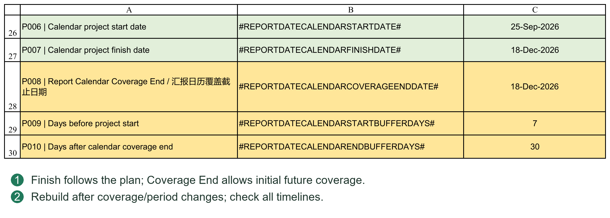
4.4 Reporting Periods and Rebuilding Report Period Calendar
The reporting calendar determines when progress is recorded and reported. It is not the working calendar used for scheduling.
Select the reporting rules required by the project:
Daily or fixed-day intervals.
A specified weekday each week.
Every two weeks from a fixed anchor date.
Fixed reporting days each month.
Month-end reporting.
Multiple rules can be enabled. PMS combines dates, removes duplicates and sorts them. A biweekly anchor establishes a recurring 14-day rhythm; it is not a date to be re-entered each period.
Start/end buffer days extend coverage around the project. The safety count limit prevents generating excessive periods accidentally. Denser and longer calendars need more timeline columns; do not increase coverage and limits without a reason.
After configuration, execute Rebuild Report Period Calendar for Project Control/VDR/Dashboard Data.
This rebuilds the shared dates for:
Project Control progress inputs.
VDR Baseline Schedule, Re-schedule and Actual Progress.
Dashboard Data curves.
It does not generate Gantt headers or publish VDR Planner plans.
The confirmation shows the first/last dates, period count and affected areas. Verify them before continuing and wait for completion.
Change an existing project's calendar carefully. Values are retained where the same report date still exists, but removed dates are not automatically reassigned to other dates, and excess timeline columns may be removed. Back up first, rebuild, then verify history.
When Rebuilding Is Required
Required: initialization, changed reporting rules, extended coverage or publication beyond the existing timeline.
Normally not required: changing Duration or Predecessor within existing coverage, recording current Actual or simply switching Rpt. Basis.
Separate actions: rebuilding is not historical actual reconstruction, Planner publishing or Gantt redrawing. Use the corresponding procedures for each output.
Check timelines in PC, VDR and Dashboard Data, not only the Settings end date. A blank progress area may be normal if dates exist but document plans have not yet been published.
4.5 Vendor and Client Working Weeks Holidays and D or ED
Working calendars define which dates count as working days. Vendor and Client can have different weekends and holidays.
Working Week
Use seven text digits, Monday through Sunday: 0 is a working day and 1 a nonworking day.
0000011: Saturday and Sunday off.
0000001: Sunday only off.
0001100: Thursday and Friday off.
Retain all seven digits and leading zeros. Do not enter them as ordinary numbers that become 1 or 11, and do not mark every day nonworking.
Holidays
Enter valid Excel dates within each Vendor/Client range bounded by Holiday Start and Holiday End. Add more holidays between the relevant boundaries, preserving the boundary Tokens; do not place them outside the configured range.
The working week defines recurring nonworking weekdays, while holidays add public holidays or agreed shutdown dates. Together they determine D calculations.
D and ED
D: uses the applicable working calendar, skipping its weekends and holidays.
ED: elapsed calendar days without skipping weekends or holidays.
For example, with Saturday/Sunday off and no additional holidays, a Friday task with a duration of 3D normally finishes Tuesday; 3ED finishes Sunday. This example counts the task's first day and must not be applied directly to Predecessor Lag counting.
PC ordinary tasks use the Vendor working calendar for D. Planner review and resubmission cycles use Client and Vendor calendars respectively, with each cycle's own D/ED unit. Task Duration Unit and dependency Lag unit are separate; changing one does not change all date calculations.
Configure calendars before scheduling where possible. After changing an active project's calendar, verify scheduling and planned progress, republish document plans and refresh curves/Gantt as needed. Published data and static pictures do not all update automatically.
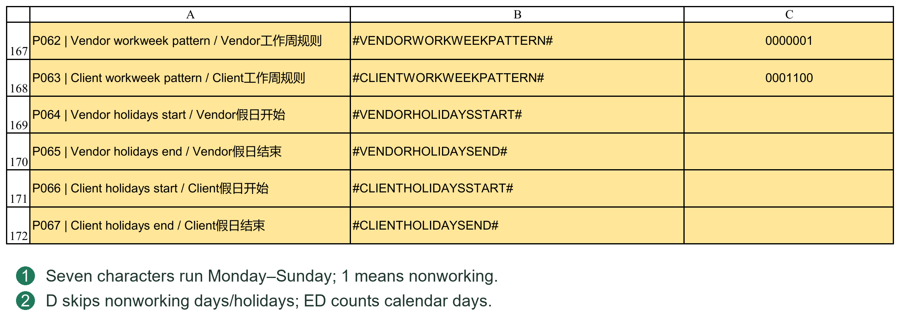
4.6 Initialization Sequence and Completion Checks
The recommended sequence follows business dependencies, not the physical order of buttons in Settings.
1. Create a separate project folder and workbook copy, enter Full and retain a pre-initialization backup.
2. Clear old document records if needed and check retained plans, actuals and report content.
3. Configure project information, parties, paths, progress rules and working calendars.
4. Import the new list and check groups and file tasks. Import an empty list if there are no engineering documents.
5. Confirm PC WBS 0, Project Start and Calendar Coverage End; configure reporting rules and rebuild the reporting calendar.
6. Prepare document dates and planned progress in VDR Planner, then publish to the selected Baseline or Re-schedule areas.
7. Complete procurement, fabrication and other PC tasks, dependencies, durations and weights; verify the overall schedule.
8. Rebuild the calendar if scheduling exceeds coverage. Check affected planned progress, then configure and refresh Dashboard, curves and reports.
The essential order is to establish the reporting calendar before publishing Planner planned progress. You need not finish the entire PC schedule before generating the first calendar.
Before formal registration, check at least:
No old project name, number or party details remain.
WBS 0 has a valid Start and the reporting timeline covers the required period.
Vendor/Client working weeks and holidays are correct; task and cycle units meet the project agreement.
VDR, Planner and PC document lists match, with no group row registered as a document.
Ordinary task and document weights are appropriate and progress rules meet the contract or project agreement.
Old actuals, historical curves and narrative have been handled for the new project.
Run Check Document Lists and Check System Consistency; read and resolve findings that affect formal use.
System checks can find configuration and data relationship problems, but cannot approve the practical suitability of plans or progress rules. Save an initialization backup before routine planning and execution.
Chapter 5 Maintaining WBS Task IDs Weights and Hierarchy
5.1 WBS Task IDs Summary Tasks and Leaf Tasks
WBS No. Identifies the Hierarchical Position
For example, 2 can represent procurement, 2.1 a procurement package and 2.1.1 a specific activity within it. WBS 0 represents the entire project.
WBS numbers should be unique. Place each parent's children consecutively below it. Font, color and indentation are display aids; the WBS number is a key structural identifier.
Task ID Identifies a Task in Dependencies
The system maintains Task IDs in task order. They are neither Excel row numbers nor WBS numbers. Use Task ID in Predecessor.
If WBS 2.1.1 has Task ID 18, reference it as 18FS, not 2.1.1FS. Excel's left-hand row numbers identify cell positions, not task dependencies.
Summary and Leaf Tasks
A Summary task has subordinate tasks below it and summarizes phase dates and progress.
A leaf task has no children and is an executable work item with its own duration and dependencies.
An ordinary parent's Start and Finish summarize its children. WBS 0 Start is a separate project anchor; see 6.3.
Engineering Document Tasks
Imported file tasks carry document identifiers and the Design Doc. attribute. Discipline and equipment group rows are not documents. Do not mark ordinary procurement tasks as design documents or replace a file's identity by casually overwriting its document number.
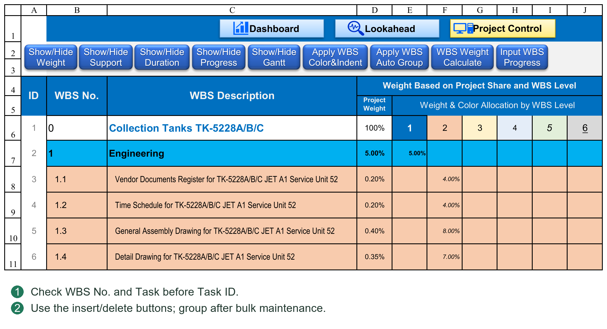
5.2 Adding and Deleting Tasks and Maintaining Dependencies
Adding Tasks
Prefer PC's WBS row insertion tool to copying and inserting entire rows containing old business data.
1. Select the insertion position. New rows are inserted above it; the overall project task must remain within the task area.
2. Enter the number of rows and execute.
3. Enter WBS No., Task Description and planning information in the new rows.
The tool creates the required row structure and formulas, reserves Task IDs and remaps existing Predecessor numbers. Filling reserved rows does not require a full manual ID refresh after each task name.
For example, if Task ID 20 is referenced as 20FS, inserting two rows before it changes its ID to 22 and the reference to 22FS. The dependency still points to the same task, not the old number.
Deleting Tasks
Use the WBS deletion tool, review affected tasks and dependencies, then confirm. Select a complete branch when deleting a parent. To remove a parent but retain its children, first restructure their WBS hierarchy.
After deletion, remaining Task IDs and references are remapped:
If the deleted task was the only predecessor, the related Predecessor becomes blank.
With several predecessors, only the deleted reference is removed; others are retained with updated IDs.
If several tasks reference the deleted task, each dependency is handled separately.
For 10FS,15SS+2D, deleting Task ID 10 does not remove the relationship to the original task 15, although 15 may acquire a new ID.
After a relationship is removed, review downstream Starts and logic. Repairing identifiers does not automatically redesign the business schedule.
Precautions
Do not edit Task IDs manually; direct edits are corrected by the system.
Do not sort only selected columns, separating task descriptions, dates, weights and dependencies.
Deleting a design task in PC does not delete it from Planner; later publishing may reintroduce it. Use Import for formal document list changes.
Check affected relationships and run consistency checks after insertion/deletion. Do not rely on Ctrl+Z for batch recovery.
5.3 Weights Auto Group and Hierarchy Styling
Task Weights
A weight measures a task's contribution to the project or its parent, not simply its duration. Allocate it according to the agreed basis, such as workload, cost or contract milestones.
Hierarchical weights are converted through parent levels. Direct children of the same parent should normally total 100%. If Engineering is 20% of the project and a document activity is 50% of Engineering, its total project weight is 10%.
After changing weights, run the weight calculation and check total weights and parent progress. Do not add a level weight to its converted total project weight.
Auto Group Tasks
Auto Group creates or refreshes WBS expand/collapse structure and performs related ID and summary schedule checks. Run it after additions, WBS changes or hierarchy adjustments to align grouping with the current structure.
Auto Group neither judges WBS suitability nor assigns task weights.
Apply WBS Color & Indent
Hierarchy sample cells supply background, indentation and fonts. Font color, size, bold and italic apply to WBS No. and Task Description. Underline applies only to Task Description; these font attributes are not applied to weight cells.
Styling identifies hierarchy without changing dependencies or progress. Manual indentation is not a substitute for maintaining WBS numbers.
5.4 Inserting Several Task Rows at Once
Select a row and click Insert WBS Task Rows. Enter an integer from 1 to 500. Rows are inserted above the selection; insertion above the overall project task is prohibited. To append, select the first empty row after the actual last task.
The system brings in required formulas, formats and validation, reserves Task IDs and remaps existing dependencies. It does not copy the selected task's name, dates and progress as new tasks. Fill WBS No. and Task in batches, then run Apply WBS Auto Group once.
Do not repeatedly copy entire rows just to retain formulas on the right, or edit reserved IDs. Check ID order around the insertion, the actual tasks referenced by old dependencies, and new hierarchy and weights.
5.5 Reviewing Dependency Effects Before Deletion
Select one row or a contiguous block in PC and click Delete WBS Task Rows. The tool supports 1–500 rows and cannot delete the overall project task. Review its deletion and dependency preview before confirming.
If multiple tasks use the deleted predecessor, each must lose that reference. If a downstream task has several predecessors, retain the unaffected relationships and remap their IDs.
For 8FS,12SS+2D, deleting original Task ID 8 should retain the relationship to the original task 12 under its new ID, rather than clearing the whole cell. Check tasks left with no Predecessor: they are no longer driven by the removed relationship, and retained dates are not a new logical justification.
Deletion changes structure and must not rely on Ctrl+Z. Canceling confirmation should leave tasks and dependencies unchanged. Deleting a design task does not remove its Planner record; run a document list check.
5.6 Styling Grouping and Weight Calculation Are Different Operations
Apply WBS Color&Indent reads hierarchy style samples and applies background and indentation to WBS No. and descriptions, with font color, size, bold and italic. Only descriptions receive underlining, not WBS No. or weights. Rerun the command after changing samples; sample edits alone do not restyle every task.
Apply WBS Auto Group rebuilds WBS row groups and configured column groups and refreshes related structure and summaries. It is not simply coloring or inserting tasks. Run it after a batch of structural changes, not after every task entry.
WBS Weight Calculate derives total weight from the task's level and all parent-level weights. Rerun it after changing percentages; check sibling totals and total project weights. Do not overwrite calculated totals with manually chosen percentages.
Chapter 6 Planning Dates Durations and Dependencies
6.1 Start Finish Duration and Unit
Ordinary Leaf Tasks
Start is the task start date. Enter a number in Duration and choose D or ED separately in Duration Unit. PMS calculates Finish from those inputs.
3 with D: three working days.
3 with ED: three elapsed calendar days.
Do not enter 3D or 3ED in the numeric Duration column.
Task duration includes the first day. With weekends off and no holidays, a Monday task of 5D finishes Friday. Zero duration can represent a date milestone; a missing duration is not zero.
Baseline and Re-schedule units are independent. A parent's own Unit determines its span from summary Start and Finish; child durations are not simply added.
Manual and Automatic Dates
With no Predecessor, Start can be entered manually. Finish may still be system-calculated after Duration is entered. A manual Start does not mean every value in the row is excluded from calculation.
Overwriting an automatic task's Start or Finish clears that plan's Predecessor, switches to manual dates and displays a notice. Editing Finish with a valid Start recalculates Duration using Unit. A later Duration edit may calculate Finish again.
Engineering Document Tasks
Planner publishes dates, durations and relationships; PC does not recalculate every review round. PC changes do not write back automatically. Revise review cycles and Code milestones in Planner and republish where possible.
Actual Duration
Actual Duration is calculated from Actual Start, Actual Finish and its independent Duration Unit. D excludes Vendor nonworking days; ED counts elapsed days. Do not enter a future Actual Finish merely to produce a duration.
6.2 Predecessor Rules Automatic Scheduling and Task Mode
Basic Syntax
Task ID + relationship + optional lead/lag, for example:
18FS: start after task 18 finishes.
18SS+3D: start three working days after task 18 starts.
18SS+3ED: start three elapsed days after task 18 starts.
18FS-2D: start two working days earlier than normal FS handover.
PC supports four relationships:
FS (Finish to Start): predecessor Finish constrains this Start.
SS (Start to Start): predecessor Start constrains this Start.
FF (Finish to Finish): predecessor Finish constrains this Finish.
SF (Start to Finish): predecessor Start constrains this Finish.
Daily FS starts on the next counting day after predecessor completion, then applies Lag; it does not default to the same day. An omitted Lag unit defaults to D. Lag measures an offset without counting its origin as day 1, unlike inclusive task duration.
FF/SF require this task's valid Duration to derive Start from constrained Finish. FS/SS can calculate Start first, but a complete Finish still requires duration information.
Multiple Predecessors
Separate them with English commas, for example 18FS,23SS+5D. PMS considers every constraint and uses the latest required Start. References may point downward in the table; a predecessor need not be above the task.
Prohibitions and Limits
No self-reference, circular dependencies or nonexistent Task IDs.
Ordinary Summary tasks cannot have Predecessors or act as predecessors.
WBS 0 is a special start anchor; other tasks may reference it only with SS.
Do not substitute Chinese commas, WBS numbers or Excel row numbers.
Invalid direct input is reported and cleared. If upstream dates, durations or calendar settings are missing, inspect Schedule Issue and the related tasks. Re-entering the same relationship does not resolve missing inputs.
Live Scheduling
Editing Predecessor, Duration, Unit or relevant dates invokes the VBA scheduling engine for the affected plan and writes dates. A separate Recalculate click is not required. Scheduling does not depend on filling the sheet with PredecessorStart() formulas.
Some system dates contain a lightweight formula marker identifying AUTO. It does not contain the full dependency calculation. The formal relationship remains in Predecessor; do not change numbers inside the date formula to revise logic.
Task Mode
Task Mode at the top shows automatic/manual status for the selected task and plan, separately for Baseline and Re-schedule. AUTO identifies system-generated dates; MANUAL identifies manual status. Blank or unscheduled does not mean planning is complete.
Task Mode is a status display, not a switch or approval. Change formal inputs such as dependencies or dates to revise scheduling.
Example Task Unit and Lag Unit
Assume task 10 starts Friday; Vendor weekends are Saturday/Sunday with no holidays. Task 20 has Duration 3 and Unit D.
10SS+3ED places task 20 on Monday after three elapsed days. Its own duration is still 3D, finishing Wednesday.
10SS+3D skips the weekend and places task 20 on Wednesday. Its own 3D finishes Friday.
Changing task 20's Unit to ED changes only its own duration basis; it does not change 3D in Predecessor to 3ED. If an origin or target falls on a nonworking day, check the actual dates produced by the calendar rules.
For 10FS,15SS+3D, if the constraints require Tuesday and Thursday respectively, Thursday is used. Their lags are not added.
Mixing Manual and Automatic Tasks
1. A task with a fixed date may have no Predecessor: enter Start, Duration and Unit manually.
2. Downstream tasks can still schedule automatically by referencing its Task ID.
3. Prefer revising Predecessor, upstream dates or Duration to overwriting an automatic Start.
4. If manual dates are genuinely needed, read the relationship-clearing notice and check dependent tasks.
If no date appears, distinguish invalid relationships from insufficient inputs. Correct self-reference, cycles and nonexistent IDs; provide an upstream Finish for FS; provide this task's Duration for PC FF/SF. Planner FS/SS do not require this task's Duration first; see 10.2.
6.3 WBS 0 Summary Dates and Progress Rollup
Ordinary Summary Tasks
Start is the earliest child Start and Finish the latest child Finish. Duration follows the parent's Unit. Parallel durations are not summed.
For children running Monday–Wednesday and Tuesday–Friday in the same week, the parent spans Monday–Friday, not the sum of their durations.
The WBS 0 Overall Project Task
Start: the project anchor, entered manually or driven by a valid Predecessor.
Finish: the latest subordinate task Finish.
Duration: calculated from its Start, summarized Finish and Unit.
WBS 0 Start is therefore not forced to equal the earliest child Start. If preparatory work precedes the formal project start, review its meaning rather than expecting PMS to move the anchor automatically.
WBS 0 must not form a cycle. A project anchor that depends on a task which itself depends on the anchor is invalid. Reference its actual Task ID; do not permanently assume 1.
Parents Follow Their Children
Do not overwrite parent Start/Finish to move an entire phase. Scheduling or structural refresh may summarize and replace the value. Revise the appropriate leaf tasks.
WBS and structural changes maintain summary relationships; Auto Group also refreshes them. Date rollup and weighted progress rollup are different: correct dates do not prove correct weights.
Why an Edited Parent Date Reverts
An ordinary parent summarizes its children; it is not a control for shifting the whole branch. Refreshing recomputes the summary, so a later parent Finish does not delay every child. Change executable leaf tasks, dependencies or durations.
WBS 0 Versus an Ordinary Parent
An ordinary parent's Start is its earliest child Start; WBS 0 retains the project anchor. Its Predecessor must use the currently supported SS rule without cycles. Do not assume ordinary parent rules or arbitrary FS/FF/SF combinations apply.
For example, the anchor may depend on PO Effective and document submissions may depend on Project Start. PO Effective cannot itself depend on that anchor. If the business requires starting one day after PO completion, define a valid dated start node and permitted SS offset rather than using ambiguous IDs or circular logic.
Parent Duration is its Start–Finish span. Two parallel 5D children do not necessarily produce 10D. A parent using ED includes weekends; D excludes Vendor nonworking days. Date spans and progress weights have separate calculation bases.
6.4 Distinguishing Duration from Lag
Suppose A finishes Friday and B has Duration 3, Unit D and Predecessor 8FS+2ED. The 2ED controls the offset from the predecessor node; B's 3D controls its own Start–Finish working duration. They are independent and may use different units.
Changing the relationship to 8FS+2D changes only Lag counting. It does not set B's Unit. Changing B to ED does not change the relationship's 2D to 2ED.
Check relationship type, Lag unit, task Unit, working week and holidays, not Duration alone. Inclusive duration and date offsets are different: the former normally includes the first day; the latter moves a specified number of days forward or backward.
6.5 Task Mode Is a Status Display
Task Mode shows the selected task's state, separately for PC Baseline and Re-schedule, with another display in Planner. A hidden Re-schedule display is not needed to determine Baseline status.
AUTO means system-generated automatic dates; MANUAL means manual dates or a non-system formula; UNSCHEDULED means no schedule has been established. An automatic date may contain N("PMS_AUTO"). N returns 0 for text, leaving the date unchanged while identifying its source.
Task Mode does not certify schedule correctness. A manual formula producing the same date is not a system-recognized automatic schedule. Finish minus Start equaling Duration does not prove dependency logic ran. Summary refresh may restore manually edited parent dates from children; see 6.3.
Chapter 7 Managing Baseline Re-schedule and Actual
7.1 Baseline Re-schedule and Actual
Baseline
Baseline holds the original or approved reference plan for comparison. Retain an approved-plan backup and avoid overwriting it with routine forecasts.
Re-schedule
Re-schedule holds the revised plan with independent Start, Finish, Duration, Duration Unit and Predecessor. It need not share Baseline dependencies.
Actual
Actual records starts, completions and progress that have occurred. Do not substitute planned dates or planned progress.
Rpt. Basis
Selecting Baseline or Re-schedule determines the plan used in relevant summaries and displays and controls revised-plan visibility. Switching Basis neither copies one plan to the other nor clears it.
Baseline is not a permanently locked approval snapshot and can still be edited. Protect the formal baseline through management procedures and backups. Before choosing Re-schedule, confirm valid revised plans for the required tasks; missing values do not necessarily fall back to Baseline.
Select the target explicitly when publishing Planner. Revising a plan does not force publication to Re-schedule; during initial planning, users may republish Baseline as required.
Switching Revising and Publishing Are Different
Switching Rpt. Basis selects an existing plan for comparison and display; it does not create one.
Editing PC Baseline changes Baseline; the other plan's dates, relationships and Unit are not linked copies.
Editing Planner changes the working document plan. Until published, it is not the updated VDR/PC result.
Publishing to Baseline or Re-schedule writes Planner results to the selected target and overwrites the corresponding document planning fields.
For example, Baseline retains a document Finish of 30 June while Planner is revised to 15 July. To preserve the baseline, publish the revision and planned progress to Re-schedule. Switching to Re-schedule uses the revised comparison; switching back should retain the original baseline. An accidental Baseline publication cannot be undone by changing the dropdown.
The two plans share tasks, document lists, WBS and actual events; they are not separate projects. Planning fields and planned progress storage are independent. Task insertion/deletion, weights and shared working-calendar changes still need review for both plans.
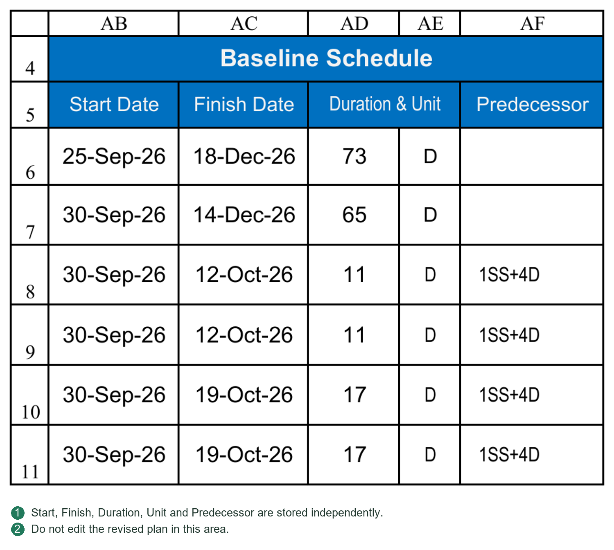
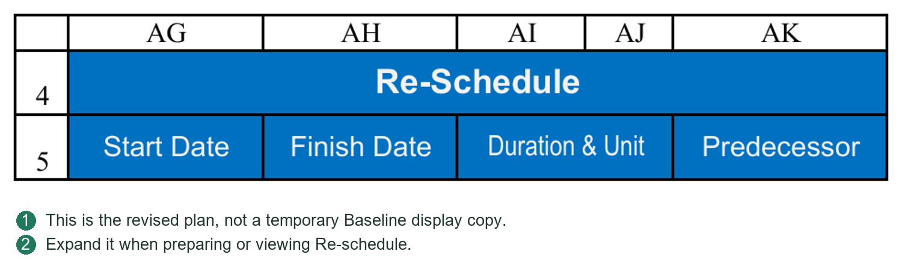
7.2 Entering Actual Progress
Confirm Report Date before entering current actuals. It affects planned progress and variance as of that date and must not be changed merely to improve chart appearance.
Ordinary Tasks
Enter Actual Start, Actual Finish and progress for the applicable reporting date based on actual completion. Distinguish not started from not entered: 0% is explicit zero progress; blank may mean unrecorded.
Use the project's agreed measurement rules, not necessarily elapsed time divided by planned duration. Procurement may use inquiry, purchase order and delivery milestones; fabrication may use completed quantities or milestones.
Engineering Document Tasks
VDR submissions, review Codes and project rules provide document actual progress. Maintain true VDR records and calculate progress there. Do not overwrite PC formulas with a percentage to hide a source-record problem.
Parent and Overall Progress
These roll up child progress with weights and should not be manually entered again. Check consistency between actual completions and 100% progress.
Planned Versus Actual Progress
Ordinary leaf planned progress uses Start, Finish, Report Date and D/ED; engineering tasks use VDR planned progress. Actuals come from execution records, not inferred completion based on dates.
Use explicit percentage entries such as 20%, avoiding confusion with the number 20. For #N/A or #VALUE!, check dates, Unit, document matching, weights and upstream records rather than replacing every error with zero.
PC updates do not automatically update Dashboard Data history, static curve pictures or generated reports. Follow Chapters 16–18.
7.3 Switching Display Versus Rewriting Data
PC Basis selects the reporting plan and corresponding display. It does not duplicate one dataset into the other. Each plan stores its own Start, Finish, Duration, Unit, Predecessor and relevant document milestone intervals.
Keep Baseline selected if no formal Re-schedule exists. Residual revised-plan values are not an approved plan. Prepare and verify a new plan before explicitly publishing to its target.
Actual Duration has its own Unit and follows actual dates. Basis switching does not change actual events. Check Baseline and Re-schedule units independently.
Chapter 8 Generating and Reading the Gantt Chart
8.1 Generation Interpretation and Refresh
The Gantt chart displays planned and actual task execution on a daily timeline using static drawing. The current version does not provide Project-style day/week/month timescale switching.
Generating and Updating
1. Verify task dates, Unit, actual progress, Report Date and Rpt. Basis.
2. Generate/update the Gantt header on first use or when the date range changes.
3. Execute the chart drawing/refresh command for the current data.
4. Check the legend, date range and recorded generation basis.
Baseline draws the baseline plan; Re-schedule draws the revised plan. D/ED affects related date and progress positioning. Actual information must come from real records; a planned bar does not prove completion.
Limits of a Static Chart
Changing Basis, Report Date or task plans does not continuously redraw the chart. Its status area records the Basis and date used at generation. Follow refresh prompts as needed; refresh changed data before external use even if no prompt appeared.
Expanding and Collapsing
Opening Gantt applies a focused layout, collapsing selected weight, support and progress areas. Closing it restores PC's default layout, not every prior temporary visibility choice. Task positioning can assist browsing while Gantt is open.
Use the workbook's legend to distinguish plan, actual and variance. Do not infer colors or patterns by intuition. Filtering and hiding do not delete tasks.
Gantt is an output view, not a separate schedule source. Do not manually color chart cells instead of scheduling or delete entire date columns to reduce the visible range. For long projects, set reasonable coverage rather than generating unnecessary columns.
PC should now provide a clear hierarchy, reasonable weights and valid dates and dependencies. Chapter 10 explains detailed document planning and publication.
8.2 Correct Button Sequence
Set PC Basis and Report Date and verify Start/Finish/Duration/Unit and actuals. Open Show/Hide Gantt, run Create Gantt Header, then Build Gantt Chart.
Create Gantt Header establishes daily dates and drawing limits; it does not redraw task bars. Build Gantt Chart draws the static chart using current data and Basis. Regenerate the required output after changing data.
Check the generated Basis and Report Date in the status area. A Basis-change prompt permits rebuilding or retaining the old chart temporarily; retaining it does not make it the new Basis result. Daily, weekly and monthly reporting periods do not imply Gantt timescale switching.
Opening Gantt collapses Weight, Support and Progress to leave more usable screen space. Closing restores PC's default view. Check structural areas before changing widths.
Chapter 9 Importing and Updating the Engineering Document List
9.1 Import Fields and Hierarchical Lists
Use the existing VDR Import headers. Paste values/text, not formulas from the source workbook, and do not overwrite headers.
Each document row needs at least Vendor Document No. and Vendor Document Title. The number is a key for matching and history restoration: keep it complete and unique, without stray spaces or casual renumbering. Titles must also satisfy validation and avoid ambiguous duplicates.
Enter Document Weight, Discipline, By Whom, Doc Size and First/Final POI according to the project and field guidance. Missing weights or disciplines can affect rollups; permitted import does not mean information is sufficient.
Flat Lists
Use a flat list if discipline/equipment groups are unnecessary. Do not fill WBS group fields just to populate every column.
Hierarchical Lists
To organize by discipline, equipment or another category, complete Project Control WBS and WBS Group Description:
Group rows: WBS and group description only; no Vendor Document No., title or other document business fields.
Document rows: WBS, document number, title and attributes; leave WBS Group Description blank.
Parents precede consecutive children; WBS values are unique, groups contain children and documents are leaf tasks.
Do not insert completely empty rows within the valid list.
For an Engineering root WBS of 1 in Settings, for example:
ID 1 | WBS 1 | Group: Engineering
ID 2 | WBS 1.1 | Group: Structural
ID 3 | WBS 1.1.1 | Document: DOC-001 / Structural General Arrangement
ID 4 | WBS 1.1.2 | Document: DOC-002 / Foundation Loads
ID 5 | WBS 1.2 | Group: Electrical
ID 6 | WBS 1.2.1 | Document: DOC-003 / Electrical Load List
The Engineering root number and name must match Settings. The values 1 and Engineering above are examples.
Import IDs
Hierarchical import IDs enumerate all valid rows, including groups and documents. Leave the entire column blank for system handling, or enter a complete consecutive sequence from 1; do not fill it partially.
Import ID, VDR document serial number and PC Task ID serve different purposes and need not always match. Actual file tasks receive Design Doc.=Y; group rows are not registered as VDR documents. Import does not depend on premarking a PC row Y.
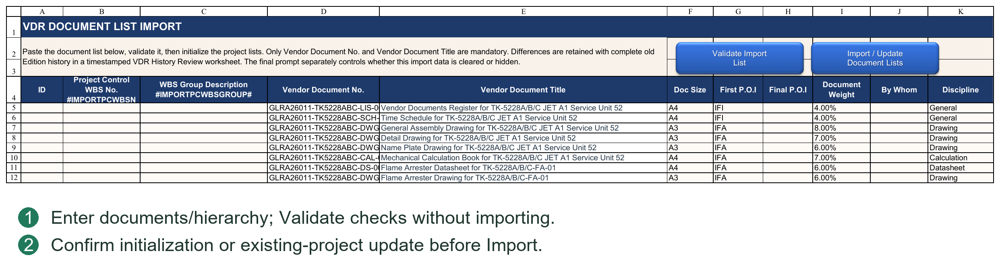
9.2 New Project Initialization and Empty Lists
After Import/Reset Document List, read the current data summary and choose Initialize New Project or Update Existing Project. Cancel performs no import.
Initialize New Project
Initialize New Project rebuilds VDR, Planner and PC design tasks after old document records have been cleared. It does not restore old Round records or planned/actual document history.
Existing VDR correspondence, GDR or Transmittal records may disable initialization. Confirm that this is genuinely a new project before using Clear Existing Document Records under Chapter 4. Never clear live history just to enable the mode.
Empty Lists
For no Vendor Document List, clear the import data and execute an empty-list import, confirming EMPTY VDR. This removes the corresponding PC design tasks and clears VDR/Planner lists and related progress history. A retained blank formula-template row is not a real document.
An empty list is an explicit business decision, not a temporary delay in importing. On an existing project it affects files and history; back up and review the warning first.
After importing, establish the project anchor and reporting calendar, then plan and publish documents as in Chapter 4.
9.3 Updating Existing Projects and Restoring History and Plans
Update Existing Project revises a live list or hierarchy. It rebuilds related lists and restores matching data by Vendor Document No., including:
VDR Round submission/return records and related history.
VDR Baseline, Re-schedule and Actual Progress history.
User planning inputs in Planner.
Relevant PC document plans and history.
Matching VDR associations in Transmittal Register.
Restoration follows document identity, not old row positions. Rebuilding hierarchy requires corresponding Task ID and dependency conversions. A document moved between disciplines must not inherit another document's history simply because its row changed.
Meaning of Common Changes
Same number and title: normally restored as the same document.
Same number, changed title: can remain linked by number; check title differences and archive links.
New number: a new document without inherited history.
Old number omitted: absent from the rebuilt list; review differences and unrestored records.
Changed number: normally removal of the old document and addition of a new one. A matching title does not guarantee full history transfer.
Import does not move or delete existing Documents/Transmittal archive folders. Changes to titles, serials or hierarchy do not automatically rename physical folders. Check retained links before subsequent processing.
After updating, verify both plans, history, dependencies and Register associations, not only document counts. Ordinary procurement/fabrication tasks are outside list rebuilding, but their references to added/deleted documents may be affected.
9.4 Difference Review Sheets Backups and Verification
Both modes create an automatic backup before modifying document rows. Note its path from the completion message; do not confuse the workbook backup with business records archived under Backup.
Differences or unrestored records generate a visible Review sheet showing additions, removals, title changes and missing restoration. Review is not an automatically approved repair and does not replace a full backup.
Check in this order:
1. Whether additions, removals and renaming match the intended change.
2. Whether Round records, links, Planner inputs and planned progress belong to the correct document.
3. How unmatched Transmittal entries and unrestored data should be handled.
4. PC hierarchy, Design Doc., Task IDs and dependencies.
5. Run Check Document Lists and Check System Consistency and read the findings.
Import locates target fields through Settings structure parameters. If a structural Token, required field or template is mismatched, repair the sheet/configuration as instructed. Do not edit deep internal templates to bypass the error or delete headers and retry.
Yes/No/Cancel at completion determine clearing import inputs and retaining the import sheet's visibility; they do not undo completed import. Revert using a verified backup and check the project folders.
For large lists, Excel's status bar reports the processing stage. Wait for completion; do not repeatedly click Import or close Excel while it runs.
9.5 Validate Versus Import
Validate Import List checks required fields, numbering, hierarchy and duplicates. It does not write the list to VDR, Planner and PC. Validate, correct findings, then execute the selected mode through Import / Update Document Lists.
Initialization is for new projects, not adding a few documents to an existing project. Update matches official Doc No. and handles differences while restoring history and plans. A changed number can be interpreted as removal/addition, not automatic renaming.
Before execution, read the mode, differences and backup information. Afterward check added, retained and removed documents, parent WBS, Task IDs and dependencies. Matching counts alone do not prove a correct import.
Chapter 10 Planning Documents in VDR Planner
10.1 Document List and the Project Start Anchor
The document list comes from VDR Import and links to design-document tasks in VDR and PC. Do not normally create a separate list manually in Planner. Add, remove or renumber documents through the list-import workflow.
The Planner document area does not contain discipline or equipment WBS summary groups. Task IDs may be nonconsecutive because PC contains groups or ordinary tasks. Do not manually renumber them 1, 2, 3 merely for appearance.
Project Start anchor
Project Start, above the document area, reads the PC project-summary task whose WBS No. is 0, including its actual Task ID and Start under the current planning basis. Its Task ID is not hard-coded as 1.
This is a start anchor, not a design document. It is excluded from document counts and publishing and has no Review Code. Do not replace it with the first document in the list.
For example, if Project Start has Task ID 1, a document may use 1SS or 1SS+5D. If the displayed ID differs, use that actual ID.
Before planning or publishing, confirm that PC Rpt. Basis matches the intended plan and check the anchor date. If WBS 0 is missing, the Task ID is invalid or Start is blank, correct PC first. Do not conceal the problem by entering an arbitrary anchor date.
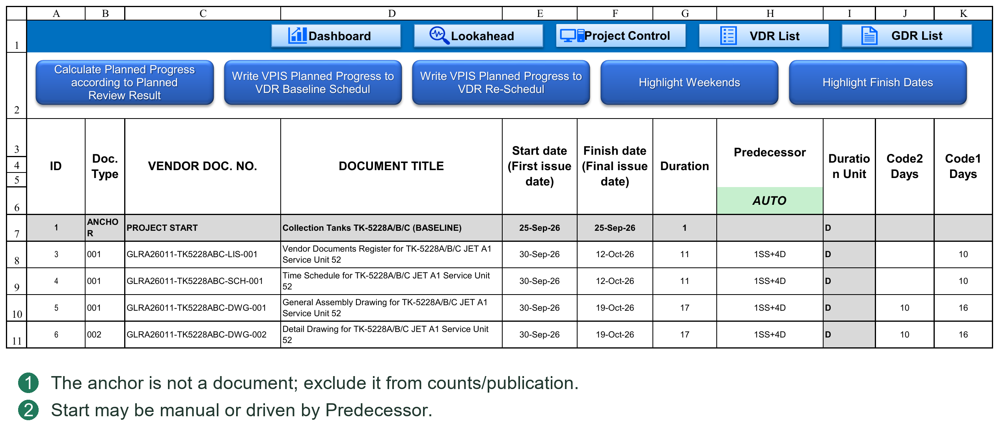
10.2 Manual Dates and Predecessor Scheduling
Manual planning
With Predecessor blank, enter the first-submission date in Start. This suits agreed delivery dates or documents that do not require dependencies.
Automatic planning
Enter a Task ID and relationship, such as 18SS+10D, in Predecessor. The system calculates Start. When Start changes, formulas update the planned milestone dates on the right, then Finish, Duration and Code offsets.
Planner supports:
FS、SS。
Positive and negative D / ED lags.
Multiple predecessors separated by commas.
References to design documents above or below the current row.
References to the Project Start anchor.
FF and SF are unsupported, as are references to ordinary PC procurement or manufacturing tasks. After publishing to PC, integrate these tasks into the complete project network there.
Planner Duration is a result of date planning, not a prerequisite for calculating an FS / SS Start. A missing Duration must not prevent entering Start or Predecessor. An FS predecessor document must, however, have a valid Finish.
Self-references, cycles, invalid Task IDs and unsupported relationships produce a warning and clear the invalid input. Manually overwriting an automatic Start clears that row's Predecessor and makes the plan manual. Manual entries and automatic scheduling can coexist.
10.3 Submission, Review and Resubmission Cycles and Calendars
Planner has two cycle settings, each with a numeric value and D / ED unit:
Client Review Cycle: time required for each client review.
Vendor Resubmit Cycle: time required for the vendor to revise and resubmit after receiving the review result.
D uses the relevant Client or Vendor workweek and holidays in Settings; ED adds calendar days. Units may differ, for example client review 10D and vendor revision 7ED.
Planned dates follow this sequence:
First submission → first client review return → vendor revision and resubmission → Round 1 client review return → further vendor revision and resubmission → Round 2 client review return…
First return date = first submission date + Client review cycle.
Each subsequent return date = previous return date + Vendor revision/resubmission cycle + Client review cycle.
Apply the two calendars sequentially, not one calendar to the sum of both cycles. This matters especially when vendor and client nonworking days differ.
For example, first submission is Monday, both cycles are 2D, both parties have weekends off and there are no holidays. First return is Wednesday; revision and resubmission finish Friday; another two client working days give the Round 1 return on the following Tuesday.
The date chain on the right uses Excel formulas. Cycle settings are shared parameters for this Planner plan, not separate settings for each document or round. Changing a cycle can affect many documents. Check the chain before publishing; routinely overwriting date formulas is not an appropriate adjustment method.
Checking the date chain
Select one document and check each stage: Start/first submission → first Client return → Vendor resubmission → next Client return. Each stage uses only the responsible party's cycle and unit.
For example, Monday submission with a Client Review Cycle of 2D returns Wednesday. A Vendor Resubmit Cycle of 2ED gives Friday resubmission. Another Client 2D returns the following Tuesday. A Client holiday on the following Monday pushes that return later. Changing Vendor holidays must not make Client review use the Vendor calendar.
Duration Unit is not a master switch for these two Cycle Units. It expresses the final Start-to-Finish duration and Code offsets. Changing the document Unit to D does not change an ED Client Review Cycle to D.
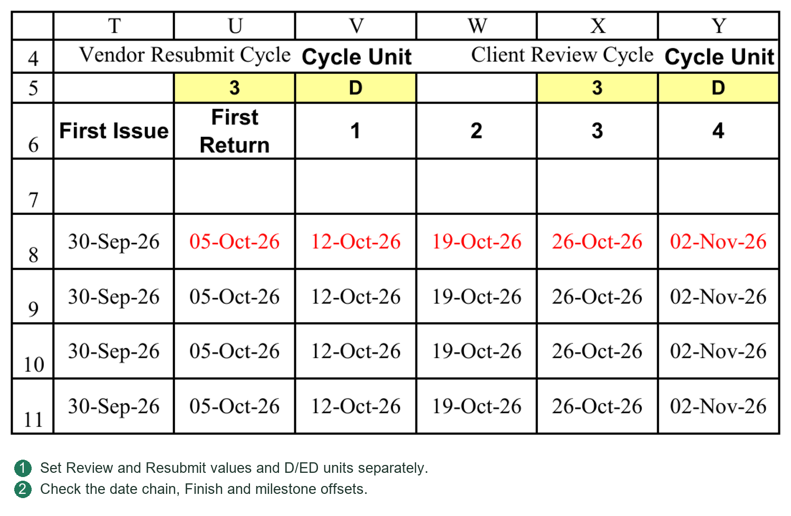
10.4 First Issue, First Return, Round and Review Code
First distinguish the event from the review outcome.
First Issue: the first submission event.
First Return: the first actual valid review-return event, not necessarily a return of revision 00. Actual calculation also checks the corresponding submission and return dates.
Round 1, 2, 3…: subsequent round milestones. In Planner's planned-date area, each numbered milestone is the review return after that round's resubmission, not the resubmission date alone.
Review Code: the client's review outcome, such as 1, 2, 3 or project-defined A, B, C.
First Issue and First Return are not additional client Review Codes or alternative names for Code3.
In the area specifying when each Review Code is planned to be achieved, column headings identify outcomes or events; enter the milestone at which each is expected:
Select First Issue for the first-submission event; the compatible value 0 also means first submission.
Select First Return for the first-return event.
Enter 1 if Code3 is planned at the Round 1 return.
Enter 2 if Code2 is planned at the Round 2 return.
Enter 3 if Code1 is planned at the Round 3 return.
These numbers are planned rounds, not repeated Code values. Entering 2 in the Code2 column means “achieve Code2 in Round 2”; the two numbers do not have to match.
If Code2 is expected at the first return, select First Return in that Code column. Leave unused outcome milestones blank. Do not assign rounds arbitrarily just to fill every cell.
Code definitions and progress configuration
Keep Planner outcome-column definitions, Settings percentage-table Code definitions and progress-behavior Code definitions consistent. A project using A, B, C cannot change Planner alone while leaving 1, 2, 3 elsewhere.
Clearly distinguish event names from actual Review Codes. Configure definitions to suit the project, but do not change display text without associated settings. Do not arbitrarily delete structural headings or location parameters.
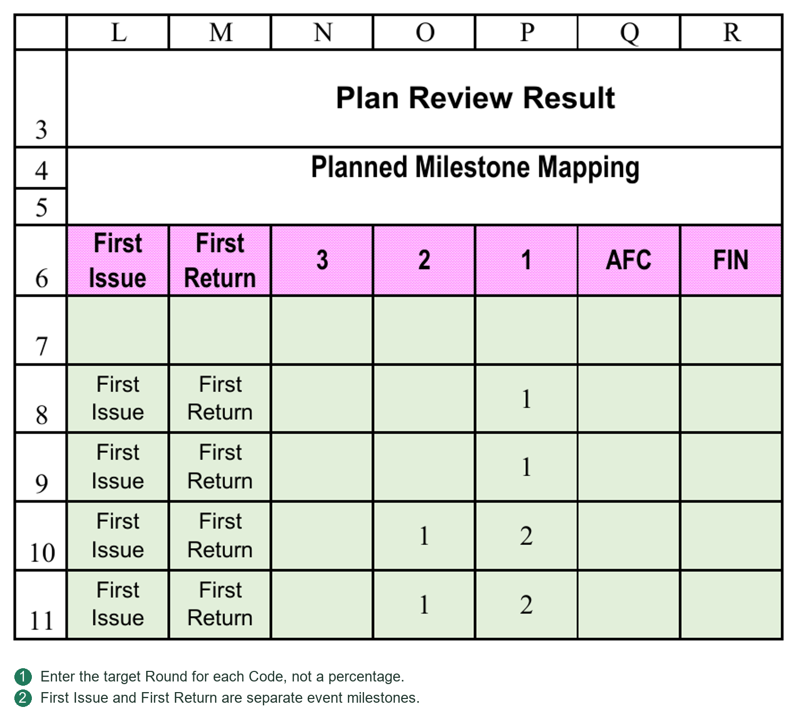
10.5 Finish, Duration and Code2 / Code1 Offsets
Finish
Finish is determined by the configured planned milestones and the date chain on the right. It is the last milestone date currently planned. A complete document plan normally includes the agreed final outcome, such as Code1.
If only an intermediate review milestone is scheduled, a populated Finish does not mean the document is planned through final approval. Also check the business meaning of the final milestone and the planned-progress total.
Duration
Duration is calculated from Start to Finish using the document's Duration Unit. ED measures calendar-day span; D uses the Vendor calendar. Task duration includes the first day.
Code2 / Code1 offsets
These measure the interval from first-submission Start to the date the specified Code is achieved. D excludes Vendor nonworking days; ED counts calendar days. They are reference offsets for dependencies, not inclusive task durations, so do not uniformly add 1.
For example, Monday submission and Wednesday Code2, with no holidays, give a Code2 offset of 2D but an inclusive task Duration of 3D.
The offset uses the Vendor calendar to match SS Lag using that calendar. The target Code date already incorporates the preceding Client and Vendor review/resubmission calendars; Client holidays have not been ignored.
Using a Code milestone as another document's start
Suppose a Datasheet has Task ID 18 and Code2 offset 20D. If GA starts when that Datasheet reaches Code2, enter 18SS+20D for GA. If another five Vendor working days are required, enter 18SS+25D.
This is a normal SS relationship using a user-supplied Code offset. The system does not interpret 18SS as Code2. A fixed value 20 does not automatically become 25 when the upstream Code offset changes. Update it yourself or use an Excel concatenation formula correctly referencing the offset cell.
Match the reference offset and Lag units. With special cases such as an upstream date on a nonworking day, compare the target date with the scheduling result rather than judging by the displayed day count alone.
10.6 Preparing Planned Document Progress
First define Document Types and cumulative progress for each event/Code in Settings according to project rules. Then specify the expected milestones in Planner.
Document Type selects the progress rule. If Type is blank or unmatched, calculation currently attempts the Undefined default. Check that default's suitability; this is not a reason to leave all documents unclassified.
After calculating planned document progress, Plan Progress contains the incremental progress at each milestone, not repeated cumulative percentages.
For example, the project specifies:
First Issue: cumulative 50%.
First Return: cumulative 50%.
Code3: cumulative 50%, achieved in Round 1.
Code2: cumulative 80%, achieved in Round 2.
Code1: cumulative 100%, achieved in Round 3.
The milestone increments are first submission 50%, first return 0%, Round 1 0%, Round 2 30% and Round 3 20%, totaling 100%. Do not add 50%, 50%, 50%, 80% and 100% as increments.
Where multiple intermediate milestones lie between cumulative targets, the Document Type's Progress by Planned Rounds setting determines whether the increase is distributed between them. This is milestone allocation, not uniform daily growth.
Checks
Code milestones are in a sensible sequence.
Cumulative planned progress does not decrease.
Types and Codes have matching settings.
Increments for a complete document plan total the intended value, normally 100%.
After changing dates or Code milestones, recalculate Plan Progress as required. Planned progress and VDR actual progress are separate calculations. Planning to achieve a Code does not mean that Code has actually been received.
The planned-round switch controls both planned and actual progress
In the Settings percentage table, commonly called P052, Progress by Planned Rounds sits to the right of Document Type and selects Y or N by type. It controls Planner allocation and whether actual progress uses that allocation. It neither disables date scheduling nor replaces Code behavior rules or Requires Return gates.
Y: Planner distributes increments between configured outcome milestones. Actual submissions may earn within-stage progress from that allocation, subject to return gates and valid Code rules.
N: Planner places increments only at First Issue, First Return and scheduled Code milestones. Intermediate rounds receive no additional allocation. Actual progress follows Settings event/Code rules, not the number of resubmissions.
For example, First Issue is 40%; First Return and Code3 are 50%; Code3 is in Round 1, Code2 at 80% in Round 4, and Code1 at 100% in Round 5. Y allocates 10% each to Rounds 2, 3 and 4 and 20% to Round 5. N allocates 0% to Rounds 2 and 3, 30% to Round 4 and 20% to Round 5. Both complete plans total 100%, but their intermediate curves differ.
N still permits dates, Baseline/Re-schedule and planned progress to be prepared and published. Changing Y/N does not automatically rewrite published plans or history. Run Calculate Planned Progress according to Planned Review Result, check Plan Progress, then publish to the selected plan as needed. Current actual and historical updates are separate operations. See Appendix C for figures and First Return boundaries.
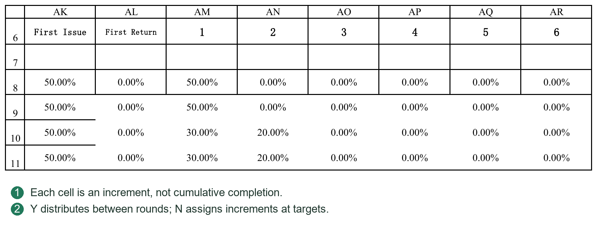
10.7 Publishing Baseline / Re-schedule Dates and Planned Progress
Before publishing, confirm matching document lists, a correct Project Start, complete dates/progress and report-calendar coverage of all milestones. Publishing is a bulk write, not a display switch.
Publishing dates and relationships
Use Publish Baseline Plan Dates to VDR & Project Control or its Re-schedule counterpart.
Date publishing writes:
Planned First / Final Issue Date for the selected VDR plan.
Start, Finish, Duration, Unit and Predecessor for PC design documents in the selected plan.
Code2 / Code1 offsets for the selected PC plan.
Duration, Unit, Code offsets and Predecessor are published as current results, not as Planner's entire date-formula chain. Predecessor Task IDs are mapped by document identity to current PC IDs rather than copied blindly. PC subsequently applies its own scheduling mechanism.
The two plans are stored separately. Publishing Baseline must not overwrite Re-schedule storage, or vice versa. Project Start is not published as a document. Ordinary procurement/manufacturing tasks are not directly overwritten by this document-date operation.
Unscheduled documents versus invalid plans
A document with Start, Finish, Duration and Predecessor all blank may be published as “unscheduled.” A warning is shown and the corresponding target dates and planning fields are cleared to prevent stale dates.
This differs from a populated dependency without a valid Start. If a partially completed plan has invalid dates, duration or Unit, date publishing is blocked and issues are listed. Correct them before continuing.
Writing planned progress
Separately use Write VPIS Planned Progress to VDR Baseline Schedule or its Re-schedule counterpart to write Plan Progress to the target VDR timeline. Publishing dates alone does not write planned progress.
Each increment goes to the first reporting date on or after its milestone. A Tuesday milestone with Friday reporting therefore enters the following Friday. Increments sharing a reporting period are combined.
This operation rewrites the selected target progress area; it does not merely append one changed milestone. Read warnings about insufficient timeline coverage or skipped documents, correct the calendar/data and write again. “Finished” does not necessarily mean all data are complete.
After publishing
Check the target VDR dates and planned progress.
Check PC design-document dates, durations, Units and relationships.
Confirm the unselected plan was not changed.
Resolve every warning about document matching, blank plans or calendar coverage.
10.8 Revisions after Publishing and One-Way Synchronization
The normal direction is VDR Planner preparation → publication to VDR and PC. PC changes do not automatically write back to Planner; automatic two-way synchronization is not provided.
For document review cycles, Code milestones, first submission or document dependencies, revise Planner first, recalculate and publish to the user's chosen Baseline or Re-schedule. Preliminary unapproved plans may still be published to Baseline; Re-schedule is not mandatory.
Direct PC design-document edits can still be scheduled, but have these implications:
Planner may retain old Start dates, relationships and review milestones.
Published Code offsets and VDR planned progress are not automatically replanned.
Later Planner publication may overwrite corresponding manual PC adjustments.
If PC dates, Planner dates and VDR planned progress differ, decide which business plan is authoritative, then revise and publish. Repeated copying between sheets does not resolve the underlying choice.
Example of a complete revision
1. Adjust GA dependencies or review cycles in Planner. Check Start, round returns, Finish, Duration and Code offsets.
2. If expected Code milestones change, recalculate Plan Progress.
3. Decide whether to overwrite preliminary Baseline or retain it and publish Re-schedule. Do not infer a publishing button's target solely from the current display dropdown.
4. Complete the required date publication and planned-progress writing separately.
5. Check the document and associated procurement/manufacturing tasks in PC. PC integrates documents into the complete network, but does not return these relationships to Planner.
6. Check the target VDR plan, then refresh relevant curves, reports and the Gantt chart.
Why synchronization is not two-way
Planner derives Finish from review milestones and calculates Duration as a result. PC integrates Start, Duration, Unit and dependencies into the overall network. Copying a PC-adjusted Start or Duration back cannot uniquely identify which review round, cycle or Code milestone the user intended to change. This edition therefore uses explicit one-way publication instead of guessing reverse revisions.
Publication does not move a whole row of Planner formulas into PC. PC receives field results and Predecessor text, then uses its own scheduling mechanism. A clear authoritative source for document-plan changes prevents later publishing from unexpectedly overwriting PC edits.
Save a backup before formal revisions. After publication, run document-list and system-consistency checks, then refresh Dashboard, curves, reports and Gantt as needed. A check report identifies differences; it does not choose which business plan to retain.
This chapter builds document dependencies, review milestones and planned progress from first submission, distinguishing the working Planner plan from two published plans. Chapter 11 covers file recognition; Chapter 12 covers daily VDR submission, receipt and archiving.
10.9 Responsibilities of the Seven Commands
Calculate Planned Progress according to Planned Review Result: generates incremental Plan Progress from Document Type, cumulative Code percentages, planned rounds and Progress by Planned Rounds. It does not publish.
Publish Baseline Plan Dates to VDR / Project Control writes current Planner document dates, durations and relationships to Baseline. Publish Re-schedule Plan Dates to VDR / Project Control writes Re-schedule without overwriting the other plan.
Write VPIS Planned Progress to VDR Baseline Schedul distributes calculated increments by planned dates to the VDR Baseline timeline. Write VPIS Planned Progress to VDR Re-Schedul writes the Re-schedule timeline. Publishing dates and writing timeline progress are separate actions.
Highlight Weekends colors Saturdays and Sundays in Plan Date. This visual aid does not identify every nonworking day in custom Vendor/Client workweeks and does not replace holiday calculation.
Highlight Finish Dates makes Plan Date text red at milestones with nonzero Plan Progress. It marks progress-producing milestones, not just final Finish. Run it again after recalculation to avoid obsolete markings.
10.10 A Complete Publication and Acceptance Check
1. Check Project Start, all document Starts, Predecessors, Units, cycles and planned Code Rounds.
2. Run Calculate Planned Progress and resolve incomplete rows. Check key document Finishes, Durations, Code offsets and Plan Progress.
3. Choose Baseline or Re-schedule and click the corresponding Publish Plan Dates command. Completely unscheduled documents produce a warning and clear related target fields; partially entered invalid plans block date publication until corrected.
4. Click Write VPIS Planned Progress for the same target. Check calendar coverage and cumulative document values on that VDR timeline.
5. Select the corresponding Basis in PC. Check design-document Start/Finish, Duration/Unit, Predecessor and design-summary rollups. The other plan must remain unchanged.
If dates exceed the timeline, extend Report Calendar Coverage End, rebuild the calendar and rewrite the timeline. Do not inflate Duration to bypass calendar coverage.
10.11 Validate Planning with One Document
This example explains milestone relationships, not mandatory cycles or percentages. Complete the calendar in Chapter 4 and import the list in Chapter 9 first. Project Start above the document area is only an anchor.
1. Select a trial document whose Document Type matches P052. Leave Predecessor blank and enter first-submission Start manually, or use the actual project-anchor Task ID with SS. Do not assume the anchor ID is always 1.
2. Set values and D / ED units for Vendor Resubmit Cycle and Client Review Cycle. If both are 7D, each advances through its own calendar. Simply adding seven calendar days is not a valid check.
3. Enter each expected Review Code's Round in the milestone area, for example Code3 in Round 1, Code2 in Round 4 and Code1 in Round 5. First Issue and First Return are separate events, not instructions to use those words as Review Codes.
4. Check Plan Date: Round 0 is first submission; First Return is the initial review return; Round 1 onward are returns after the corresponding resubmissions. Later cycles include both Vendor revision/resubmission and Client review. Do not read every column as a new submission.
5. Check that Finish comes from the configured final milestone and Duration from Start, Finish and Unit. Planned dates come first; do not invent Duration merely to drive a Predecessor.
6. Run Calculate Planned Progress according to Planned Review Result. P052 Progress by Planned Rounds=Y allocates intermediate progress using planned rounds. N does not increase intermediate progress merely because additional revisions are expected; it uses rule milestones. See 13.5 for figures.
7. Recheck the target before publishing. Date publication and planned-progress publication are separate commands; completing one does not complete the other. Validate PC and VDR separately as in 10.10.
If dates are right but percentages are wrong, check P052/P053 and Code rounds first. If percentages are sensible but dates are wrong, check Start, Predecessor, cycle units and calendars. Never alter percentages to conceal scheduling errors.
Chapter 11 Configuring Filename and Revision Recognition
11.1 File Recognition, Filenames and Revision
Vendor Document No. in VDR is the formal document identifier. Actual filenames may include that identifier, Revision and title, for example:
DOC-001 Rev00 General Arrangement Drawing.pdf
Recognition depends on Settings filename rules, Revision prefixes and associated configuration. A name containing DOC-001 does not necessarily match. Projects use different naming conventions; validate rules with a few files first.
For No Match or unclear matching, check in order:
Whether the exact document identifier exists in VDR.
Whether spaces, hyphens, underscores and Revision notation meet the active rule.
Whether the file belongs to this project or is an attachment rather than a primary file.
Do not broaden a rule so far that several documents could match merely to recognize one file. Do not arbitrarily rename formally prescribed client files. Adjust the project rule or use attachment association where appropriate, then recheck.
Revision is text, preserving leading zeros such as 00 and 01. Revision identifies a document version; Round identifies a register cycle. Round 0 does not require Revision 00, and later revisions need not be numeric.
Transmittal Doc No. uses the formal VDR identifier. Doc Name may represent the actual filename without its extension. Their purposes differ; see template Tokens in Chapters 14–15.
A regular expression is not a document-number list
A regular expression describes the naming format. The program substitutes the VDR identifier being checked for {DOCNO}, and the configured revision prefix for {REVPREFIX}. You do not write one rule per document. Matching currently ignores case and uses the filename without its extension; do not add a requirement that these examples end in .pdf.
Example 1: identifier + space + Rev/revision + space + title
Actual filename: DOC-001 Rev00 General Arrangement Drawing.pdf
Formal VDR identifier: DOC-001
Revision Prefix：Rev
Example primary-file rule:
^{DOCNO}[-_.\x20\u3000]+{REVPREFIX}([0-9]{1,4}|[A-Za-z]{1,2}|(?=[A-Za-z0-9]*[A-Za-z])(?=[A-Za-z0-9]*[0-9])[A-Za-z0-9]{2,12})[-_.\x20\u3000]+.+$
Set Revision Capture Group No. to 1 for this example, capturing 00 rather than the title or whole filename.
Understanding the parts
^: match from the beginning; no extra text is allowed before the identifier.
{DOCNO}: the formal identifier of the VDR row being checked. The program handles its regex-special characters; do not rewrite list identifiers.
[-_.\x20\u3000]+: one or more hyphens, underscores, periods, ordinary spaces or full-width spaces.
{REVPREFIX}: the configured prefix, for example Rev. This example does not allow a space between Rev and 00.
The revision group's three alternatives accept 1–4 digits, 1–2 English letters or a 2–12-character mixed alphanumeric revision, such as 00, A and 0A.
(?=...): checks following characters without adding a capture group. The two checks require a mixed revision to contain both letters and digits. They need not be changed simply to use this rule.
.+: at least one title character.
$: match through the end of the filename.
This example matches Rev00, Rev1, RevA, Rev0A and RevA1, but not Rev 00 or an identifier_00_title format without Rev. That is a naming-rule boundary, not a PDF-reading failure. Allowed revisions and their ordering must also meet Revision settings. Recognizing 0A does not mean the system automatically knows its order relative to every other revision.
Example 2: identifier + underscore + revision, without Rev or title
Actual filename: DOC-001_00.pdf
Example primary-file rule:
^{DOCNO}_([0-9]{1,4}|[A-Za-z]{1,2}|(?=[A-Za-z0-9]*[A-Za-z])(?=[A-Za-z0-9]*[0-9])[A-Za-z0-9]{2,12})$
Revision Capture Group No. is again 1. Do not merely delete Rev from Example 1 while retaining requirements for spaces and a title.
Why capture groups matter
Ordinary parentheses create capture groups, numbered by opening parentheses from left to right. For example, ({REVPREFIX}([0-9]{1,4}|[A-Za-z]{1,2})) has two groups: group 1 is Rev00 and group 2 is 00. Recheck Revision Capture Group No. after changing parentheses. A successful match does not guarantee the correct revision. Prefer simple, explicit rules; do not add parentheses for appearance.
Separators and attachment rules
“Spaces allowed” does not mean underscores or hyphens are all allowed. For example, [-*.\x20\u3000] includes a hyphen, asterisk, period and two space types, but no underscore. It is not “any separator.”
Attachment rules may use {RELATEDMARKERS} for configured markers such as CRS or REPLY. Primary files and attachments have different roles; retain rule types and priorities. Lower numeric Priority values are used first. Rules at the same priority with conflicting roles or revisions create ambiguity, which cannot be fixed by endlessly broadening rules.
Recommended adjustment procedure
1. Retain a copy of the existing rules and choose a formally named primary file as a sample.
2. Check the VDR identifier, revision prefix, Enabled status, Primary/Related type and capture-group number.
3. Refresh recognition in the form and inspect Doc No., Revision and role individually, not just “matched.”
4. Test another revision, another document and a file that must not match.
5. Process the batch only after results are unambiguous. Projects may use different rules; client-prescribed filenames need not be changed.
Recognition troubleshooting order
No Match: check the list identifier, then separators, Rev prefix, revision characters and title requirements.
Ambiguous: check conflicting rules and priorities; avoid same-priority rules yielding different revisions or roles.
Matched but wrong revision: inspect the rule actually used, its priority and capture group before changing VDR identifiers. DOC-001 Rev0A Inspection Plan for Unit 52.pdf should yield 0A, not 52. If the precise rule does not support 0A, a broad fallback may misread the title's trailing digits. Correct the main rule and disable trailing-number inference without a revision prefix, rather than adapting the capture group to an incorrect match.
Regex configuration error: check paired parentheses/brackets and accidental non-English punctuation. Restore the last working rule before making incremental changes.
These two rules are teaching examples, not automatic replacements for project rules. You need not learn all regex syntax to use PMS. Choose a rule matching your naming convention and verify real samples.
11.2 Step-by-Step Matching Diagnosis
1. Copy the complete failing filename, including extension. Check the formal Doc No. against VDR exactly, especially hyphens, spaces and equipment identifiers.
2. Inspect Enabled=Y rows in the Settings Filename matching rule table in ascending Priority order. A higher-priority broad rule may intercept a file; do not inspect only the row you intended to use.
3. Distinguish primary files from attachments. Related file markers should contain genuine attachment markers, not equipment identifiers or common title words.
4. Check REVPREFIX, Strip revision prefix and capture groups. A Rev prefix does not make every number anywhere in the filename a Revision.
5. After adjusting rules, test numeric, alphabetic, mixed, number-containing-title and attachment cases before formal submission. Rescan or reselect files and inspect recognition columns. Changing rules does not rewrite historical registrations.
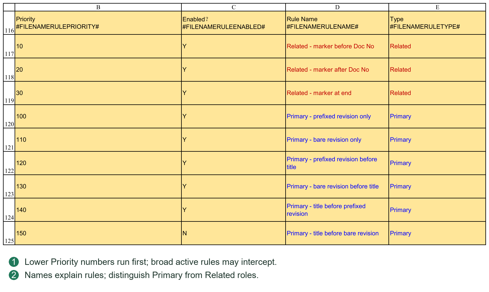
11.3 Rev0A and a Number at the End of the Title
For DOC-ITP-001 Rev0A Inspection and Test Plan Unit 52.pdf, the formal Doc No. is DOC-ITP-001, Revision is 0A and 52 belongs to the title.
[0-9]{1,4}|[A-Za-z]{1,2} alone cannot fully match 0A. The mixed-revision rule has an additional branch requiring both digits and letters. Avoid changing the Revision capture-group number when adding parentheses.
Taking the last numeric group as the revision misreads 52. Restrict the priority and applicability of prefix-free rules; do not enable a broad fallback just to pass one exceptional filename. Appendix expressions explain structure; use the project's complete rule in production.
Ordinary and full-width spaces differ: \x20 and \u3000 cover them respectively. Whether underscores, periods and hyphens are separators depends on the active character class.
11.4 Completing Each P054 Rule-Table Column
This table answers which VDR document the file belongs to, whether it is primary or related, and its revision. It does not validate PDF contents or award progress. Confirm formal VDR identifiers before configuring names.
| Field | Entry and interpretation |
|---|---|
| Priority | Lower numbers are checked first. Precise project formats should precede broad rules. This number is an ordering value, not a revision or document type. |
| Enabled | Y participates; N does not. Set N to retain a rule for later use without deleting the row. |
| Rule Name | A maintenance description, such as “Rev prefix with trailing title.” The name itself does not determine matching. |
| Type | Primary means the formal main file; Related means an attachment. Do not classify every No Match as Related just to pass it. |
| Regex Template | Enter the expression itself, without surrounding quotation marks or an Excel equals sign. |
| Revision Capture Group No. | The parenthesized group containing the revision. 1 means the first group, not the first number. 0 is for rules that do not extract a revision. |
| Example | An explanatory sample, not an input to matching. Editing it does not change program behavior. |
| Description | Explains naming applicability and limits; it does not participate in matching. |
Priority, Enabled, Type, expression and capture group jointly determine the result. Replacing Example with a client's filename does not change the rule.
Retain structural #...# markers in headings. Editable display descriptions and those markers are different things. Add rules between start/end Tokens, not after the end Token.
11.5 Building a Rule from Client Naming Requirements
This example uses fictional identifier DOC-ITP-001, revision 0A and title Inspection Plan Unit 52. The desired actual file is:
DOC-ITP-001 Rev0A Inspection Plan Unit 52.pdf
Step 1: divide the naming requirement into four parts
The formal identifier is DOC-ITP-001; the separator is a space; the revision consists of Rev plus 0A; everything after it is title text. 52 is equipment/area information, not a revision.
Step 2: identify placeholders
The program substitutes the current formal VDR identifier for {DOCNO}; one rule per file is unnecessary. {REVPREFIX} comes from Settings Revision prefix, for example Rev. {RELATEDMARKERS} comes from markers such as CRS and REPLY for attachments, not for guessing approval Codes.
Step 3: choose an expression with an explicit revision position
For numeric-only revisions, this teaching rule can be used:
^{DOCNO}[-_.\x20\u3000]+{REVPREFIX}([0-9]{1,4})[-_.\x20\u3000]+.+$
Capture group 1 extracts 1–4 digits such as 00, 01 or 123, but not 0A. For mixed revisions, use the full expression in 11.1 or add an explicit project-specific rule, for example:
^{DOCNO}[-_.\x20\u3000]+{REVPREFIX}([0-9][A-Za-z])[-_.\x20\u3000]+.+$
This teaching rule accepts exactly one digit followed by one letter. Group 1 captures 0A, not A1 or 00A. Select rules covering the revisions your project needs; limited examples are not universal rules.
Step 4: complete the table and scan a sample
Enter a unique readable Rule Name, Enabled=Y, Type=Primary, suitable Priority and group 1. Open the submission form, select the sample and Refresh. Confirm VDR Document No.=DOC-ITP-001, Submission Rev.=0A and File Role=primary, not merely a match.
Step 5: test negative cases
An identifier absent from the list should not match. Rev 0A should not match this rule. With 52 still at the title's end, Revision must remain 0A. Supporting spaces between Rev and revision requires an explicit rule change; the system does not automatically ignore all spaces.
This is a configuration exercise, not a requirement to rename client-approved files or rewrite existing registrations.
11.6 Practical Regex Symbols and Capture Groups
| Syntax | Meaning and boundary |
|---|---|
| ^ and $ | Restrict the start and end of the filename. Without them, a rule may match only part of a name. |
| [0-9] and [A-Za-z] | One digit and one English letter respectively, not arbitrary-language characters. |
| {1,4} | Repeat the preceding unit 1–4 times. This is regex repetition, not a PMS placeholder. |
| + and * | Repeat the preceding unit at least once or zero or more times respectively. Replacing + with * may permit an unintended empty segment. |
| . and .+ | Outside a character class, a period generally means any single character; .+ means at least one. It is not specifically the file-extension period. |
| [-_.\x20\u3000] | One hyphen, underscore, period, ordinary space or full-width space. Add + to allow consecutive separators. |
| (...) | Captures content. Groups are numbered by opening parentheses; nested groups also take a number. |
| Vertical bar between alternatives | Means “or,” such as numeric or alphabetic revision, not a requirement for both. |
| (?=...) | Checks following content without taking an ordinary capture-group number; useful for requiring both digits and letters. |
Compare {REVPREFIX}([0-9]{2}), whose only group is 00, with ({REVPREFIX}([0-9]{2})), whose group 1 is Rev00 and group 2 is 00. Strip revision prefix may display captured Rev00 as 00; when off, REV00 may remain. Capture groups and prefix cleanup must agree. A coincidentally correct displayed 00 does not prove the group number is correct.
Prefix cleanup does not rename the PDF. Store revisions as text so 00 does not become numeric 0. After changing revision formats, check that submission and receipt still associate with the same existing revision, not just that filename recognition works.
11.7 Primary-File and Attachment Recognition Order
A primary drawing PDF, editable source and CRS reply may share one transmittal but have different roles. Formal files need VDR identifier/revision matching. Related normally associates supporting/reply material with that document; an attachment must not earn independent design-document progress.
List permitted attachment markers before entering Related file markers. Do not use common title words as markers: a higher-priority attachment rule might intercept a primary file.
The preset table includes marker-before-identifier, marker-after-identifier and later-name formats. Inspect all active rules, not only the Primary row just edited. Enable loose “contains Doc No.” fallbacks only when genuinely required; they cannot replace formal revision recognition.
For Multiple Matches or Ambiguous, check duplicate formal identifiers, matches against several VDR documents and same-priority role/revision conflicts. Do not simply give all rules the same Priority.
Where the form offers attachment association, link a genuine attachment to the correct primary document and revision. Verify its business identity; do not attach an unknown file arbitrarily just to empty TempFolder.
11.8 Recognition Acceptance Samples
Prepare at least five categories using copies with real project identifiers in a test directory: numeric revision, alphabetic/mixed revision, title containing numbers, attachment and unrelated file. Record expected Doc No., revision and role.
| Sample | Expected result and checks |
|---|---|
| DOC-001 Rev00 Drawing.pdf | Primary; revision 00 or REV00 according to prefix cleanup, not title text. |
| DOC-ITP-001 Rev0A Inspection Plan Unit 52.pdf | Primary when the corresponding mixed-revision rule is active; revision 0A, not 52. |
| DOC-001_00.pdf | Passes only when this prefix-free format is enabled; not all projects must accept it. |
| CRS-DOC-001_00.xlsx | Attachment under a matching Related rule; check parent document and revision. |
| OTHER-999 Rev00 Drawing.pdf | No match if absent from the formal VDR list. Do not invent a list record merely to remove the warning. |
A test scan is not a formal submission. Test at least two different formal identifiers for every actual project naming format. Retain required rules and disable broad fallbacks inconsistent with the project convention.
Chapter 12 Submitting, Receiving and Archiving VDR Files
12.1 Submission, Receipt and Round Registration
Choose the tool matching the actual direction:
Vendor → Client: submit documents to the client.
Client → Vendor: receive client review returns.
Sub-Vendor → Vendor: receive subcontractor/subvendor documents.
Confirm parties, date and transmittal information first. Directions use different register fields. Receiving a subvendor file does not mean it has been submitted to the client.
Recommended workflow
1. Open the appropriate submission/receipt form; select files or place them in that workflow's TempFolder.
2. Check recognized VDR documents, Revision, current revision, attachment relationships and required Codes.
3. Resolve unmatched/ambiguous files; do not treat them as recognized primary documents.
4. Check paths and required pre-operation confirmations, then Submit / Receive.
5. Check the corresponding VDR Round, Transmittal Register, generated form and file links.
Refresh and recheck after temporary-directory contents change. A previously correct form does not validate files subsequently replaced.
Round registration
Revision and existing records determine the corresponding round; each attachment does not create a new round. On client return, verify the submitted revision and Review Code. “Reply received” does not mean “approved.”
Primary files and attachments follow recognized roles. Unmatched files may remain in TempFolder. Inspect leftovers rather than assuming they were archived.
For manual registration, use designated inputs; do not overwrite formulas or move Round columns. Entering a date or Code does not copy files, create a transmittal or establish a valid link. Check each separately.
On failure, read the stage and cause, inspect TempFolder, target files and Register results, then decide whether to retry. Do not blindly click Submit/Receive again. See Chapters 14–15 for Undo.
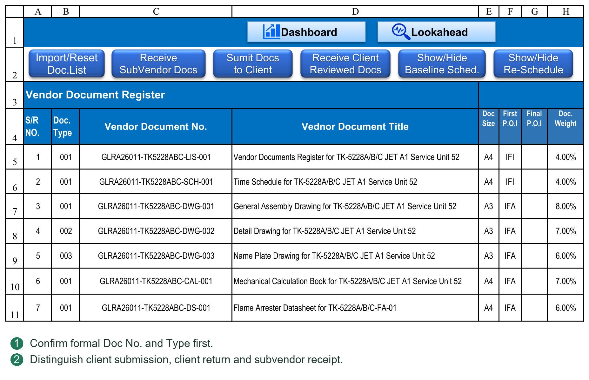
12.2 Archiving, Hyperlinks and Long Paths
Directories are created during file operations; Create Folders is not a prerequisite. The system recognizes files, plans target paths and checks length/collisions before archiving and registration. Hyperlinks record the actual final path.
Documents archiving priorities
1. Retain the “sequence–full Document Title” folder and original filename.
2. If too long, shorten the folder to “sequence–Doc No.” while retaining the original filename.
3. If still too long, shorten only the internal Documents copy to a name such as DocNo_Rev00 with its original extension. Distinguish attachments to prevent collisions.
For example, the original path might be:
Documents\Type\Sequence-FullTitle\CompanyAbbreviation\FullOriginalFilename.pdf
A shortened path might be:
Documents\Type\Sequence-DocNo\CompanyAbbreviation\FullOriginalFilename.pdf
In an extreme case:
Documents\Type\Sequence-DocNo\CompanyAbbreviation\DocNo_Rev00.pdf
Type and other directory levels depend on configuration. These are structural examples. Shortening an internal Documents copy does not authorize arbitrary changes to formal client-facing filenames.
Transmittal archiving
Retain formal filenames wherever possible; shorten the transmittal directory identifier if needed, rather than silently removing titles from formal filenames. If still over the limit, the operation warns and stops, requiring a shorter project root or other correction.
Current file operations enforce a 259-character full-file-path limit and applicable directory limits. The whole path counts, not just the filename. Windows long-path support alone does not remove PMS workflow limits.
Pre-operation confirmation
When simplification is needed, the system lists it before processing and asks Continue or Cancel. Cancel prevents this batch's archiving/registration and retains temporary files. This promise does not imply automatic trace-free rollback after any disk failure during execution.
Existing historical folders
If old revisions already occupy the full-title folder but a new revision requires a short folder, the system does not silently split history. It asks for path shortening or historical-archive handling first; it does not automatically migrate all old files and links.
Name collisions and links
Do not assume a target-name collision should overwrite an old file. Identify duplicate submission, another same-revision file or incorrect attachment recognition, then follow the business workflow.
Manually moving/renaming archived files may break links. Correct display text does not repair the actual target. Open links to verify them and retain appropriate backups.
Deciding on a path-simplification confirmation
Inspect the listed files and final targets, not merely whether a name became shorter:
Title folder changed to Doc No. folder: formal original filename remains; only internal classification changes.
Documents filename also shortened to DocNo_Revision: an extreme internal-archive simplification. Confirm project retention requirements; it does not authorize arbitrary renaming of external Transmittal copies.
Still too long, or historical folder cannot safely be reused: shorten the project root or handle history through the proper workflow before continuing.
Read the batch confirmation even if only one file needs shortening. Cancel prevents this not-yet-started batch from archiving/registering and keeps files in TempFolder. After correcting names/paths, refresh and preflight the entire batch again.
PDF page counting and filename recognition are separate
Successful Doc No./Revision recognition does not guarantee page-count reading. The reader uses the PDF's current effective page structure to avoid double-counting obsolete incremental-save objects. Encryption, unsupported indexing or damage can prevent reading.
If unreadable, the system does not guess: it leaves Pages blank and warns with file/cause before writing. Open the PDF to check. In VDR, cancel, enter the true Pages value in the form and confirm again, or explicitly continue blank. In GDR, a blank generated Pages value can be corrected on the transmittal, but that edit does not update Register records.
Blank Pages does not mean no pages; an incorrect count is not merely cosmetic. Check before external issue. Algorithm changes do not retroactively correct generated transmittals or history.
Lists, Round records, archived files and progress should correspond. Chapter 13 explains document progress; Chapters 14–15 cover GDR and Transmittal numbering, templates, Undo and archiving.
12.3 Submission-Window Operations
Select Files adds files to the staging/check list. Existing same-name TempFolder files may be skipped; successful selection does not prove an old file was replaced.
Paste Files opens TempFolder. Paste or drag files in Explorer, return to the form and Refresh if needed. Staging is not formal archiving.
The checklist separates current-batch information from registered information. Correct Pages from the PDF where needed. Distinguish primary/attachment roles and assign Parent VDR Document for attachments. Use Reset Attachment to undo incorrect association.
Submit executes the batch. Cancel or closing the form ends this session; it does not undo a completed transmittal. Relevant buttons are disabled during processing to prevent duplicate clicks. Resolve row-specific errors before retrying.
12.4 Two Incoming Directions
Receive Client Reviewed Docs handles client review returns. Enter the full incoming Transmittal No. or permitted reference, set the receipt date and verify each Doc No., Revision, Code and target Round. Register the revision actually returned, not an old reply under the latest revision.
Receive SubVendor Docs handles SubVendor → Vendor files. Select the correct SubVendor and check name, suffix and Incoming Rule. It is not a client review return; do not use subvendor Codes as final client outcomes.
For same-revision resend, overwrite or target-round confirmations, read whether existing records will be replaced and downstream reviews cleared. Filename recognition only identifies a candidate; business state must also allow writing.
12.5 When Long-Path Confirmation Occurs
The system recognizes all batch files, calculates final archive paths and checks names/lengths before creating directories, copying, generating transmittals and registering. It asks before required simplification. Cancel retains staged files without executing this batch's archiving/registration.
Documents prefers “type/sequence and full title/company/original filename,” then “type/sequence and Doc No./company/original filename.” Only if still too long is the internal filename reduced to Doc No. and Revision. Inspect the displayed final path.
If history is in a full-title folder but the new revision needs a short folder, do not silently split revisions. Follow the prompt to handle folders/links first. Transmittal archiving shortens the directory identifier before changing external filenames; if still too long, it stops.
The supported full-path limit is currently 259 characters. Path shortening must not alter the formal VDR Doc No. or agreed transmittal document identifier.
12.6 Unreadable PDF Page Counts
Read current effective PDF pages, not obsolete objects from incremental saves. Ordinary 1-, 2- and 3-page files should show 1, 2 and 3, not 2, 4 and 6.
Encrypted, specially compressed, cross-reference or hybrid structures unsupported by the reader may produce a blank count and manual-check warning. Blank is not zero; do not automatically enter 1. Being readable in a PDF viewer does not guarantee VBA page-count support.
Enter the true count before submitting in VDR forms that allow Pages editing. If GDR has no page-count input, check the generated transmittal; editing it does not change Register/source records.
12.7 Moving Directories and Correcting Links
Move PMS, VDR/GDR directories and Register-related material together. Retain and verify the original directory before adopting the new location. Do not move only the workbook.
Batch Update Hyperlinks replaces specified text in VDR hyperlink addresses. It does not move files or migrate Register, GDR and every external resource. Enter old/new path fragments, confirm and check links from different Rounds. A blank search exits; a blank replacement deletes matching text rather than canceling.
Manual Backup Workbook copies the current disk workbook to a chosen directory with a timestamp. Save first so recent edits are on disk. It does not package the entire project directory.
12.8 Submitting to the Client: Preparation through Completion
Submission records Vendor → Client issue, archives files and generates a transmittal. PMS does not deliver by email/client portal for you. Use the actual dispatch date.
Before starting
Confirm imported VDR list, P054 recognition, Vendor/Client names, VDR root, VDR_MAIN numbering rule and Transmittal Form. Actual operations and unfinished plans are separate; do not alter true submission dates to fill plan gaps.
1. Open the VDR Submit Documents entry, confirm Vendor → Client and set the actual submission date.
2. Select Files, or Paste Files to open TempFolder, paste/drag and return. This stages files; it does not submit them. If replacing a same-name file, verify the desired version is actually staged, then Refresh.
3. Check VDR Document No., Title, Submission Rev. and Pages. Current Rev./Current Code describe existing records, not newly obtained outcomes. VDR S/R locates the list document; it is not the transmittal's batch sequence.
4. Check File Role. Primary files must match formal VDR documents; attachments need the correct Parent VDR Document. Do not turn attachments into separate design documents or assume selecting an unknown file makes it valid.
5. Resolve unmatched/ambiguous items using identifiers, active-rule priorities, capture groups and actual names. If excluded under a prompt, they still need separate handling and are not submitted documents.
6. Click Submit and read necessary same-revision, page-count and long-path confirmations. Canceling path simplification prevents the batch from starting. For unreadable Pages, cancel and enter true values or explicitly accept blanks.
7. Wait for completion. Do not repeatedly click, change staged files or operate other sheets during generation. Check the opened transmittal, then export/send as in 15.6.
Four completion checks
VDR: correct revision, submission date, outgoing reference, link and Round.
Generated transmittal: sequence starts at 1; Doc No. is the formal identifier; Revision retains text such as 00/0A; Pages matches the PDF.
Transmittal Register: complete number, direction and file details.
Archive/staging: links open actual files; all TempFolder leftovers have an understood reason.
Whether submission earns actual progress immediately or needs a return is controlled by P052/P053. Submission does not mean Code2/Code1 or a recorded Dashboard actual curve point.
12.9 Receiving Client Reviews: Check Revision and Code Separately
1. Open Receive Client Reviewed Docs in VDR, confirm Client → Vendor and set the actual receipt date.
2. Stage the client transmittal and review files. Identify/designate the transmittal file as Transmittal, not a design primary file. Reviewed documents are corresponding primary files; supporting material follows attachment relationships.
3. Check the full incoming reference. Where a transmittal file exists, its filename may supply the reference; verify it against the client's actual number. If project rules allow a manual reference without a transmittal file, choose that option and enter the full reference. This does not authorize discarding required formal evidence.
4. Check each Received Rev. against its submitted revision. A latest revision of 01 does not justify recording a late 00 reply under 01.
5. Enter the client's actual Review Code according to project definitions. If approval is A, enter A, not 1 to obtain desired progress. The program does not inspect drawing contents to infer approval.
6. Read incoming-rule messages. Block requires correction; Warning leaves acceptance to the informed user; None means that format check is not used, not that it passed automatically. See 15.9.
7. Click Receive, confirm paths/other requirements and check return date, Code, incoming reference and link in the correct VDR Round.
8. Calculate and check actual document progress. To update this period's curve, continue with Chapter 16; successful Receive is not a curve record.
A review return should normally have an explicit Code. Verify missing results with the client rather than guessing. Blank/unknown registered Codes may be rejected by ordinary-Code progress preflight. Independent First Return rules remain as described in Chapter 13; receipt alone is not valid approval.
12.10 Receiving Subvendor Files Is Not a Client Review Return
1. Configure the SubVendor company name, suffix and Incoming Rule ID in Settings; confirm the ID exists in the incoming-rule table.
2. Open Receive SubVendor Docs, select the actual company and set receipt date. Similar company names do not justify sharing suffixes/rules.
3. Stage files and check formal VDR identifiers, Received Rev. and roles. The incoming reference belongs to that subvendor, not a later outgoing client issue.
4. Read format/path/target-registration prompts, then Receive. Check subvendor incoming fields and archive links.
5. To issue to the client, separately execute Vendor → Client. Subvendor receipt does not automatically submit to the client or produce a client Review Code.
One design-document revision may have subvendor receipt, Vendor issue and Client review-return facts. They can relate to the same revision but have distinct directions, dates, responsibilities and references.
12.11 Same-Revision Resend, Skipped Replies and Retry Principles
First decide whether a same-revision issue is genuinely a resend
Submitting changed content with the same Revision may overwrite registration. Clear Client Review on Same Revision controls old client review information: Y clears it; N/blank retains it. Retaining an old Code does not prove the client reviewed new content. Choose by contract/document-control rules, not just to preserve progress.
Revision 01 submitted without a revision 00 reply
Where this exception is actually permitted, register real events; do not invent a 00 reply. A subsequent valid 01 Code follows current progress rules. Every old revision need not have a fabricated reply for the project to proceed. See Chapter 13 for First Return and early/late Code boundaries.
An error found after generating a transmittal
Editing the generated transmittal does not correct Register/VDR. Use 15.4–15.5 to decide whether business Undo and resubmission are required. Printing-layout corrections may be made to the output, but retain the final externally issued version.
Do not retry blindly after an abnormal exit
Check VDR, Register, target directories and generated transmittals for partial completion and retain exact errors. Files remaining in TempFolder do not prove no registration occurred. Closing the form cannot undo completed operations. Determine actual results before supplementing or undoing the business transaction.
Chapter 13 Understanding Document Progress Rules
13.1 Current Code, Document Status and Calculation Rules
Current Revision, current Code and resubmission/review status come from Round records and project rules for filtering, Dashboard and progress. Maintain source records; do not overwrite summary fields with a desired result.
Code meanings are project-defined. Whether Code2 permits manufacture or Code1 means final approval cannot be inferred from numeric order. The same Code may have different meanings/percentages in different projects.
Distinguish three layers:
Document Type and percentage settings define the progress for each event/Code.
Progress by Planned Rounds controls intermediate planned allocation and whether actual processing uses Planner rounds.
Progress Calculation Rules define how a received Code affects earned progress.
Main rules
PROGRESS ON SUBMISSION: in planned-round mode, permitted submission events earn their allocated progress. Receiving this Code does not add its percentage again.
FOLLOW CODE PROGRESS: updates against the applicable planned/configured Code target; it does not add that percentage again.
HIGHER OF REVISION OR CODE PROGRESS: without rollback, retains the higher permitted process progress or Code target. With rollback enabled, applicable rollback rules still apply.
For example, permitted process progress is 70%; a valid Code has an applicable 80% target and no rollback applies. Code processing may reach 80%, not 70%+80%. A lower target without rollback normally retains the higher value. See 13.8–13.9 for the two return-rule boundaries.
Figures are illustrative, not substitutes for project configuration. Rollback parameters act together with calculation rules; enabling rollback does not make all Codes unconditionally reduce progress.
After editing records, calculate actual document progress and check dates, Codes and results. Current calculation and historical period reconstruction are separate. See Chapter 16 and Appendix C.
For documents under review, awaiting resubmission or with blank Code, inspect dates and business records rather than assuming zero or complete. Cross-check Dashboard filters against VDR source status.
How the two Settings progress tables work together
The percentage table, commonly P052, defines cumulative First Issue, First Return and Code targets by Document Type and selects Y/N round mode. The behavior table, commonly P053, defines Code handling, Requires Return and rollback. Parameter numbers may change; locate by table name/purpose.
First Issue 40%, First Return 50%, Code3 50%, Code2 80%, Code1 100% are cumulative targets, not repeated additions. Code2 normally reaches 80% under its rule, not an extra 80% on top of 50%.
When changing Code systems, check Planner outcome columns, Settings percentage-table headings and behavior-table rows together. Renaming Code3 to C without a C behavior rule does not create a fully valid progress Code. Leave unused Code definitions blank; do not invent milestones to fill the table.
Why First Issue and First Return remain separate
The contract may award 40% for first submission without any review Code. First Return can separately define 50% for initial review return. If Code3 is also 50%, first return with Code3 remains 50%, not 100%. If the first valid return is Code2, ordinary Code handling still applies; progress is not forced to stop at First Return's 50%.
First Return and ordinary-Code processing have independent paths. Missing/incomplete Code definitions produce warnings and no ordinary-Code contribution, but First Return and other complete events may still count. Such a warning is not successful review validation. Complete the true Code and its configuration, then recalculate; do not delete the return date to hide the warning.
Special correspondence
Revision 01 submitted without a 00 reply: retain the real history with a warning; do not fabricate a 00 return. With valid 01 submission/return, it can be the first actual return. Revision number alone does not define First Return.
Early Code2/Code1: valid actual results follow applicable behavior rules without waiting for all planned rounds. Reaching a submission round alone does not obtain its Code.
More rounds than planned without the target Code: resubmissions cannot increase progress indefinitely; return-gated targets remain constrained.
Late older-revision reply: if a higher revision has a valid, fully configured review result dated on or before the older reply, the older Code no longer drives progress. Preserve its history. A newer submission alone, no valid return, or an incomplete newer Code is insufficient to mask an older valid result.
Decreasing progress: rollback and Code behavior still govern. “Newer revision takes precedence” does not mean every new record overwrites the old percentage.
Date-based example
Revision 00 is submitted September 1; 01 on September 5; 01 validly returns Code2 on September 8; 00 returns Code3 late on September 10.
Historical calculation for September 6 cannot use September 8's Code2.
September 8 onward may use Code2 and events available at that date.
The September 10 late 00 Code3 must not overturn the effective newer valid outcome.
If 01's Code lacks complete configuration, resolve the warning; a higher revision number alone does not establish precedence.
See Appendix C for Y/N figures, First Return gates and rollback. Historical calculations require actual dates, not today's latest Code projected into every earlier period.
13.2 Selecting Planned-Round Progress by Document Type
Set Progress by Planned Rounds beside Document Type in P052. Y allocates intermediate progress using planned Planner milestones. N uses configured event/Code rules; another submission does not automatically earn a Planner fraction.
The switch affects both Planner Calculate Planned Progress and VDR actual calculation. It does not change dates, approval Codes, published plans or history automatically.
Recalculate planned increments, write the target timeline as needed, then calculate current actual progress. Decide historical reconstruction separately and use explicit historical refresh. Previously issued reports do not correct themselves.
All documents of one type share its setting. Correct mismatched Types/rules; do not change to another type merely to earn more progress.
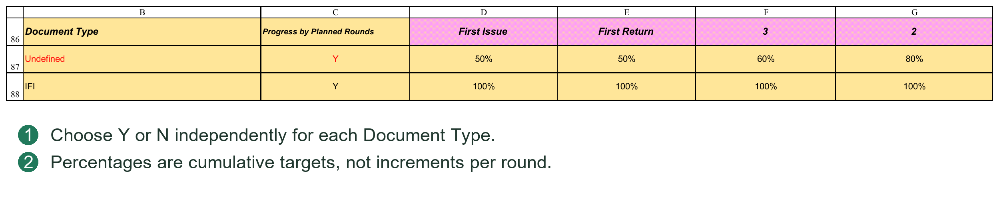
13.3 First Issue, First Return and Code
First Issue is the first-submission event; First Return is the first actual valid client return, not necessarily revision 00. Both are configurable progress milestones, not revision names or Code3 aliases.
First Return retains independent handling. If its continuation gate is N, later submissions in planned-round mode may earn its allocated progress. Y requires the return gate. This is a project-rule choice; the name alone does not guarantee every path waits for a reply.
Returns also follow ordinary Code behavior. First Return=50% and Code3=50% do not add to 100%. A first Code2/Code1 return follows its valid Code rule, not a compulsory First Return cap.
Blank, unknown or incompletely configured Codes warn; a percentage alone does not make an ordinary Code valid. The independent First Return path follows its existing rules. Register valid Codes fully rather than relying on unknown results for normal approval progress.
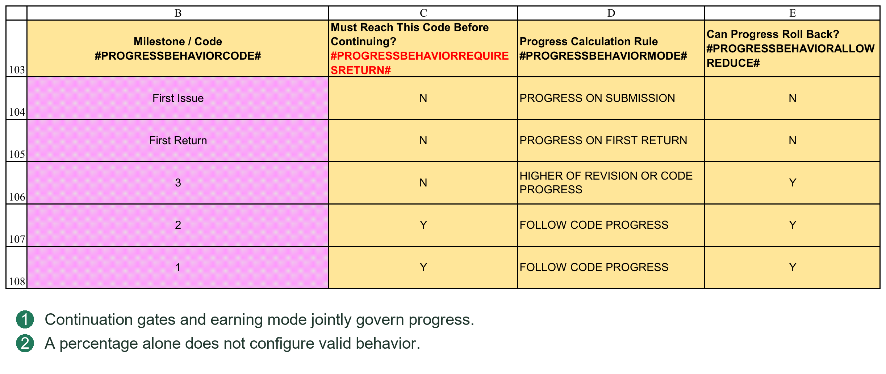
13.4 Manually Checking One Document
Illustrative settings: First Issue 40%, First Return 50%, Code3 50%, Code2 80%, Code1 100%. Planner expects Code3 in Round 1, Code2 in Round 4 and Code1 in Round 5.
Y distributes the 50%→80% increase across three rounds, 10% each. N gives no increments in Rounds 2/3 and assigns 30% at Code2. Planner cells are increments; cumulative progress at a date sums milestones due by then.
Submission alone without a required Code2 return cannot claim 80%. Early valid Code2 follows its behavior without waiting for Round 4. Extra rounds without Code2 cannot grow indefinitely.
Order actual submissions/returns by date, check revision precedence, behavior, gates and rollback, then verify the cumulative result at the cutoff. Appendix C gives detailed boundaries.
13.5 Configuring P052 and Cumulative Targets
P052 is Progress Percentage Based on Milestone / Review Code & TYPE. It defines the cumulative progress earned by a document type at an event/outcome, not an amount added every time a Code occurs.
Locate it by table name or #PROGRESSPERCENTAGEBASEDONCODESTART#. Each row is a Document Type; Progress by Planned Rounds follows Type, then First Issue, First Return and ordinary Code targets.
| Field | How to complete it |
|---|---|
| Document Type | Match the file's actual Type, such as Calculation or IFI. Type is not guessed from the title. |
| Undefined | Default type used where no specific configuration applies. Retain and verify it; it is not a blank placeholder. |
| Progress by Planned Rounds | Y or N, shared by all files of that type; affects planned allocation and actual calculation. |
| First Issue | Cumulative first-submission target, for example 40% by contract; not the literal revision string 00. |
| First Return | Cumulative first-return target under independent event rules; not another name for Code3. |
| 3, 2, 1 and other Code columns | Cumulative targets for actual project outcomes. Change names consistently across the Code system. |
Enter values such as 40%, 50%, 80% with the percent sign to avoid confusion between 0.4, 40 and 40%. Explicit 0% differs from blank; blank may indicate incomplete configuration.
List contractual document types/targets; fill Type and Y/N; enter targets; complete P053 behaviors; check Planner Code names/rounds; calculate and verify Plan Progress before publishing.
Teaching example: Drawing=Y; First Issue 40%, First Return 50%, Code3 50%, Code2 80%, Code1 100%. Code3 is Round 1, Code2 Round 4, Code1 Round 5. Increments are First Issue 40%, First Return 10%, Round 1 0%, Rounds 2–4 10% each, Round 5 20%, totaling 100%. Actual earning still requires true events and P053 gates.
With the same settings but N, Rounds 2/3 receive no increments and Code2 receives 30%. This changes allocation/earning, not date planning. Recalculate required results; existing published timelines/history are not automatically rewritten.
Add types inside start/end Tokens and complete Y/N and used targets. A Type written arbitrarily below the table is not necessarily read. Misspellings may fall back to Undefined; verify the intended row is actually used.
13.6 Custom Code Systems and Boundaries
3, 2, 1 are template examples. AFC commonly means approved for construction, FIN final, ASB as-built/final-state material, but client agreements prevail. PMS does not infer percentages, return requirements or rollback from names.
For a client using C, B, A instead of 3, 2, 1:
1. Define mappings: C=returned with comments, B=approved with comments, A=approved, with targets 50%, 80%, 100%.
2. Rename corresponding P052 headings C, B, A and enter targets by Type.
3. Rename P053 rows C, B, A and choose valid behavior, Y/N gates and rollback.
4. Rename ordinary Codes in Planner Plan Review Result and assign expected milestones. Special First Issue/First Return events share the area but cannot be deleted as ordinary Codes.
5. Calculate planned progress and check nonzero nodes/Sum. Use submission, first return and later return for one file to verify current/historical actual.
6. Check Dashboard approval-category titles, planned classifications and thresholds. Renaming Codes does not guarantee all display labels update. Verify ranges originally grouped by Code3/Code2/Code1, not just their titles.
In the current template, Planner outcomes are L6:S6: L/M are special events and N:S ordinary Codes. These are layout references, not permanent addresses. Use area headings, fields and structural settings rather than old column references.
Optional ordinary Codes may be blank, but clear associated unused planned inputs/behavior settings and check historical references. Deleting historically used Codes without assessment may remove historical-recalculation evidence.
P052 may retain Codes used only for actual exceptions, such as Reject, without scheduling them in Planner. Unplanned does not mean ignored on receipt: valid P052 targets and P053 behavior are required. Do not allocate normal rounds just to plan a rejection.
13.7 When First Issue or First Return Is Not Rewarded
These are program-recognized special events, not freely deletable ordinary Codes. Retaining an event, entering 0%, clearing its percentage, deleting its heading and deleting its P053 row are different actions.
If first submission earns nothing, retain First Issue and complete behavior with target 0%. If no separate first-return increment is needed, set First Return equal to the preceding target or another contract-appropriate value. Equal cumulative targets do not add twice. 0% does not disable all later event logic.
Do not simply delete the names or clear rules. N mode validates both configurations; missing percentages/behaviors prevent normal calculation. Planner event headings participate in identification, so changing only P052/P053 may cause mismatch. Normally retain the English event names.
First Issue should use PROGRESS ON SUBMISSION; First Return should use PROGRESS ON FIRST RETURN. Do not substitute FOLLOW CODE PROGRESS to remove First Return's special status.
Actual Code3/Code2/Code1 still processes separately on first return. Do not add event and Code targets. A First Return target above the approval outcome may produce a higher independent-event result; test before adopting. The heading alone does not imply Code-only earning.
“Leave unused Codes blank” applies to optional ordinary Codes, not these special events or internal structures.
13.8 The Four P053 Rules
P053 is Progress Milestone Calculation Rules. P052 defines targets; P053 defines earning/handling. One Code can have different percentages by Type, but its P053 behavior is shared, not separately defined per Type.
| Dropdown option | Current meaning and limitations |
|---|---|
| PROGRESS ON SUBMISSION | Y mode earns permitted submission-node progress; used by First Issue. For an ordinary Code, receipt does not add its target again. N mode does not reactivate round allocation through this option. |
| PROGRESS ON FIRST RETURN | For the special First Return event, not arbitrary ordinary Codes. The first actual reply need not be revision 00. |
| FOLLOW CODE PROGRESS | Handles the applicable Code milestone/configured target together with earned milestones and rollback; not addition to existing progress. |
| HIGHER OF REVISION OR CODE PROGRESS | Without rollback, retains the higher permitted process value or Code target. Applicable rollback may still reduce progress; it is not a never-decrease guarantee. |
The last two share much ordinary-Code logic in current Y mode and may yield identical results. Do not switch merely to obtain different figures. FOLLOW is not unconditional overwrite; HIGHER does not defeat rollback. Results also depend on planned Code nodes, achieved nodes and corresponding process progress.
Use defined dropdown rule names. Replacing FOLLOW CODE PROGRESS with an invented phrase such as FOLLOW CLIENT CODE is not supported. Project Codes and parameter choices are customizable; calculation keywords are not arbitrary.
13.9 Combining Return Gates and Rollback
Must Reach This Code Before Continuing controls process gates in Y mode. Y prevents submission alone crossing the corresponding outcome gate. N does not block applicable process earning at that gate; it does not imply an unreceived ordinary Code target has been achieved.
Can Progress Roll Back permits applicable lower return results to reduce earned progress. N normally retains the higher value; Y permits rule-based rollback, not a mandatory reduction for every reply.
Example 1: permitted Y-mode process progress is 70%; Code2 target is 80%, FOLLOW CODE PROGRESS, no rollback. The result may reach 80%, not 150%. An early valid reply need not wait for planned Round 4.
Example 2: 80% is earned; an unplanned Reject has P052 target 30% and FOLLOW CODE PROGRESS. Rollback=N retains 80%; Y can reduce it to 30%. This explicit unplanned-Code example does not mean every planned-node rollback simply equals one P052 cell.
Example 3: N mode, First Issue 40%, First Return/Code3 50%, Code2 80%, valid behaviors. First submission gives 40%; another without reply stays 40%; first valid Code3 gives 50%; valid Code2 gives 80%. Ordinary Requires Return=N does not make unreturned intermediate submissions grow.
Example 4: Y mode, First Issue 40%, First Return 50%, two submissions without replies. First Return gate=N may permit 50% via the submission path; Y retains the return gate. This is an allowed current rule, not a fabricated client-return record.
Test submission-only, normal first return, early approval, late older reply and Reject rollback before deciding historical application. Do not test only final 100%.
13.10 Configuration Checks and Change Impacts
1. Confirm actual Types select intended P052 rows, Undefined is valid and no duplicate Types/Code behaviors exist.
2. Match P052, P053 and Planner Code names; retain special events and valid Y/N/behavior entries.
3. Check target/milestone order. Normal cumulative targets must match sequence; do not force exceptional rollback Codes into normal growth.
4. Recalculate Plan Progress and verify a multi-round document and a submission-only completion document, not just whole-table Sum.
5. Where plans change, publish target dates and progress separately; switching Basis is not publication.
6. Read all Calculate Actual Progress warnings. Resolve missing/unknown Codes and behaviors. Progress from independent events does not validate an incomplete Code.
7. To correct history, rebuild relevant VDR periods, then Dashboard Data, then curves/reports. Retain issued reports and decide whether revisions apply retrospectively.
Changing Code percentages, Types, Y/N or rollback may change progress from the same real events. Historical configuration is not automatically migrated; clicking Save does not perform these business updates.
Chapter 14 Managing General Project Documents in GDR
14.1 GDR Types and Basic Registration
GDR handles technical queries, review comments, minutes, nonconformities and similar documents, such as TQ, CRS, MOM and NCR. Project agreements and Settings determine types/rules; abbreviations need not be identical across projects.
Before use, check GDR types, recognition, outgoing numbering and incoming rules. Types may determine processing and numbering groups, not just display.
Unlike VDR, GDR has no preset design-document list. New submissions create records; later correspondence on the same matter should continue the existing record, not create unrelated duplicates.
Basic information normally includes Document Type, General Document No., Title and Remarks. Use business identifiers/descriptions, not temporary file paths.
The GDR matter identifier may differ from the actual filename displayed on a transmittal. See 15.2.
14.2 Submission, Receipt, Replies and Status
Submitting a new document
1. Open the GDR submission form, select Document Type and the new-record option.
2. Select files or place them in this workflow's TempFolder.
3. Check primary/supporting roles, identifier, title and required information.
4. Check transmittal information, confirm and submit.
5. Check GDR, Register and archived files.
Supporting files accompany the main matter; sharing a temporary directory does not make all files independent primaries. Confirm relationships, especially with multiple matters in one batch.
Resubmitting an existing matter
Choose Existing and the correct GDR record. The system uses existing correspondence to arrange the Round; do not delete and recreate the original record.
Receiving replies
Open the GDR receipt form, select type and provide the incoming transmittal reference/files. Verify the original matter and Round before receiving.
For unmatched/ambiguous items, check type, recognition keywords and original outgoing records, then use the form's association options. Do not force a match to a similarly named unrelated matter.
Correspondence status
Track each Round's sent/received dates and links. Sent does not mean replied; replied does not necessarily mean closed. Resolution depends on contents and project agreements.
GDR is not an alternative source of VDR design progress. A technical-query reply does not prove a design document has Code1.
Directories are created as needed; Create GDR Folders is unnecessary before processing. Inspect TempFolder leftovers; closing the form does not archive unprocessed support/reply files.
14.3 GDR Forms and Prerequisites
GDR serves general files without a preset design list. Configure Type Code, Document Type, responsible party, directories and outgoing rules first. Select the correct type when sending and the existing document/matter when receiving.
Select Files, Paste Files and Refresh work broadly as in VDR, but GDR files need not exist in VDR. Check actual filename, title, type, date and references. Reply-required files need the correct Round and associated record.
Directories are created during processing. Create GDR Folders is not mandatory. The current source workbook retains an optional button to precreate configured directories; it neither submits files nor creates business records.
GDR Doc No. and Doc Name both use the actual filename without extension. Revision uses Round information, not a formal VDR-list identifier.
14.4 P056: Adding a General-Document Type
P056 is the GDR Document Type table, not a VDR list or Review Code table. Maintain valid types inside Start/End boundaries and retain headings/structural Tokens.
| Field | Entry and purpose |
|---|---|
| Type Code | Short, stable, unique identifier such as TQ or NCR, used for selection/recognition, not just display. |
| Document Type / Name | Readable name such as Technical Query, consistent with Type Code. |
| Default Responsible Party | Default such as Engineering or QC; still verify actual responsibility. |
| Folder Name | Archive subfolder for the type. Use a legal folder name, not an arbitrary absolute path. |
| Outgoing Rule ID | P058 key selecting outgoing numbering group/format. |
| Incoming Rule ID | P060 key selecting incoming-reference validation/display. |
| Track Response | Y tracks replies; other values follow configuration. It is not a Review Code. |
| Description | Explains applicability to prevent mixing similar types. |
For example, TQ uses TQ / CLIENT_TQ outgoing/incoming IDs; NCR uses NCR / CLIENT_NCR. GENERAL may share one outgoing rule across types, but sharing a key also shares its serial sequence; it does not create independent numbering per type.
Adding a type
1. Decide whether a new type is needed or merely a new matter of an existing type.
2. Add a valid-area row with unique Type Code, name, responsibility and folder.
3. Prepare P058/P060 rules and copy their exact IDs into P056. Explicitly reuse an existing ID if numbering should be shared.
4. Set Track Response and explain applicability in Description.
5. Test submission, numbering, archive and reply association. Appearing in a dropdown alone is insufficient.
Track Response=Y may warn if continuation lacks the preceding reply. It does not absolutely prohibit further issue or decide whether a matter is closed.
14.5 Sending GDR Files: New versus Existing
New creates a matter; Existing/Reissue continues one. Similar filenames do not prove one matter, and changed filenames do not necessarily require a new matter. Decide by actual business relationship.
1. Open GDR submission and select Type, date and New/Existing.
2. Select/Paste Files, Refresh and check roles. Main is primary; Supporting accompanies it. Do not arbitrarily create duplicate matters from both.
3. Select one Main and open Details to check General Document No., Title, responsibility and required fields. Details needs one explicit primary file; selecting several does not fill details for all.
4. For Existing, select the correct existing GDR record in Details and Save Details. Unsaved association is not effective. Check the matter/Round.
5. Return and check every other Main/supporting relationship. Confirm outgoing rule, reference and paths, then submit.
6. Check created/continued GDR records, Round, dates, references, attachment links and Register, then the generated transmittal.
GDR has no preset formal design list. Transmittal Doc No./Doc Name use filenames without extensions; Revision is textual Round information. VDR Rev00 regex extraction does not replace GDR matter association.
14.6 Receiving GDR Replies: Associate before Registering
1. Open GDR receipt; select type, date and incoming reference, then stage files.
2. Check roles: Response requires matter association; Supporting is supporting material; Transmittal is the incoming transmittal.
3. The program attempts type/filename matching and associates uniquely identified pending records. Automatic matches are candidates; verify Doc No. and Title.
4. For an unmapped Response, select it and choose the correct Existing GDR Record and pending Round. Do not choose the first result when names are vague or ambiguous.
5. If a real reply is classified Supporting, designate Response and associate it. Do not force Receive before all Responses have valid mappings.
6. Confirm incoming rules/paths, Receive, and check the correct matter/Round's receipt date, reference and link. Do not attach the reply to an unrelated new matter.
Without a suitable target, check type, previous reply and whether any outgoing record exists. Do not invent an outgoing record to enable the button. GDR reply association differs from VDR formal Doc No. matching.
Chapter 15 Transmittal Templates, Numbering and Undo
15.1 Transmittal Numbers and Register
Outgoing transmittals
Settings numbering groups, formats and starting serials generate outgoing numbers. Types may have separate or shared groups. Different worksheets do not necessarily mean independent serials.
Incoming transmittals
Use the sender's formal reference and incoming validation/handling rules. It is not a local outgoing serial; do not replace it with a locally generated number.
Full number, displayed reference and archive folder
These may differ. Full numbers identify business transactions; Register Reference may be abbreviated; path rules may shorten folders. A displayed 001 does not make all types' 001 the same transmittal.
For search/Undo, confirm full number, direction, date, source and file details, not just a short serial.
Transmittal Register
Register stores file-level details; one transmittal may occupy several rows. Fields include number, source, direction, status, document identifier, Revision/Round and archive/transmittal paths.
Register supports numbering, association and Undo, not just reading. Do not delete rows, alter statuses/serials to release numbers or sort only some columns.
Gaps need not be errors. Canceled-but-reserved numbers are not automatically reusable; released numbers may be reused. See 15.4.
15.2 Doc No., Doc Name, Revision and Item Sequence
VDR transmittals
Doc No.: formal Vendor Document No. from the VDR list.
Doc Name: actual filename without extension, possibly including identifier, revision and title.
Revision: recognized/registered revision text, preserving leading zeros.
Doc Title: VDR document title.
For DOC-001 Rev00 General Arrangement Drawing.pdf, Doc No.=DOC-001; Doc Name=DOC-001 Rev00 General Arrangement Drawing; Revision displays 00 or corresponding configured revision text.
GDR transmittals
Without a preset design list, both Doc No. and Doc Name use the actual outgoing filename without extension. Doc Title comes from current registration. Revision uses Round text, such as Round 00/01, not an inferred design-revision system.
Show Doc No., Doc Name or both as recipients require. Do not alter real file identity to fit a template.
Transmittal item sequence
Starts at 1 for this transmittal, independent of VDR sequence, imported IDs or PC Task IDs. Project document 150 is not automatically item 150 on this transmittal.
15.3 Adapting the Form with Tokens
Transmittal Form is a generation template, not each transaction's final transmittal. Adjust titles, logo, descriptions, widths and layout; the program fills cells using Tokens.
Common Tokens
#TRNO#: transmittal number.
#DATE#: transmittal date.
#SRNO#: item sequence within this transmittal.
#DOCNO#: document identifier; VDR/GDR source differences are in 15.2.
#DOCNAME#: actual filename without extension.
#REVISION#: VDR revision text or GDR Round information.
#DOCTITLE#: document title.
#SIZE#: applicable size information.
#CURRENTCODE#: applicable Code information.
#PAGES#: page count obtained by the workflow.
#DETAILEND#: structural end marker for details, not a recipient-facing business field.
Availability depends on workflow/source data. A Token does not automatically produce Size, Code or Pages for every file. See Appendix D.
Detail-template rules
Put all repeating detail Tokens on the same template row; it is expanded into file rows.
Unneeded business fields may be omitted, but keep an identifiable detail-template row.
Keep exactly one #DETAILEND#, at least two rows below the template row.
Preserve Token spelling and put Tokens in cells, not text boxes/images.
Avoid multirow merged detail cells that break row-wise filling. Test few-file and multi-file output in a copy after layout changes.
Position headers, signatures and footers appropriately and set print area, paper, orientation, scale and page breaks. Field recognition does not design the entire print layout.
Generation and PDF
A separate formal transmittal workbook is generated. Review/save it, then use Export PDF. If the template lacks that button, export through Excel.
PDF uses the generated transmittal's print settings. Do not export the template as if it were a completed transmittal. Check number, date, page counts, details, logo and signatures.
Editing generated display text does not update VDR/GDR/Register. Substantive file/number changes may require Undo and resubmission.
15.4 Undo, Releasing and Reserving Numbers
Undo Transmittal is business reversal, not Excel Ctrl+Z. It handles the selected transmittal and linked records; inspect every detail first.
Procedure
1. Open Undo Transmittal and search a full or sufficiently specific reference.
2. If several results appear, confirm direction, source, date and details.
3. For Outgoing, decide whether to release the number.
4. Read scope/warnings and give final confirmation.
Releasing a number
Select Release outgoing number for reuse: Register becomes RELEASED and later numbering may reuse it. The next operation is not guaranteed to use it; group and available-number logic still apply.
Reserving a canceled number
Without release, status is CANCELLED and the number cannot be reused. Reservation concerns the canceled number, not locking files or the project.
Normally preserve numbers formally issued externally where an audit trail is required. Consider release for internal test generations not issued, subject to project rules. Undo cannot invalidate copies already held by recipients; notify them separately.
Incoming does not use local outgoing-number release.
Dependency order
If Outgoing has an active Client → Vendor return, undo the associated Incoming first, then Outgoing, to prevent orphaned replies.
An already undone transmittal cannot be undone again as active. Do not bypass this by editing Register status.
15.5 Archives after Undo and Resubmission
Undo normally:
Moves that transmittal package to Undo Transmittals.
Clears corresponding VDR/GDR fields and links.
Handles related Documents copies using Register records.
Retains Register records with RELEASED or CANCELLED status.
Undo is not a complete pre-transaction project snapshot restore. Shared/unavailable copies may remain with warnings. “Undo complete” does not prove every physical file was deleted.
Verify Undo
1. Expected Round fields are cleared.
2. Register status/number handling match the choice.
3. The Undo package exists and copy handling is understood.
4. Recheck remaining active transmittals, links and progress.
Formulas may update, but current/historical actual and reports still need their own checks/refresh. Static outputs/history do not necessarily roll back automatically.
Amend and resubmit
Take copies from the retained Undo package, correct them and stage in the proper TempFolder. Do not treat Undo folders as new formal issue directories.
Reopen submission/receipt, verify recognition, revisions, parties, dates and numbering. Released numbers may be reused under rules; CANCELLED numbers require an available new number.
Resubmission is a new transaction, not editing old Register rows. Check old/new statuses, paths and final issue contents to avoid ambiguous packages circulating.
If Undo fails mid-operation, retain the error and inspect Register, original and Undo directories. Do not repeat blindly or delete remaining files. Restore from backup and seek support if necessary.
You should now distinguish GDR matters, transmittals, Register and physical archives, and reverse/resubmit by business state. The next chapter covers progress updates/history.
15.6 Exporting the Generated Transmittal PDF
After generation opens a separate workbook, use Export PDF from New Generated Transmittal Workbook. Confirm the active workbook is that transmittal, not PMS or another file.
Check print area, pages, repeated headings, list, counts and signatures. Test one detail and multiple details after template changes for truncation/blank pages.
Editing generated output does not write back to VDR/GDR/Register. Decide whether the error is only presentation or requires business Undo/resubmission.
15.7 P058: Outgoing Numbering Columns
P058 defines Outgoing Transmittal rules. The rule key connects workflows; the formal transmittal number is generated by that rule. They are not interchangeable.
| Field | Purpose and requirements |
|---|---|
| Transmittal Name / Rule ID | Unique key such as VDR_MAIN or TQ, referenced by VDR/P056. Changing its name requires corresponding references. |
| Full Format | Full-number format using fixed text and supported placeholders. |
| Validation Regex | Parses/validates numbers and captures serial/display parts. |
| Sequence Capture Group | Regex group containing the serial, not serial digit count. |
| Starting No. | Group starting serial, normally 1; not a reset on every submission. |
| Register Display | Display expression using {FULL} or captured {PART1} etc. |
| Folder Name Source | FULL_NUMBER uses the full number; REGISTER_DISPLAY uses Register display as directory identifier. |
| Description | Applicable workflow, shared numbering and client agreement. |
Supported format examples
{SEQ:000} produces a three-digit zero-padded serial; {SEQ} does not require that padding. Dates support {YYYYMMDD}, {MMDDYYYY}, {DDMMYYYY}, {DATE:yyyymmdd} and other supported forms. Use fixed company abbreviations; do not invent unsupported {CLIENT} placeholders.
Complete example
Full Format=T-ABC-XYZ-{SEQ:000}-{YYYYMMDD}, date October 11, 2026 and available serial 1 produce T-ABC-XYZ-001-20261011.
A corresponding Validation Regex is:
^T-ABC-XYZ-(\d{3})-(\d{8})$
Sequence Capture Group=1 captures 001; group 2 captures 20261011. Register Display={PART1}-{PART2} shows 001-20261011; {FULL} shows the complete reference. A shortened display does not change the formal number.
The group continues 002, 003. Changing date does not reset 001. Configure separate Rule IDs for separate groups; do not delete old Register rows.
15.8 How VDR and GDR Select Rules
| Workflow | Rule source |
|---|---|
| VDR Vendor → Client | Outgoing key VDR_MAIN. |
| VDR Client → Vendor | Incoming key CLIENT_MAIN. |
| VDR SubVendor → Vendor | SubVendor Incoming Rule ID and suffix configuration. |
| GDR outgoing | P056 selected type's Outgoing Rule ID → P058. |
| GDR incoming | P056 selected type's Incoming Rule ID → P060. |
If GDR IN uses VDR_MAIN, it shares VDR's serial group; originating on GDR does not make numbering separate. For independence, create a separate key and configure P056, not just the printed title.
Before changes, inspect existing Register, validation regex and display expression. Avoid renaming used keys casually or changing Full Format while leaving incompatible regex. Number, display and folder name are related but separate layers.
15.9 P060: Client and Subvendor Incoming Rules
The sender determines incoming numbers. P060 accepts, validates and displays them; it does not renumber client correspondence.
| Field | Purpose and requirements |
|---|---|
| Incoming Rule ID | Unique key matching CLIENT_MAIN, SubVendor or P056 references. |
| Expected Full Format | Explanatory expected format; this alone does not implement strict validation. |
| Validation Regex | Actual matching expression; its syntax determines required prefix/completeness. |
| Manual Entry Allowed | Allows workflow-supported manual references; does not disable format checking. |
| Validation Failure Action | Block rejects; Warning permits informed confirmation; None omits this validation. |
| Register Display | {FULL} or regex {PARTn} display expression. |
| Folder Name Source | Full reference or Register display for directory identifier. |
| Description | Applicable clients/workflows and manual-reference conditions. |
Strict versus permissive validation
^T-XYZ-ABC-(\d{3})-(\d{8})$ requires the complete prefix, serial and date. (\d{3})-(\d{8})$ constrains only the trailing serial/date. The latter may accommodate variable client prefixes; do not describe it as strict full-number validation.
For T-XYZ-ABC-025-20261011, groups 1/2 capture 025/20261011. Register Display={PART1}-{PART2}R shows 025-20261011R. R is a configured display suffix, not part of the client's formal number.
Where no fixed incoming format exists, use an appropriate NO_FIXED_RULE and full-reference display. Blank regex or None cannot supply nonexistent {PART1}. Accepting a failed match through Warning does not guarantee reliable capture-group display.
15.10 Testing Templates and Real Workflows
1. Prepare one primary and one attachment; check P054 or GDR type configuration.
2. Identify the Outgoing Rule ID and expected full/display numbers without manually reserving a serial.
3. Keep desired #DOCNO#, #DOCNAME#, #REVISION# etc. in Transmittal Form. Show one or both identifier/name fields without confusing their meanings.
4. Generate and check full reference, item sequence, revision text, title, Pages and attachments; inspect Register display and archive directories.
5. Test one compliant and one noncompliant incoming reference against Block/Warning/None, including corrective instructions.
6. Check PDF before external issue. Successful generation is not delivery or a substitute for business verification.
See the appendix for template Tokens. Settings structural Tokens locate program fields; template Tokens populate transmittals. Do not interchange them or print internal structural Tokens.
Chapter 16 Updating Current Actual Progress and History
16.1 Recommended Reporting-Cycle Workflow
1. Confirm PC Report Date and Rpt. Basis.
2. Update VDR submissions/returns and ordinary procurement/manufacturing Actual Start, Finish and period progress.
3. Calculate/check VDR actual as needed and verify ordinary PC tasks/summary rollups.
4. Record Actual Progress in Dashboard Data for this period's actual curve point.
5. If plans changed, refresh Baseline/Re-schedule curve data, then curve outputs, Dashboard charts and Progress Report.
6. Check/save reports and retain issued reports/workbook backups as required.
Normally Record captures this period. Refresh reconstructs history when needed; it need not overwrite all history every cycle.
If previous registration errors are found, correct sources and decide the historical recalculation scope. Correcting only today's percentage leaves incorrect old curve points.
16.2 Document and Ordinary-Task Actual Progress
Design documents
Maintain actual submission/return dates, Revision, Code and references in VDR, then calculate under project rules. Document progress may use submission process, review outcomes and custom rules, not merely planned dates.
A document first submitted September 22 cannot earn that submission progress in a September 18 report, even if it earns progress today. Returns likewise use actual return dates.
For prior periods, inspect historical VDR Actual Progress, not only its current display. See 16.6.
Ordinary procurement/manufacturing tasks
Enter cumulative completion at the relevant reporting date in PC's actual-input area; maintain actual dates separately.
If last period was 20% and this period 35%, enter 35%, not the 15% increment. Use approved procurement milestones, manufacturing quantities or other project measures; all tasks need not share one method.
Actual dates do not equal actual progress. Start/Finish alone cannot recreate each period's true completion.
Summary and project-summary tasks
Roll up children using weights, without duplicate manual input. Verify design, procurement and manufacturing sources before project total; do not simply average percentages.
Check percentage formatting: 20% differs from numeric 20. Blank is not automatically zero.
16.3 Report Date and Basis
Report Date is the reporting cutoff, not necessarily today's system date. For history, read that date's data, not today's latest state.
Recording needs a matching date in Dashboard Data's timeline. If absent, check input/calendar; do not substitute a nearby date to bypass the warning.
Rpt. Basis selects the comparison plan:
Baseline: compare with the baseline.
Re-schedule: compare with the revised plan.
Switching Basis neither copies plans nor rewrites actual history. Actual accomplishment remains the same; comparison dates, progress and deviations change.
Do not report against Re-schedule merely because the dropdown permits it. Confirm valid dates, Duration, Unit and published document plans.
Changing frequency does not rebuild every timeline. For date-pool, period or coverage changes, rebuild Report Period Calendar as in Chapter 4 and verify retained data.
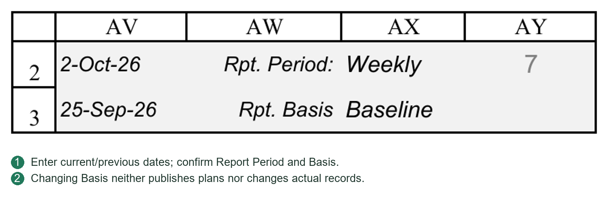
16.4 Dashboard Data Configuration and Sources
Dashboard Data organizes/stores curves; it is not an independent execution ledger.
Master Curves Data
Progress is organized by WBS, data type and reporting date. Baseline, Re-schedule and Actual are distinct curve types.
WBS identifies project/task scope, not worksheet row or Task ID. After WBS/scope changes, check configurations for obsolete references.
Progress sources
Ordinary actual: PC input for the corresponding date.
Design actual: VDR progress through PC document tasks and hierarchy.
Summary/project actual: PC hierarchy/weight rollup.
Planned curves: selected-plan task/document values at reporting dates.
Record/Refresh read PC actual results. First they recalculate PC, VDR and PC in dependency order to avoid stale formulas.
“Recalculate VDR” updates worksheet formulas; it does not register files, Submit/Receive or automatically reconstruct VDR historical percentages. Correct missing/incorrect historical sources first.
Curve Setup and output
Curve Setup defines names, WBS and output locations. Master Curves Data must be organized into output blocks for charts/data pictures.
Separate updating values, organizing outputs and refreshing charts/pictures. Correct sources do not automatically update static images. See Chapters 17–18.
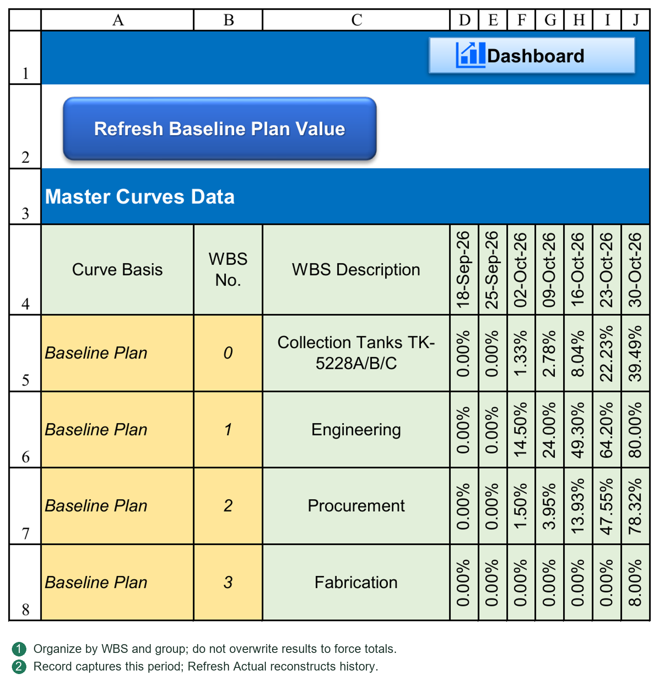
16.5 Record Actual Progress
Purpose
Writes PC actual at current Report Date into Dashboard Data Actual curve records.
Steps
1. Verify Report Date, sources and PC actual.
2. Configure required WBS/Actual records.
3. Click Record Actual Progress.
4. If a record exists, decide whether to overwrite.
5. Check results/warnings before updating charts/reports.
Scope
Only the current reporting point is handled, not missing previous periods or the entire curve.
At September 25, Record writes September 25; it does not correct September 18.
Exceptional results
Unmatched WBS/source errors may be skipped with warnings. Partial writing is not complete success. Error-source target cells may be cleared; blank does not mean true zero.
This records results, not a complete project snapshot of facts, weights and rules.
16.6 Refresh Actual Progress and Historical Reconstruction
Dashboard Data Refresh Actual Progress
Rebuilds Actual curves by reading PC at each historical reporting cutoff.
Confirmation covers valid timeline dates through current Report Date and overwrites existing Actual within that scope. Later dates are excluded and not automatically cleared.
It temporarily changes cutoff date, recalculates and records each result, then restores original Report Date. It does not copy today's value into every period.
Repeated refresh cannot invent missing historical input/VDR progress. Complete/correct sources first.
VDR historical actual reconstruction
A separate VDR tool recalculates historical document progress from dates, Codes, process earning and project rules.
It offers all periods through cutoff or a custom range, with overwrite or blanks-only choices. These belong to the VDR history tool, not Dashboard Data Refresh.
Recommended order
1. Correct VDR records or ordinary PC historical inputs.
2. Rebuild/check affected VDR periods.
3. Verify PC document and summary results at those dates.
4. Refresh Dashboard Data Actual history.
5. Refresh/check curves and reports.
When reconstruction is needed
Earlier submissions, returns or actual values were entered late.
Historical dates, Codes or associations were corrected.
Undo/resubmission requires historical verification.
Rules, weights or WBS scopes changed and retrospective application was approved.
Historical basis and issued reports
Reconstruction uses currently available records/settings; it may not reproduce all originally approved weights/rules. Confirm permission to revise issued periods. Explain measurement-basis changes and retain original reports.
Back up before bulk reconstruction. On failure, inspect what was actually written; do not assume automatic full rollback.
Choosing the button
“Verified current period; record its curve point”: Record Actual Progress.
“Corrected prior facts; repair history”: correct/rebuild sources, then Refresh Actual Progress.
“Changed layout/colors/legend only”: update outputs; no Actual reconstruction needed.
“Changed rules to N; inspect current result”: calculate document actual first; do not immediately overwrite history unless retrospective change is intended.
Why Record alone may be insufficient
A September 18 actual point exists. A true September 22 submission was incorrectly registered September 15, then corrected September 25.
1. Correct the actual VDR submission date.
2. Rebuild affected history: exclude it September 18, include it September 25.
3. Check PC rollups at both dates.
4. Refresh Dashboard Data through current Report Date.
5. Update charts/reports.
Recording only September 25 may fix the current point but leaves the old September 18 error.
Why Refresh is more than “read Actual”
Each cutoff has distinct facts: no premature document events, the ordinary task's recorded cumulative value and weighted WBS rollup. Refresh reads these date-specific results. VDR formula recalculation reads proper history; it does not submit files or fill missing historical calculation.
Why rebuilt values can differ from an old report
Identify the change:
Facts corrected: corrected dates, Codes or inputs change history.
Measurement basis changed: new percentages, Y/N, rollback, weights or scope can produce different values.
Output refreshed: data unchanged but images stale; do not repeatedly alter sources.
Refresh does not restore past configuration. Retain approved reports/versions and decide retrospective revisions under project rules.
16.7 Verifying Current, Historical and Summary Values
Check four layers:
1. Facts: true dates and actual inputs.
2. Individual results: document/leaf task at cutoff.
3. Rollups: correct weights for discipline, procurement, manufacturing and project.
4. Outputs: consistent cutoff/Basis in Dashboard Data, curves, Dashboard and Progress Report.
Key checks
Consistent dates: September 25 output must not use September 18 data.
No early earning: September 22 submission cannot appear September 18.
Repeated values: no new work may legitimately give equal periods; real changes with all-equal results require source/date checks.
Parents: check children, weights and hierarchy before overwriting formulas.
Visible errors: investigate #N/A, #VALUE! and unmatched WBS; do not replace all with zero.
Future remnants: Refresh does not clear future entries; verify anomalous leftovers before handling.
Fresh images: update outputs when data changed; do not alter source progress again.
Trace one clearly dated event across periods before/after it, through its WBS rollup and actual curve. This isolates sources, history, aggregation or output.
The routine is maintain sources → verify progress → record curve → update report. The next chapter covers Dashboard, Lookahead and reporting.
16.8 Boundaries of Refresh Commands
Refresh Baseline Plan Value computes Baseline at reporting dates. Refresh Re-schedule Plan Value computes revised-plan values. Neither rewrites actual.
Record Actual Progress writes current cutoff and asks before overwriting an existing point; it does not fill past periods with today's value.
Refresh Actual Progress Value reconstructs traceable historical values. Refresh Historical Actual Progress is VDR's history entry. Historical correspondence must be interpreted by cutoff, not copied from current Actual.
Refresh Dashboard Curve Data organizes master values using Curve Setup. Refresh Dashboard Curve updates charts/report pictures. Values, data blocks and rendering are different layers; identify the missing layer for stale charts.
Ordinary history requires period records. Do not fabricate past actual from today's completion.
16.9 Historical Window: Range and Overwrite
All periods selects existing actual timeline dates through Report Date. Custom range uses From/To; From cannot exceed To, and future dates are not historical actual.
Overwrite existing values rewrites existing entries; unchecked fills blanks only. Blanks-only cannot correct an existing wrong value.
Check file/period/target counts and final scope/From/To/overwrite confirmation. Cancel performs no refresh. Correct errors as prompted; closing the form does not repair history.
Afterward verify at least one cutoff before and after an event, ensuring later returns were not earned early.
16.10 Master Curves Data: Three Independent Groups
Master Curves Data stores points by group + WBS + date. Baseline Plan, Re-schedule Plan and Actual are independent records, not one row renamed repeatedly.
| Content | Entry/update |
|---|---|
| Group name | Retain recognized Baseline Plan, Re-schedule Plan and Actual spelling; do not translate or arbitrarily rename. |
| WBS No. | A real PC WBS, such as 0 for project or 1 for engineering, not Task ID/row. |
| Description | Corresponding task description. Preserve formulas; do not hide failed WBS lookup with manual text. |
| Date headings | Real Report Period Calendar dates, not isolated manually inserted text dates. |
| Baseline Plan values | Refresh Baseline Plan Value calculates/writes by date. |
| Re-schedule Plan values | Refresh Re-schedule Plan Value calculates/writes by date. |
| Actual values | Record this period; Refresh only when history needs reconstruction. |
For another curve scope, ensure matching WBS records in all required groups before Curve Setup. A new curve name does not create historical actual.
16.11 Record versus Refresh at Two Cutoffs
Suppose submission September 22 earns 40%; a valid September 26 reply earns 50%. The timeline contains September 18/25.
September 18 cannot earn September 22's submission. September 25 can earn submission but not September 26's reply. These are individual percentages; engineering/project rollups require weights.
Record at September 25 writes only that point, not the same value into September 18.
Refresh reads each historical PC cutoff; VDR history must supply correct document values first. It neither copies today's 50% into both nor reconstructs data from an old report picture.
Late-entered facts or changed P052/P053 may alter rebuilt history. Obtain retrospective approval, retain issued reports and then overwrite as appropriate.
Chapter 17 Dashboard and Lookahead
17.1 Dashboard Indicators and Rollups
Reading order
Confirm project name, Report Date and Rpt. Basis before project progress, document status, procurement/manufacturing and action items.
Project/category progress normally comes from PC rollups. Engineering indicators also use VDR plans, current Codes and status; curves use organized Dashboard Data. Read each metric by definition. File-count ratios are not weighted project progress.
Plan, Actual and Variance
Plan: progress due by cutoff under the selected plan.
Actual: progress earned by cutoff.
Variance: difference. Where displayed as Actual−Plan, negative means behind.
Plan 60%, Actual 45% gives −15 percentage points, not “15% of the plan completed.” Check measurement rules and weights.
Tasks requiring attention
Overdue to Start: leaf tasks whose planned Start is due and actual remains 0.
Overdue to Finish: leaf tasks whose planned Finish is due, with some actual but less than 100%.
Behind Plan: leaf tasks with actual below planned progress.
Categories overlap; do not add counts as unique problem tasks. An unstarted task beyond planned Finish must also be assessed through Overdue to Start/Behind Plan, not Overdue to Finish alone.
Document status
Awaiting first issue, Vendor resubmission and Client review identify next actions. Code meanings come from Settings/project rules, not numeric order.
17.2 Filters, Navigation and Configuration
Configured interactive buttons/indicators open PC/VDR details. Not every displayed number is clickable.
Procedure
1. Confirm date, Basis and WBS scope.
2. Click the relevant attention/status entry.
3. Verify filtered tasks/documents and source records.
4. Check/clear filters before other work; hidden results are not necessarily deleted records.
Queries do not change plans, execution records or status. Viewer query permission does not permit source editing.
Changing Dashboard layout
Some PC filter shapes use alternative text to specify action and the WBS-scope cell, for example:
PCATTN|OVERDUE_START|M4
M4 is illustrative: read the WBS from Dashboard M4, not PC row 4.
After moving scope inputs or copying categories, check button alternative text and count formulas. Changing a title does not change WBS scope.
For configuration messages, check:
Scope cell is populated, error-free and correctly referenced.
That WBS exists in PC.
Button action/alternative text retains valid syntax.
Count formulas and filters use matching scope/criteria.
PC/VDR layout changes also require structural Tokens. Button scopes and structural Tokens serve different purposes; updating one is not necessarily enough.
17.3 Lookahead Windows and Task Queries
Lookahead is an action list from PC tasks/VDR status, not another plan. Use it for meetings, coordination and responsibility tracking.
Conditions
Reference Date: query reference.
Period: next 7, 14, 21, 30 days or Custom end.
Task Group: work group/WBS scope.
Action Required: all or selected categories, including starts, finishes, overdue, behind, Vendor/Client actions and data issues.
Schedule Basis: follows PC Baseline/Re-schedule.
Custom End cannot precede Reference Date. Window days are date intervals, not task D/ED working durations.
Task Group Setup
Group names map to WBS roots, for example Procurement to its WBS. Maintain mappings after WBS changes; renaming a group alone does not change scope.
Reading results
Results may include priority, reasons, responsibility, WBS, description, dates, planned/actual, variance, due date and document status. One task may have multiple reasons.
Mainly leaf tasks are listed; summaries are not duplicated as execution tasks. Investigate Data Issue/document matching before treating it as a real overdue action.
Entering the sheet or changing conditions refreshes results. After source changes, refresh/check again; a previously captured list is not continuously live.
Double-click a result to navigate. Linked documents prefer VDR; ordinary tasks go to PC. If existing filters hide the source, inspect filters rather than assuming the target is missing.
Reference date and progress basis
Reference Date controls the window; changing it does not reconstruct historical actual. For formal reporting, align it with PC Report Date and update that cutoff's progress. A past query date does not rewind current Codes/all execution state.
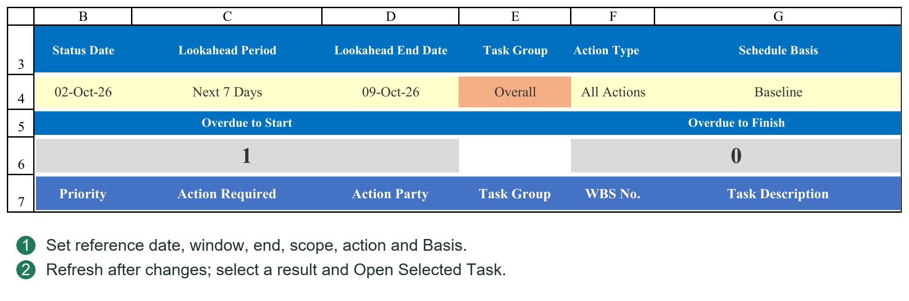
17.4 Dashboard Counts and Click Filters
Overdue to Start, Overdue to Finish and Behind Plan show their task categories. Engineering Due Not Issued, Awaiting Resubmit and Awaiting Review open matching VDR files.
Renaming sections does not change scope, which depends on WBS and button alternative text. Verify references after layout/cell moves.
For “The WBS scope cell is blank,” find the stated address and enter WBS or correct the alternative-text reference. Do not manually zero Dashboard totals. See Chapter 20.
Before comparing counts/lists, clear old filters and verify date, Basis, scope and source status. Check whether parents, blanks or hidden rows were incorrectly counted as documents.
17.5 Six Lookahead Conditions
Reference Date sets cutoff; Period the window; Custom End its custom endpoint; Task Group scope; Action Type the concern; Schedule Basis the plan.
Set conditions and click REFRESH LOOKAHEAD. Results are not a task master. Refresh after plan/correspondence changes.
Select a result and OPEN SELECTED TASK. Documents open VDR by Doc No.; ordinary tasks go to PC. Refresh after deletions/moves/imports; old physical row numbers do not establish identity.
For an empty list, widen dates/group/action, then narrow gradually. Empty can mean no matching tasks, not an error.
17.6 Double-Click Navigation and Viewer Queries
Double-click within valid result rows, not headings/blanks.
Viewer permits navigation, Dashboard attention queries, Lookahead refresh/navigation and certain display toggles, not business writes. It shows saved data; core writes require valid licensing.
Do not edit original tasks in result lists. Navigate to the responsible sheet and use its workflow.
17.7 Four Distinct Dashboard Configuration Types
Dashboard uses WBS, task descriptions, file categories and button scopes; it is not merely a poster whose titles can all be renamed freely.
| Configuration | Purpose and maintenance |
|---|---|
| Project/section rollups | Reads PC tasks, weights and planned/actual fields. Some rows match task descriptions, which must agree with PC. |
| Engineering categories | Aggregates PC file categories such as General, Drawing, Calculation. Text must match sources. |
| Attention-filter scope | Reads the WBS cell referenced in button alternative text, not just the section title. |
| Charts | Generated from Dashboard Data Curve Setup/output blocks; title moves do not alter source WBS. |
The sample uses project WBS 0, Engineering 1, Procurement 2, Fabrication 3, not a mandatory structure. Overview labels also match PC descriptions, while Engineering category rows use a separate category match.
Before renaming Engineering to another language/name, distinguish display-only changes from PC description changes. Text used in a match formula can cause blanks/errors if changed alone. Do not repair this by hand-entering rollup percentages.
17.8 Configuring Sections and Filters
Complete PC WBS/weights first. Validate one section, such as Procurement:
1. Find its PC parent, noting actual WBS, description and rollup, not row number.
2. Check Dashboard match names/formulas and correct weight, prior/current period, cumulative plan/actual fields.
3. Find the scope cell. Procurement is M49 in the sample; other layouts use their actual configuration.
4. Inspect shape alternative text. PCATTN|OVERDUE_START|M49 means overdue-start action with scope read from M49. M49 contains a WBS such as 2, not a title or Task ID.
5. After moving scope cells, check references. An unchanged title proves nothing. Preserve command text/separators; do not translate internal instructions.
6. Test one matching and one nonmatching task. Confirm correct leaf tasks within scope and normal return view.
Filtering is read-only. Fix stated cells/alternative text for empty scope, nonexistent WBS or invalid configuration; do not repeatedly click, hand-fill totals or alter licensing.
17.9 Engineering Counts and Approval Distribution
Distinguish Plan, Actual, Var, Issued and Code distribution. Counts are document quantities; design progress is weighted percentage.
Plan uses current-Basis timeline/cutoff. Planned issue is not actual delivery. Planned Code3/2/1 distribution uses configured progress thresholds, not actual client replies.
Actual uses VDR issue/current Code status. Issued without return may be Issued & Awaiting Review, not Code3. Code3 requires that actual result.
Var compares planned/actual under matching dates/definitions. A negative number is not automatically a formula error.
Due But Not Issued, Awaiting Resubmit and Awaiting Review identify actions/responsibility, a different dimension from approval distribution. Their counts need not sum to total files.
Additional checks when changing Code systems
Matching P052/P053/Planner definitions is necessary for progress, but does not automatically rename every Dashboard formula from Code1 to A. Current approval counts include explicit 3/2/1 and AFC/FIN/ASB values. Update formulas, titles and filters together and test. Also check planned Code3/2/1 thresholds/order. Changing only purple definitions does not fully adapt the Dashboard.
17.10 Diagnosing Incorrect Dashboard Numbers
Trace one file/task through the chain rather than guessing from totals.
1. Date/Basis: correct PC inputs and matching Dashboard display.
2. Facts: correct VDR dates/Codes or ordinary actual; no future event earned early.
3. Individual progress: rules/current/history, or ordinary D/ED and dates.
4. Rollup: WBS, weights, classification and parent ranges; correct counts do not prove correct weights.
5. Dashboard: matching names, scopes, formulas, Codes and residual filters.
6. Curves: current master point recorded, output blocks/images refreshed. A correct current Dashboard can coexist with stale curves.
For #N/A/#VALUE!, record address, formula and source range, then fix upstream. Blanket IFERROR-to-zero conceals missing settings/facts and makes reports unreliable.
17.11 Organizing Meeting Lists by Work Scope
Task Group maps readable names to WBS Root, for example Engineering→1, Procurement→2. Names support selection; roots define scope. Maintain after PC changes, not with Task IDs/row numbers.
Procurement meeting example
1. Use the status cutoff as Reference Date; check alignment with PC.
2. Choose a window such as 7 days or valid Custom End. This is not a 7D task duration.
3. Select Procurement and intended Baseline/Re-schedule.
4. Start with All Actions and REFRESH LOOKAHEAD; narrow to Overdue to Start/Finish, Behind Plan, Due to Start/Finish.
5. For design coordination, select Engineering and Vendor/Client actions. Data Issue identifies date/VDR-association problems, not completion.
6. OPEN SELECTED TASK or double-click. After editing sources, return and Refresh; old results do not continuously rebuild.
Overdue, behind and future-due conditions overlap. Use lists to assign actions, not overwrite sources. Broaden empty queries before concluding there are no relevant tasks.
Chapter 18 Curves and Periodic Progress Reports
18.1 Curve Configuration, Refresh and Data Pictures
Curve Setup
Configure curves in Dashboard Data:
Curve Name: displayed name.
WBS No.: source scope.
Output Start Cell: data-block origin in Dashboard Data.
Chart Cell: chart origin on Dashboard.
Chart Width / Height: object dimensions.
Progress Report picture target: report image range.
Legacy Biweekly Report labels refer to current Progress Report output, not a restriction to biweekly periods.
Output blocks must not overlap Curve Setup or one another. Refresh may clear old generated content; do not place permanent manual notes there.
Refresh order
1. Update source progress, changed planned curves and Actual as in Chapter 16.
2. Refresh Dashboard Curve Data organizes data blocks.
3. Refresh Dashboard Curve Charts creates/updates Dashboard charts, data pictures and configured report pictures.
4. Read results and inspect outputs.
Data refresh does not rebuild charts; chart refresh does not update source progress.
Cumulative and period values
Cumulative curves show completion to date; period columns show change. From 20% to 35%, the increment is 15 percentage points, not 35%. Compare consistent sampling periods.
Pictures and readability
Dashboard tables and combined report charts may be static pictures. Regenerate after source changes.
After resizing charts/targets, check fonts, dates, legends and tables. Small targets shrink the whole picture; repeated stretching adds no information.
Generation failure
Read the Curve Setup row/cause; inspect data, dates, targets and dimensions. Failed updates may retain old pictures. Visibility does not prove refresh.
Retry after correcting data/configuration. If persistent, retain messages and seek support. Do not issue missing/stale charts.
18.2 Progress Report with Custom Reporting Periods
Progress Report combines overview, indicators, curves and narrative for daily, weekly, biweekly, month-end or fixed-monthly reporting.
Periods and timelines
Settings/PC define periods. Rebuild Report Period Calendar for date-pool/structure changes and verify dates/history. Renaming Weekly/Monthly in a title does not change data basis.
The calendar provides dates; curves organize the selected periods. Missing dates cannot create genuine historical Actual.
Each reporting cycle
1. Confirm Report Date, period and Basis.
2. Update sources, progress and Dashboard Data.
3. Refresh curves/pictures.
4. Check linked project name, dates, progress and titles.
5. Add achievements, risks, coordination needs and next-period actions.
Narrative should explain indicators, including causes/actions for delay, not just show curves.
After Basis/date changes, check formula cells and static images separately. Editing report text does not revise PC/VDR.
18.3 Layout, Printing and PDF
Adapt titles, narrative, logo and pagination while preserving data formulas/image targets. Check Curve Setup after layout changes.
Test major layout revisions in a copy, including data links and refresh. Appearance alone does not validate formulas.
Before printing
Print area includes required content, not configuration/helpers.
Correct paper, orientation, margins and scale.
No truncated charts, tables or key text at breaks.
Fonts/images readable at actual page size.
Use Excel File → Export/Save As PDF for intended sheet/range. Preview first to avoid exporting the entire workbook.
Open the PDF and inspect pages, dates, charts, truncation and blanks. PDF is static; later PMS changes require re-export and version control.
18.4 Pre-Issue Checks
Confirm:
1. Project, report number, date and period.
2. Intended Baseline/Re-schedule.
3. Current document/ordinary actual records.
4. Consistent totals and sensible variance explanations.
5. Matching Dashboard, curve and report basis.
6. No #N/A, #VALUE!, unresolved configuration or abnormal blanks.
7. Refreshed complete charts, no old dates/data.
8. Defined risks, owners and next actions.
9. Appropriate logo/contact/external information.
10. Actually checked PDF/print and retained version.
For workbook sharing, check licensing/visible sheets. Viewer restricts editing/core features, not confidentiality. Remove inappropriate data in an independent release copy.
This chapter supports consistent, complete periodic reports. Chapter 19 references Settings; Chapter 20 covers checks/troubleshooting.
18.5 Incomplete Curves/Pictures: Diagnosis Order
Check Dashboard Data dates against PC, real Curve Setup WBS, valid nonoverlapping output/chart cells and positive dimensions.
Trace master data → output block → Dashboard chart → data picture → report picture. Fix upstream values first; if values are correct but images missing, refresh charts and inspect the warning row.
Success counts may coexist with Please check warnings: some outputs succeeded, others failed. Inspect all required charts/tables before issue.
Do not click repeatedly or switch files during generation. For repeat failures, retain row, target and error; check ranges, protection, overlap and chart settings.
18.6 Four Update Layers
| Layer | Action and verification |
|---|---|
| Business results | Correct VDR/ordinary/parent progress, date and Basis. |
| Master Curves Data | Record/rebuild Actual and refresh required plans; verify WBS/date intersections. |
| Curve output blocks | Refresh Dashboard Curve Data; check dates and cumulative/period values. |
| Charts/report images | Refresh Dashboard Curve; inspect Dashboard charts, tables and report pictures. |
One correct layer does not complete the next. Record does not reschedule; chart refresh cannot invent history; PDF export cannot repair stale pictures.
Normal sequence: update facts/progress → Record Actual → refresh changed plans → Curve Data → Curve → check report → export. Add historical reconstruction only when needed, not every cycle.
18.7 Curve Setup Fields
| Field | Entry and boundary |
|---|---|
| Curve Name | Readable title, not a substitute for WBS. |
| WBS No. | Real WBS present in Master Curves Data; 0 is project. |
| Output Start Cell | Dashboard Data block origin such as C60, not chart location. |
| Chart Cell | Dashboard origin such as Dashboard!O49, not data source. |
| Chart Width | Excel object points, not columns/pixels. |
| Chart Height | Positive points; verify on the page. |
| Biweekly Report Chart Range | Report picture target such as Progress Rpt!B236:M259; legacy wording does not restrict frequency. |
Sample origins C40/C50/C60/C70 are configured, not freely available blanks. Each block needs eight consecutive rows: title, dates, cumulative Baseline/Re-schedule/Actual, then period Baseline/Re-schedule/Actual.
Horizontal space must cover selected dates plus cleanup allowance. The program may clear old content farther right within these eight rows. Do not place notes/other tables there. Keep blocks, setup/master data and chart/image targets separate.
18.8 Adding or Adjusting a Curve
Test one curve in a copy before expanding. Daily refresh does not require a copy each time.
1. Select a PC parent WBS, such as procurement 2, and verify its rollup.
2. Find that WBS/dates in all required master groups. Supply missing plan/actual before drawing.
3. Add a valid Curve Setup row with title, WBS, free data/chart origins, dimensions and report range. Do not place unread configuration beyond an intervening blank terminator row.
4. Preserve structural headings such as Output start cell, Chart cell, Chart width/height and Biweekly report chart range.
5. Refresh Curve Data. Resolve the specific row's overlap/preflight errors before charts.
6. Check real dates, cumulative master matches, period differences and correct plan basis.
7. Refresh Curve and inspect all charts/tables/report images and overlap. Generated objects may be replaced next refresh; they are not permanent hand-drawn artwork.
8. Change a Report Date or plan, then retest the update sequence, not just first generation.
18.9 Basis, Date Range and Styles
Basis controls Re-schedule display
Baseline and Actual retain separate sources. Re-schedule output appears when selected and corresponding data exist. Baseline selection does not delete retained revised data, and switching does not update old pictures automatically. Refresh as in 18.6.
Curve dates
Settings Dashboard curve date start/end cell limit dates and must point to valid master headings. Correct reversed, text or out-of-axis references. After calendar extension, verify curve end also covers new dates.
Colors and text
Style parameters govern plan/actual/period colors, fonts, lines, markers, gaps, legend, date angle and axis limit. Redraw to apply; they do not change progress rules. Match percentage axis units: 100 instead of 100% can distort scale.
Report layout
After row-height, pagination or target changes, update Curve Setup report ranges. Moving an old image alone does not govern the next refresh. Regenerate and preview.
18.10 Pre-Issue Curve Acceptance Example
For Procurement, choose a recorded date:
1. Verify PC parent cumulative plan/actual.
2. Find matching master WBS/date and plan/actual sources; do not compare increments to cumulative values.
3. Match that date in the configured output block.
4. Match Dashboard chart/table dates, numbers, legend and Basis.
5. Check report image/title date and absence of stale images.
6. Preview/export PDF for complete graphics, text and no abnormal blanks.
A partial-picture warning prevents assuming overall success. Old images may be retained to avoid loss but are not refreshed. Correct target/environment issues, rerun and inspect each output.
Chapter 19 Settings Reference and Configuration
19.1 Finding and Editing Parameters
Pxxx numbers indicate reading order; names explain purpose; Tokens locate structures. Numbers may be reordered as projects add settings. Search English names/Tokens.
Normally edit input values and retain formulas. Structural settings locate sheets, cells, rows, columns and ranges. Check references after layout changes; do not rename Tokens to preference.
The reference below lists project settings, followed by structural areas. Ctrl+F searches names/Tokens; read the associated workflow chapter.
19.2 Required Actions after Changes
Workweek/holidays: verify D/ED and recalculate affected plans. Recheck/republish affected document plans through Planner. Decide historical recalculation separately.
Report range/period: rebuild Report Period Calendar and check PC/VDR/Dashboard dates and retained history, not just one displayed date.
P052 percentages/round switch or P053 behavior: recalculate Planner/current actual and rewrite target timelines as needed. Historical application requires a separate decision.
Recognition: rescan/check revisions and roles; history is unchanged. Numbering: check existing Register groups/serial continuity; a new format does not reset numbering.
Curve styles/dimensions: redraw. WBS styles: Apply WBS Color&Indent. Template layout: affects newly generated transmittals, not old outputs.
19.3 Structural Token Boundaries
PC Structure locates tasks, dates, units, relationships, progress, Gantt and report inputs. Planner Structure locates anchor, documents, dates, cycles and Task Mode. VDR Structure locates fields, revisions, timeline and status. GDR Structure locates fields/round widths.
Moving whole Settings rows normally retains Tokens and adjusts formulas. Deleting/duplicating Tokens, replacing reference formulas with text, or moving only headings rather than fields can still break location.
Tokens do not permit arbitrary structure changes. Repeated Round fields may use prescribed order/offsets. Merging headings must not merge two business-data columns. Test major changes in a copy and run Check System Consistency.
19.4 Backup, Sharing and Display Reference
See 3.2, 3.5, 3.6. Maintain inputs, rule tables and boundaries as described. Preserve Tokens exactly; P numbers are navigation aids.
| Parameter number and name | Token |
|---|---|
| P001 Automatic Backup Path Keyword | #AUTOBACKUPPATHKEYWORD# |
| P002 Workbook VDR-only sharing mode | #WORKBOOKVISIBILITYMODE# |
| P003 Workbook | #LOCKNAVIGATIONOBJECTS# |
| P004 Automatic backup retention | #AUTOBACKUPMAXFILES# |
| P005 Normal | #NORMALVISIBLESHEETS# |
Entry guidance
Automatic Backup Path Keyword
A path keyword, not a backup destination. If the workbook path contains it, opening/successful saving triggers configured project Backup copies. Blank disables this automatic backup. Copies use the last successfully saved disk file.
Workbook VDR-only sharing mode
Y enables VDR-only sharing; N uses normal visible-sheet configuration. This is not licensing/deactivation. Sharing applies on reopening.
Workbook
Y locks navigation/UI objects against movement; N assists shape layout editing. It does not grant Viewer business rights or unlock licensed functions.
Automatic backup retention
Integer ≥1 limiting matching automatic backups for this workbook. Older automatic copies are cleaned at the limit; it is not a total-file limit for Backup.
Normal
Valid normal-mode worksheet names separated by vertical bars. Retain necessary entries; not every hidden internal sheet should be exposed.
19.5 Report Calendar Reference
See 4.3–4.6. Maintain inputs/tables/boundaries as described; preserve Tokens, using P numbers only to navigate.
| Parameter number and name | Token |
|---|---|
| P006 Calendar project start date | #REPORTDATECALENDARSTARTDATE# |
| P007 Calendar project finish date | #REPORTDATECALENDARFINISHDATE# |
| P008 Report Calendar Coverage End | #REPORTDATECALENDARCOVERAGEENDDATE# |
| P009 Days before project start | #REPORTDATECALENDARSTARTBUFFERDAYS# |
| P010 Days after calendar coverage end | #REPORTDATECALENDARENDBUFFERDAYS# |
| P011 Daily report dates enabled | #REPORTDATECALENDARDAILYENABLED# |
| P012 Daily report interval days | #REPORTDATECALENDARDAILYINTERVALDAYS# |
| P013 Weekly report dates enabled | #REPORTDATECALENDARWEEKLYENABLED# |
| P014 Weekly report weekday | #REPORTDATECALENDARWEEKLYDAY# |
| P015 Biweekly report dates enabled | #REPORTDATECALENDARBIWEEKLYENABLED# |
| P016 Biweekly anchor date | #REPORTDATECALENDARBIWEEKLYANCHORDATE# |
| P017 Monthly fixed days enabled | #REPORTDATECALENDARMONTHLYDAYSENABLED# |
| P018 Monthly fixed days | #REPORTDATECALENDARMONTHLYDAYS# |
| P019 Month-end dates enabled | #REPORTDATECALENDARMONTHENDENABLED# |
| P020 Safety limit for generated dates | #REPORTDATECALENDARSAFETYDATECOUNT# |
Entry guidance
Calendar project start date
Project Start normally references PC project-summary Start. Retain formula/real date. Fix a missing anchor rather than entering date-like text.
Calendar project finish date
Project Finish normally references the PC summary result. Retain its formula; do not force-overwrite it just to create an initial calendar.
Report Calendar Coverage End
Manual minimum calendar coverage end for early planning. Run Rebuild after setting. This is neither contractual Finish nor plan approval.
Days before project start
Nonnegative integer padding before project start, extending calendar coverage without moving task Start.
Days after calendar coverage end
Nonnegative padding after coverage end. Do not expand timelines without reasonable limits.
Daily report dates enabled
Y enables daily/fixed-day intervals; N omits them. Can combine with weekly/monthly rules.
Daily report interval days
Positive day interval for daily-rule generation, not task duration.
Weekly report dates enabled
Y includes weekly dates; N omits them. Rebuild after changes.
Weekly report weekday
Reporting weekday such as Friday, not Vendor weekend definition.
Biweekly report dates enabled
Y enables biweekly dates, 14 days apart, not twice monthly.
Biweekly anchor date
Real anchor date, date-returning formula or valid date-cell reference, not a weekday word. Do not arbitrarily shift established history to include a convenient week.
Monthly fixed days enabled
Y enables fixed monthly dates; may combine with month-end, with duplicate dates removed.
Monthly fixed days
Day-of-month list such as 8,24, not complete dates. Check generated month boundaries.
Month-end dates enabled
Y includes month-end; N omits it. Calendar month-end differs from last working day.
Safety limit for generated dates
Reasonable positive safety cap on generated dates. Fix excessive coverage/frequency before raising it; do not enter a huge value merely to silence warnings.
19.6 Curve Style Reference
See 18.1, 18.5. Maintain settings/boundaries as described and preserve Tokens.
| Parameter number and name | Token |
|---|---|
| P021 Dashboard curve date start cell | #DASHBOARDCURVEDATESTARTCELL# |
| P022 Dashboard curve date end cell | #DASHBOARDCURVEDATEENDCELL# |
| P023 Dashboard curve plan color | #DASHBOARDCURVEPLANCOLOR# |
| P024 Dashboard curve reschedule color | #DASHBOARDCURVERESCHEDULECOLOR# |
| P025 Dashboard curve actual color | #DASHBOARDCURVEACTUALCOLOR# |
| P026 Dashboard curve period plan color | #DASHBOARDCURVEPERIODPLANCOLOR# |
| P027 Dashboard curve period reschedule color | #DASHBOARDCURVEPERIODRESCHEDULECOLOR# |
| P028 Dashboard curve period actual color | #DASHBOARDCURVEPERIODACTUALCOLOR# |
| P029 Dashboard curve title font size | #DASHBOARDCURVETITLEFONTSIZE# |
| P030 Dashboard curve axis font size | #DASHBOARDCURVEAXISFONTSIZE# |
| P031 Dashboard curve line width | #DASHBOARDCURVELINEWIDTH# |
| P032 Dashboard curve marker size | #DASHBOARDCURVEMARKERSIZE# |
| P033 Dashboard curve column gap width | #DASHBOARDCURVECOLUMNGAPWIDTH# |
| P034 Dashboard curve legend position | #DASHBOARDCURVELEGENDPOSITION# |
| P035 Dashboard curve date label angle | #DASHBOARDCURVEDATELABELANGLE# |
| P036 Dashboard curve cumulative axis maximum | #DASHBOARDCURVECUMULATIVEAXISMAX# |
| P037 Dashboard curve period axis maximum | #DASHBOARDCURVEPERIODAXISMAX# |
Entry guidance
Dashboard curve date start cell
Structural reference to first curve date, normally maintained by rebuild/reference formulas. Do not replace the address with a date.
Dashboard curve date end cell
Reference to actual last timeline cell, not a fixed copied example column.
Dashboard curve plan color
Cumulative Baseline color: six-digit hexadecimal RGB such as FF0000; redraw.
Dashboard curve reschedule color
Cumulative Re-schedule RGB text, distinguishable from Baseline/Actual.
Dashboard curve actual color
Cumulative Actual RGB text; color does not change values.
Dashboard curve period plan color
Period Baseline column RGB.
Dashboard curve period reschedule color
Period Re-schedule column RGB.
Dashboard curve period actual color
Period Actual column RGB.
Dashboard curve title font size
Positive title font size; inspect overlap/truncation after redraw.
Dashboard curve axis font size
Positive axis font size; keep dates readable.
Dashboard curve line width
Appropriate line width; display only.
Dashboard curve marker size
Appropriate marker size; display only.
Dashboard curve column gap width
Chart-supported percentage gap-width value; inspect density.
Dashboard curve legend position
Supported legend-position name such as Top, not a cell address.
Dashboard curve date label angle
Date-label angle such as 90; verify readability.
Dashboard curve cumulative axis maximum
Cumulative axis maximum as an Excel proportion: 1=100%, not 100.
Dashboard curve period axis maximum
Period axis maximum as a proportion: 0.5=50%. Axis scaling does not change data.
19.7 Design Documents and Parties Reference
See 9.1, 11.1, 12.4. Preserve Tokens and maintain inputs/tables/boundaries.
| Parameter number and name | Token |
|---|---|
| P038 Engineering Design Document Parent WBS | #PCDESIGNWBSROOT# |
| P039 Engineering Design WBS Task Name | #PCDESIGNWBSTASK# |
| P040 Document type delimiter symbol | #DOCTYPESEP# |
| P041 File types start with which delimiter? | #DOCTYPESTARTSEP# |
| P042 File types end with which delimiter? | #DOCTYPEENDSEP# |
| P043 Revision prefix | #REVPREFIX# |
| P044 Strip revision prefix | #STRIPREVPREFIX# |
| P045 Related file markers | #RELATEDFILEMARKERS# |
| P046 Vendor Name | #VENDORNAME# |
| P047 Client Name | #CLIENTNAME# |
| P048 Clear client review on same revision | #CLEARCLIENTREVIEWONSAMEREV# |
| P049 VDR storage root folder name | #VDRROOTFOLDER# |
| P050 VDR reminder period (days) | #VDRALERTDAYLIMIT# |
| P051 SubVendor Name & Suffix & TR rule table | #SUBVENDORCODETABLESTART# |
Entry guidance
Engineering Design Document Parent WBS
PC design-parent WBS such as 1, not Task ID/row. Import organizes documents within it.
Engineering Design WBS Task Name
Design-parent name; check PC description after changes. It does not change formal VDR identifiers.
Document type delimiter symbol
Delimiter for extracting type from Doc No., such as hyphen; not a complete revision regex.
File types start with which delimiter?
Positive starting delimiter index for type extraction, paired with the ending index; leave blank if extraction is unused as instructed.
File types end with which delimiter?
Ending delimiter index must exceed start. Insufficient delimiters prevent extraction; inspect actual identifier structure.
Revision prefix
Revision prefix such as Rev, consistent with filenames/active rules. Mixed revisions also need regex support.
Strip revision prefix
Y strips displayed revision prefix; N retains as configured. Historical archive names are not rewritten.
Related file markers
Genuine attachment markers such as CRS, REPLY, COMMENT. Broad common words can misclassify primary files.
Vendor Name
Project Vendor identifier for correspondence/directories. Avoid changing abbreviations after archiving.
Client Name
Client identifier consistent with numbering/directory agreements.
Clear client review on same revision
Whether same-revision resend clears old client review. Confirm whether retaining review is permitted; an old Code does not approve new content.
VDR storage root folder name
VDR root folder name, not a PDF path. Check archives/links after changes; history is not migrated automatically.
VDR reminder period (days)
VDR alert threshold days. Affects attention status, not automatic approval/resubmission.
SubVendor Name & Suffix & TR rule table
SubVendor names, TR suffixes and incoming rules must correspond. Adding only a company name may leave receipt unusable.
19.8 Document Progress and Recognition Reference
See Chapters 11 and 13. Preserve Tokens and maintain complete tables.
| Parameter number and name | Token |
|---|---|
| P052 Progress Percentage Based on Milestone | #PROGRESSPERCENTAGEBASEDONCODESTART# |
| P053 Progress Milestone Calculation Rules | #PROGRESSCODEBEHAVIORSTART# |
| P054 VDR Filename matching rule table | #FILENAMERULETABLESTART# |
Entry guidance
Progress Percentage Based on Milestone
Cumulative milestone targets by Type and Progress by Planned Rounds. Use 0–100% percentages, not incremental values. See Chapter 13.
Progress Milestone Calculation Rules
Milestone/Code continuation gates, behavior and rollback, matching P052/Planner. A percentage alone is not complete behavior.
VDR Filename matching rule table
Priority, Enabled, role, name, regex and Revision capture group. Lower priorities first; disabled rows ignored. Test representative files. See Chapter 11.
19.9 GDR and Transmittal Reference
See Chapters 14–15. Preserve Tokens and complete rule tables/boundaries.
| Parameter number and name | Token |
|---|---|
| P055 GDR root folder | #GDRROOTFOLDER# |
| P056 GDR Document Type Table Start | #GDRDOCTYPECONFIGSTART# |
| P057 GDR Document Type Table End | #GDRDOCTYPECONFIGEND# |
| P058 Outgoing Transmittal Rule Table Start | #TRANSMITTALSEQUENCEGROUPSTART# |
| P059 Outgoing Transmittal Rule Table End | #TRANSMITTALSEQUENCEGROUPEND# |
| P060 Incoming Transmittal Rule Table Start | #INCOMINGTRANSMITTALRULESTART# |
| P061 Incoming Transmittal Rule Table End | #INCOMINGTRANSMITTALRULEEND# |
Entry guidance
GDR root folder
GDR root folder name. Check history/Register after changes; this is not a directory migration.
GDR Document Type Table Start
GDR type-table start. Maintain type, name, responsibility, folder and TR rules before its end Token.
GDR Document Type Table End
GDR type-table end. Retain boundaries/column markers when adding rows.
Outgoing Transmittal Rule Table Start
Outgoing-rule start. Complete each Rule ID's format, regex and numbering consistently.
Outgoing Transmittal Rule Table End
Outgoing-rule end. Add inside boundaries; group changes may alter serial sharing/reuse.
Incoming Transmittal Rule Table Start
Incoming-rule start. Validates sender references, not local outgoing serials. Manual references follow allowed workflow.
Incoming Transmittal Rule Table End
Incoming-rule end, matching SubVendor/P056 Incoming Rule ID references.
19.10 Working Calendar Reference
See 4.5 and Chapter 6. Preserve Tokens and paired boundaries.
| Parameter number and name | Token |
|---|---|
| P062 Vendor workweek pattern | #VENDORWORKWEEKPATTERN# |
| P063 Client workweek pattern | #CLIENTWORKWEEKPATTERN# |
| P064 Vendor holidays start | #VENDORHOLIDAYSSTART# |
| P065 Vendor holidays end | #VENDORHOLIDAYSEND# |
| P066 Client holidays start | #CLIENTHOLIDAYSSTART# |
| P067 Client holidays end | #CLIENTHOLIDAYSEND# |
Entry guidance
Vendor workweek pattern
Vendor seven-character Monday–Sunday workweek: 0=working, 1=nonworking, e.g. 0000011. Preserve leading zeros; not all 1.
Client workweek pattern
Client seven-character workweek for review D cycles. Reflect the client's region rather than blindly copying Vendor.
Vendor holidays start
Vendor holiday start boundary. Enter real dates inside the range; insert within boundaries when expanding, not in notes.
Vendor holidays end
Vendor holiday end, paired with start. No holidays differs from weekly weekends.
Client holidays start
Client holiday start. Client nonworking dates affect D review cycles.
Client holidays end
Client holiday end, paired with start. Recheck affected dates/publication after edits.
19.11 PC Structure Reference
See 19.3, 20.3. Structural positions are not ordinary business inputs. Preserve Tokens; P numbers aid lookup.
| Parameter number and name | Token |
|---|---|
| P068 PC report date input | #PCREPORTDATECELL# |
| P069 PC previous report date | #PCPREVIOUSREPORTDATECELL# |
| P070 PC report period | #PCREPORTPERIODCELL# |
| P071 PC report basis | #PCREPORTBASISCELL# |
| P072 PC report interval days | #PCREPORTINTERVALDAYSCELL# |
| P073 PC progress month header | #PCPROGRESSMONTHHEADERROW# |
| P074 PC progress date header | #PCPROGRESSDATEHEADERROW# |
| P075 PC progress start-column helper | #PCPROGRESSSTARTNUMBERCELL# |
| P076 PC progress end-column helper | #PCPROGRESSENDNUMBERCELL# |
| P077 Project Controls first data row | #PCSTARTROW# |
| P078 Project Controls data end row | #PCENDROW# |
| P079 Project Controls data end row number | #PCENDROWNUMBER# |
| P080 Project Controls maximum WBS outline level | #PCMAXWBSLEVEL# |
| P081 Project Controls S | #PCSRNOCOL# |
| P082 Project Controls WBS number column | #PCWBSNOCOL# |
| P083 Project Controls task description column | #PCTASKDESCRIPTIONCOL# |
| P084 Project Controls VDR document number column | #PCVDRDOCNOCOL# |
| P085 Project Control Baseline Code2 Elapsed Days column | #PCBASELINECODE2DAYSCOL# |
| P086 Project Control Baseline Code1 Elapsed Days column | #PCBASELINECODE1DAYSCOL# |
| P087 Project Control Re-schedule Code2 Elapsed Days column | #PCRESCHEDULECODE2DAYSCOL# |
| P088 Project Control Re-schedule Code1 Elapsed Days column | #PCRESCHEDULECODE1DAYSCOL# |
| P089 Project Controls schedule issue column | #PCSCHEDULECHECKCOL# |
| P090 Project Controls Baseline predecessor column | #PCBASELINEPREDECESSORCOL# |
| P091 Project Controls Baseline duration unit column | #PCBASELINEDURATIONUNITCOL# |
| P092 Project Controls Re-schedule duration unit column | #PCRESCHEDULEDURATIONUNITCOL# |
| P093 Project Controls Re-schedule predecessor column | #PCRESCHEDULEPREDECESSORCOL# |
| P094 Project Controls Baseline task mode display cell | #PCBASELINETASKMODEDISPLAYCELL# |
| P095 Project Controls Re-schedule task mode display cell | #PCRESCHEDULETASKMODEDISPLAYCELL# |
| P096 Project Controls weight area start column | #PCWEIGHTSTARTCOL# |
| P097 Project Controls weight area end column | #PCWEIGHTENDCOL# |
| P098 Project Controls support area start column | #PCSUPPORTSTARTCOL# |
| P099 Project Controls support area end column | #PCSUPPORTENDCOL# |
| P100 Project Controls task level column | #PCTASKLEVELCOL# |
| P101 Project Controls SubTask Exist column | #PCSUBTASKEXISTCOL# |
| P102 Project Controls Design Doc. column | #PCDESIGNDOCCOL# |
| P103 Project Controls Responsible column | #PCRESPONSIBLECOL# |
| P104 Project Controls Assigned To column | #PCASSIGNEDTOCOL# |
| P105 Project Controls WBS Type column | #PCWBSTYPECOL# |
| P106 Project Controls Discipline column | #PCDISCIPLINECOL# |
| P107 Project Controls Category column | #PCCATEGORYCOL# |
| P108 Project Controls baseline plan start date column | #PCPLANSTARTCOL# |
| P109 Project Controls baseline plan finish date column | #PCPLANFINISHCOL# |
| P110 Project Controls baseline duration column | #PCPLANDURATIONCOL# |
| P111 Project Controls Re-schedule start column | #PCRESCHEDULESTARTCOL# |
| P112 Project Controls Re-schedule end column | #PCRESCHEDULEENDCOL# |
| P113 Project Controls Re-schedule finish date column | #PCRESCHEDULEFINISHCOL# |
| P114 Project Controls Re-schedule duration column | #PCRESCHEDULEDURATIONCOL# |
| P115 Project Controls Re-schedule columns visible? | #PCRESCHEDULEVISIBLE# |
| P116 Project Controls actual start date column | #PCACTUALSTARTCOL# |
| P117 Project Controls actual finish date column | #PCACTUALFINISHCOL# |
| P118 Project Controls actual duration column | #PCACTUALDURATIONCOL# |
| P119 Project Controls actual duration unit column | #PCACTUALDURATIONUNITCOL# |
| P120 Project Controls duration area start column | #PCDURATIONSTARTCOL# |
| P121 Project Controls duration area end column | #PCDURATIONENDCOL# |
| P122 Project Controls progress percentage start column | #PCPROGRESSPERCENTSTARTCOL# |
| P123 Project Controls progress percentage end column | #PCPROGRESSPERCENTENDCOL# |
| P124 Project Controls this period plan progress column | #PCPLANPROGRESSCOL# |
| P125 Project Controls this period actual progress column | #PCACTUALPROGRESSCOL# |
| P126 Project Controls progress data start column | #PCPROGRESSDATASTARTCOL# |
| P127 Project Controls progress data end column | #PCPROGRESSDATAENDCOL# |
| P128 Project Controls Gantt month header row | #PCGANTTMONTHHEADERROW# |
| P129 Project Controls Gantt date header row | #PCGANTTDATEHEADERROW# |
| P130 Project Controls Gantt date start column | #PCGANTTDATESTARTCOL# |
| P131 Project Controls Gantt date end column | #PCGANTTDATEENDCOL# |
| P132 Project Controls Gantt extra days after project finish | #PCGANTTEXTRADAYS# |
| P133 Project Controls Gantt status | #PCGANTTSTATUSDATECELL# |
| P134 Project Controls row selection Gantt scroll enabled | #PCGANTTSCROLLENABLED# |
| P135 Project Controls Gantt status display range | #PCGANTTSTATUSDISPLAYRANGE# |
19.12 Planner Structure Reference
See 19.3 and Chapter 10. Structural positions are not ordinary inputs. Preserve Tokens.
| Parameter number and name | Token |
|---|---|
| P136 VDR Planner Task S | #VDRPLANNERSRNOCOL# |
| P137 VDR Planner Document Type column | #VDRPLANNERDOCTYPECOL# |
| P138 VDR Planner Document No. column | #VDRPLANNERDOCNOCOL# |
| P139 VDR Planner Document Title column | #VDRPLANNERDOCTITLECOL# |
| P140 VDR Planner Start Date column | #VDRPLANNERSTARTDATECOL# |
| P141 VDR Planner Finish Date column | #VDRPLANNERFINISHDATECOL# |
| P142 VDR Planner Duration column | #VDRPLANNERDURATIONCOL# |
| P143 VDR Planner Duration Unit column | #VDRPLANNERDURATIONUNITCOL# |
| P144 VDR Planner Code2 Elapsed Days column | #VDRPLANNERCODE2DAYSCOL# |
| P145 VDR Planner Code1 Elapsed Days column | #VDRPLANNERCODE1DAYSCOL# |
| P146 VDR Planner Predecessor column | #VDRPLANNERPREDECESSORCOL# |
| P147 VDR Planner Task Mode display cell | #VDRPLANNERTASKMODEDISPLAYCELL# |
| P148 VDR Planner Vendor resubmit cycle cell | #VDRPLANNERVENDORRESUBMITCYCLECELL# |
| P149 VDR Planner Vendor resubmit unit cell | #VDRPLANNERVENDORRESUBMITUNITCELL# |
| P150 VDR Planner Client review cycle cell | #VDRPLANNERCLIENTREVIEWCYCLECELL# |
| P151 VDR Planner Client review unit cell | #VDRPLANNERCLIENTREVIEWUNITCELL# |
| P152 VDR Planner Project Start anchor row | #VDRPLANNERPROJECTSTARTROW# |
| P153 VDR Planner first data row | #VDRPLANNERSTARTROW# |
19.13 VDR Structure Reference
See 19.3 and Chapter 12. Structural positions are not ordinary inputs. Preserve Tokens.
| Parameter number and name | Token |
|---|---|
| P154 First data-entry row on the VDR Import worksheet | #VDRIMPORTSTARTROW# |
| P155 VDR data start row | #VDRSTARTROW# |
| P156 VDR data end row | #VDRENDROW# |
| P157 Doc No. Range | #DOCNORANGE# |
| P158 Doc Title Range | #DOCTITLERANGE# |
| P159 VDR data end row number | #VDRENDROWNUMBER# |
| P160 VDR edition header row | #VDRHEADERROW# |
| P161 SR No column | #SRNOCOL# |
| P162 Doc Type column | #DOCTYPECOL# |
| P163 Doc No column | #DOCNOCOL# |
| P164 Doc Title column | #DOCTITLECOL# |
| P165 VDR Size column number | #SIZECOL# |
| P166 Current revision column | #CURRENTREVCOL# |
| P167 Current code column | #CURRENTCODECOL# |
| P168 Client review status column | #CLIENTREVIEWSTATUSCOL# |
| P169 Vendor resubmit status column | #VENDORRESUBMITSTATUSCOL# |
| P170 VDR Document Weight column. | #DOCWEIGHTCOL# |
| P171 VDR First P.O.I column | #VDRFIRSTPOICOL# |
| P172 VDR Final P.O.I column | #VDRFINALPOICOL# |
| P173 VDR By Whom column | #VDRBYWHOMCOL# |
| P174 VDR Discipline column | #VDRDISCIPLINECOL# |
| P175 VDR Baseline planned first issue date column | #VDRBASELINEFIRSTISSUEDATECOL# |
| P176 VDR Baseline planned final issue date column | #VDRBASELINEFINALISSUEDATECOL# |
| P177 VDR Re-schedule planned first issue date column | #VDRRESCHEDULEFIRSTISSUEDATECOL# |
| P178 VDR Re-schedule planned final issue date column | #VDRRESCHEDULEFINALISSUEDATECOL# |
| P179 Vendor-to-Client TR No. Column Offset from Revision | #VENDORCLIENTTROFFSET# |
| P180 SubVendor-to-Vendor TR No. Column Offset from Revision | #SUBVENDORVENDORTROFFSET# |
| P181 Client-to-Vendor TR No. Column Offset from Revision | #CLIENTVENDORTROFFSET# |
| P182 VDR actual progress report date cell | #VDRACTUALPROGRESSREPORTDATECELL# |
| P183 VDR baseline schedule start date header cell | #VDRPLANPROGRESSSTARTCELL# |
| P184 VDR baseline schedule end date header cell | #VDRPLANPROGRESSENDCELL# |
| P185 VDR re-schedule start date header cell | #VDRREPLANPROGRESSSTARTCELL# |
| P186 VDR re-schedule end date header cell | #VDRREPLANPROGRESSENDCELL# |
| P187 VDR actual progress start date header cell | #VDRACTUALPROGRESSSTARTCELL# |
| P188 VDR actual progress end date header cell | #VDRACTUALPROGRESSENDCELL# |
| P189 VDR current Baseline plan progress column | #VDRCURRENTPLANPROGRESSCOL# |
| P190 VDR current Re-schedule plan progress column | #VDRCURRENTREPLANPROGRESSCOL# |
19.14 GDR and Progress-Reference Structure
See 19.3 and Chapter 14. Structural positions are not ordinary inputs. Preserve Tokens.
| Parameter number and name | Token |
|---|---|
| P191 GDR header row | #GDRHEADERROW# |
| P192 GDR first data row | #GDRSTARTROW# |
| P193 GDR maximum data row | #GDRMAXROW# |
| P194 GDR Document Type column | #GDRDOCTYPECOL# |
| P195 GDR Document No. column | #GDRDOCNOCOL# |
| P196 GDR title column | #GDRTITLECOL# |
| P197 GDR remarks column | #GDRREMARKSCOL# |
| P198 GDR first Round column | #GDRROUNDSTARTCOL# |
| P199 GDR Round count | #GDRROUNDCOUNT# |
| P200 GDR Round width | #GDRROUNDWIDTH# |
| P201 Progress rule Document Type list range | #PROGRESSDOCTYPELIST# |
| P202 Progress rule Code 3 percentage range | #PROGRESSCODE3RANGE# |
| P203 Progress rule Code 2 percentage range | #PROGRESSCODE2RANGE# |
| P204 Progress rule Code 1 percentage range | #PROGRESSCODE1RANGE# |
Chapter 20 System Checks and Troubleshooting
20.1 Check Document Lists
Purpose
Compares design-document lists/order in VDR, Planner and PC. Ordinary procurement/manufacturing tasks are not documents in that comparison.
When to use
After list import/update.
After changing identifiers, titles or hierarchy.
For Planner publishing-match warnings.
For inconsistent counts/associations among the three sheets.
Procedure
Click VDR Check Document Lists; read counts/differences. Verify records by identifier, decide the correct list, then follow Chapters 9 and 11–13 update procedures.
Do not independently add/delete on all three sheets merely to silence differences. Consider existing plans, Round records and transmittal history.
This checks lists, not every schedule/progress/archive detail. Use Check System Consistency for broader checks.
20.2 Check System Consistency and Its Report
Purpose
Checks configuration/cross-sheet associations to identify inconsistent tasks, files, schedules and formulas.
Main scope
Required sheets, Settings Tokens and structures.
PC tasks, IDs, both plans' predecessors and parent rollups.
VDR/Planner/PC document lists and publishing links.
Dates, Duration, D/ED, calendars and Planner cycles.
PC progress formulas, last-task boundary and selected managed-formula errors.
GDR types/records, Register and system formula templates.
Procedure
1. In Full, open PC and Check System Consistency.
2. Read scope/time notice, confirm and wait.
3. Open the generated independent Consistency Check report.
4. Resolve locations/Details, then check again.
Report fields
Severity: ERROR, WARNING, INFO.
Area / Sheet / Row: location.
ID / Document No.: affected task/document.
Basis: Baseline or Re-schedule.
Check / Details: rule and explanation.
Prioritize ERROR, interpret WARNING by project state, and use INFO for context. Row numbers are those at inspection; after changes, identify by task/document.
Planner changes not yet published may legitimately differ. Choose the intended target; do not overwrite Baseline merely to remove a warning.
The check does not modify business data. No findings means implemented rules found no relevant discrepancy, not verification of every business fact. Resolve incomplete-check causes and rerun.
Reading order
1. ERROR, then WARNING; INFO is not necessarily a fault.
2. Find Sheet/Row and confirm ID. After changes, identifiers are more reliable than old rows.
3. Check Basis so the other correct plan is not overwritten.
4. Read missing fields/Tokens/ranges and correct sources.
5. Recalculate related business results, then rerun checks. Reports do not republish or repair history.
Three examples
Structural Token missing: search the exact #…#. Restore missing items, resolve duplicates or repair #REF!. Do not create a same-name Token pointing to an arbitrary blank.
Progress by Planned Rounds invalid: choose Y/N for that Type and verify Undefined. This is not a percentage field.
Document-plan mismatch: determine whether revision/publication is pending; compare the selected plan and publish as in 10.7 rather than editing report numbers.
For “heading not found in row,” check heading, structure and location formula. Hidden/collapsed does not mean absent; permanently expanding everything is not a proper fix. For blank WBS scope, correct the button's referenced scope cell/alternative text, not Task IDs.
Fix sources such as Type/calendar first, then observe downstream errors. Do not independently zero every symptom.
20.3 Layout, Tokens and Formulas
Display versus structure
Titles, notes, colors and widths are mainly presentation. Field positions, boundaries and input/range addresses locate data.
Tokens reduce fixed-address dependence, not permit arbitrary moves/deletions. Test major changes in a copy.
Settings maintenance
P numbers aid reading; #…# Tokens identify program settings. Retain correct value association, uniqueness and formulas when reorganizing.
Keep formula-generated addresses so normal row/column edits adjust references. Deletion, paste-values or incorrect cuts can still break them.
Formula maintenance
Do not overwrite PC rollups, Planner calculations or generated-area formulas. Parents, documents and ordinary tasks use different logic; filling one formula down the whole column is unsafe.
Edit business inputs in their areas; update generated content through Import, Publish, calendar rebuild or curve refresh.
After changes
1. Check affected Tokens/results.
2. Verify Report Date, Basis, boundaries and columns.
3. Run checks.
4. Test affected operations in a copy before production.
Internal system sheets/templates are not daily inputs and should not replace normal workflows.
20.4 Common Configuration and Data Problems
Configuration error
Find the stated Token/parameter/address; check blank, duplicate, invalid reference or layout mismatch.
Restore the correct value/address formula, not an arbitrary address that merely suppresses the warning.
Date/progress errors
For #N/A, #VALUE! or abnormal blanks, check:
Real Excel dates, not text.
Report Date exists on the relevant axis.
Valid Start, Finish, Duration and D/ED.
Workweek/holiday configuration.
Document matches, historical actual and weights.
Missing/overwritten rollup formulas.
Fix causes; do not blanket-replace errors with zero. Blank is not necessarily 0%.
Import/publish messages
Check required fields, duplicate identifiers, group rows, WBS hierarchy and target. Use history-preserving updates for existing projects, not initialization for local repairs.
Inspect actual results/backups after incomplete operations before deciding next steps; repeated clicks do not guarantee recovery.
Recognition/archive messages
Check rules, identifier, revision, parties, root, collisions and length. See Chapters 9 and 11–13.
Do not manually move registered history to bypass path warnings; links and Undo may break.
Stale reports
Distinguish source values, output blocks and static images. Refresh outputs as in Chapters 17–18 rather than modifying correct source progress again.
Modes/features
Full-only writes are unavailable in Viewer by design. See Chapter 3 for licensing; changing protection/internal records is not activation.
20.5 Operating Environment and Recommendations
PMS uses Excel/VBA for scheduling, archiving, transmittals and reporting. A complete maintained Windows/Excel environment supports their cooperation.
Windows and Excel
Use the required Windows desktop Microsoft Excel, not browser/alternative spreadsheet software.
Use a legitimate complete Office installation with VBA/components, not stripped/modified distributions or unknown replacements.
Apply suitable Windows/Office updates under organizational policy; validate common features after upgrades.
Enable macros only for trusted PMS files as in Chapter 3. Do not globally disable macro security/other protection.
Add-ins and integrations
Excel/COM add-ins and Office integrations may affect operation. Keep necessary, trusted, compatible tools; avoid unnecessary plugins.
After add-in updates, compare by disabling nonessential items individually while retaining settings. Do not preemptively remove all add-ins or disable required security components.
Directories and permissions
Archiving/generation require read/create/write permissions; Undo/moves need corresponding rights.
Keep network/sync locations available and avoid concurrent moves/renames/locks. PMS does not inherently require administrator Excel.
Daily operation
Prefer Add Task Rows; use designated inputs.
Choose suitable reporting ranges/periods; refresh outputs after sources.
During Import, history or Gantt batches, watch status and wait; do not restart concurrently.
Environment is only one factor. Check messages, configuration, facts and operation before blaming the computer/Office.
20.6 Backups and Project Retention
Retain versions:
Before initialization/bulk list updates.
Before major WBS/layout/configuration changes.
Before history overwrite/major replanning.
At formal reports and key project stages.
Some bulk tools create workflow backups; read prompts. Automatic backups do not replace important retained versions. Routine Auto Group need not create a full copy every time.
Keep workbook and directories together
The workbook stores plans, records and links; Documents/Transmittal store actual files. Consider both for migration/archive/restore.
An old workbook may mismatch newer archives; restoring folders alone does not rebuild Register.
Preserve current state, select matching-time workbook/directories, then verify lists, relationships, Register, links, progress and consistency.
Undo versus restore
Ctrl+Z handles supported native edits; Undo Transmittal reverses business correspondence; backups restore retained versions. Import/Publish cannot be assumed Ctrl+Z-reversible.
Issued reports
Retain PDFs and necessary workbook versions. Later edits do not change issued reports. Distinguish dates/revisions without overwriting the only original.
These methods maintain configuration/data/output consistency. Appendices provide settings index, dependencies, progress rules, Tokens and checklists.
20.7 Diagnose Symptoms, Not Error Numbers Alone
No date change after Duration/Predecessor: check macros, Full, target plan, Task Mode, syntax, upstream dates, Unit and calendar; ensure you are not editing the other plan.
#N/A: missing dates/Unit or unmatched VDR Doc No. For parent errors, trace children upward rather than entering zero.
#VALUE!: text dates/percentages/weights, invalid dependencies/workweek. #REF!: deleted references, holiday ranges, Tokens/timeline.
Only double-click/Enter updates formulas: check automatic calculation and whether another workbook switched application mode. Save a copy before testing; mass double-clicking conceals the cause.
Report Date not found: check real date, coverage and generated period. Extend/rebuild rather than add an isolated column.
Function unavailable: distinguish Viewer/licensing, busy operation, validation failure and runtime error. Record full message/preceding action; do not edit VBA/delete licensing to experiment.
20.8 Safe Recovery after Failure
For rejected/canceled preflight, read whether writing has started. After interrupted file operations, inspect staging, archives, VDR/GDR and Register before retry/Undo.
For Excel repair/recovery, separately retain original/recovered files. Check macros, formulas, links and licensing. Opening successfully alone does not validate production archiving.
A native crash is not an ordinary configuration error. Record time, action, sheet and save status; use independent/system diagnostics. Repeated reopening is not a repair.
Chapter 21 Button and Interaction Index
21.1 Dashboard Commands
| Entry | Action/result | See |
|---|---|---|
| Overall — Overdue to Start count | Query attention tasks within the alternative-text WBS scope. | 17.4 |
| Overall — Overdue to Finish count | Query attention tasks within the alternative-text WBS scope. | 17.4 |
| Overall — Behind Plan count | Query attention tasks within the alternative-text WBS scope. | 17.4 |
| Engineering — Due but Not Issued count | Filter documents due but not submitted. | 17.4 |
| Engineering — Awaiting Resubmit count | Filter documents awaiting resubmission. | 17.4 |
| Engineering — Awaiting Review count | Filter documents awaiting client review. | 17.4 |
| Fabrication — Overdue to Start count | Query attention tasks within the alternative-text WBS scope. | 17.4 |
| Fabrication — Overdue to Finish count | Query attention tasks within the alternative-text WBS scope. | 17.4 |
| Fabrication — Behind Plan count | Query attention tasks within the alternative-text WBS scope. | 17.4 |
| Procurement — Overdue to Start count | Query attention tasks within the alternative-text WBS scope. | 17.4 |
| Procurement — Overdue to Finish count | Query attention tasks within the alternative-text WBS scope. | 17.4 |
| Procurement — Behind Plan count | Query attention tasks within the alternative-text WBS scope. | 17.4 |
21.2 Lookahead Commands
| Entry | Action/result | See |
|---|---|---|
| REFRESH LOOKAHEAD | Rebuild results after setting conditions. | 17.5 |
| OPEN SELECTED TASK | Navigate from a selected result to VDR/PC. | 17.5 |
21.3 Project Control Commands
| Entry | Action/result | See |
|---|---|---|
| Show/Hide Duration | Toggle dates/durations without deleting plans. | 6.1 |
| Show/Hide Progress | Toggle percentages; does not refresh curves. | 7.1 |
| Show/Hide Gantt | Toggle Gantt and associated view. | 8.2 |
| Create Gantt Header | Create daily date headings first. | 8.2 |
| Build Gantt Chart | Redraw bars using current Basis/data. | 8.2 |
| Show/Hide Weight | Toggle hierarchical weights. | 5.3 |
| Apply WBS Color&Indent | Apply level styles to WBS/descriptions. | 5.6 |
| Apply WBS Auto Group | Rebuild grouping/associated structures after bulk maintenance. | 5.6 |
| WBS Weight Calculate | Calculate total task weights by hierarchy. | 5.6 |
| Input WBS Progress | Enter/leave ordinary actual-input view. | 7.2 |
| Show/Hide Support | Toggle support fields. | 19.3 |
| Check System Consistency | Confirm and generate an independent report; not plan approval. | 20.2 |
| Insert WBS Task Rows | Select insertion point, enter 1–500; reserve IDs/update relationships. | 5.4 |
| Delete WBS Task Rows | Select contiguous tasks, review dependencies, then delete. | 5.5 |
21.4 VDR Commands
| Entry | Action/result | See |
|---|---|---|
| Receive SubVendor Docs | Register incoming files from the correct SubVendor. | 12.4 |
| Sumit Docs to Client | Select/check files and submit to client. | 12.3 |
| Receive Client Reviewed Docs | Register client return/Code against the correct revision. | 12.4 |
| Show/Hide Baseline Sched. | Toggle VDR Baseline; does not publish. | 7.3 |
| Show/Hide Re-Schedule | Toggle revised plan; does not copy Baseline. | 7.3 |
| Show/Hide Actual Progress | Toggle actual timeline. | 16.2 |
| Batch Update Hyperlinks | Replace specified path text in VDR links only. | 12.7 |
| Manual Backup Workbook | Save first; copy the disk workbook to a chosen folder. | 12.7 |
| Calculate Actual Progress | Calculate VDR actual at current cutoff under project rules. | 13.1 |
| Refresh Historical Actual Progress | Rebuild selected history from actual facts. | 16.6 |
| Import/Reset Doc.List | Open import sheet; does not itself import. | 9.1 |
| Check Document List Consistency | Compare VDR/Planner/PC document lists. | 20.1 |
| Undo Transmittals | Reverse selected transactions and decide number handling. | 15.4 |
| Owner Access | Licensed device enters a management session from VDR ONLY. | 3.6 |
21.5 VDR Import Commands
| Entry | Action/result | See |
|---|---|---|
| Validate Import List | Check/correct list, then separately Import. | 9.5 |
| Import / Update Document Lists | Confirm initialization/update mode and synchronize lists. | 9.5 |
21.6 GDR Commands
| Entry | Action/result | See |
|---|---|---|
| Create GDR Folders | Optional directory preparation, not a submission prerequisite. | 14.3 |
| Submit GDR Documents | Send general files; verify type/correspondence. | 14.3 |
| Receive GDR Documents | Receive files/replies; verify associated Round. | 14.3 |
| Undo Transmittals | Reverse selected transactions and decide number handling. | 15.4 |
21.7 Settings Commands
| Entry | Action/result | See |
|---|---|---|
| Rebuild Report Period Calendar for P roject C ontrol / VDR / Dashboard Data | Confirm coverage/periods and rebuild shared timelines. | 4.4 |
| Import/Reset Doc.List | Open import sheet; does not itself import. | 9.1 |
| Clear All Documents Records | New-project clearing only, after confirming CLEAR RECORDS. | 4.2 |
21.8 VDR Planner Commands
| Entry | Action/result | See |
|---|---|---|
| Calculate Planned Progress according to Planned Review Result | Generate increments; does not publish. | 10.9 |
| Write VPIS Planned Progress to VDR Baseline Schedul | Write VDR Baseline progress timeline. | 10.10 |
| Write VPIS Planned Progress to VDR Re-Schedul | Write VDR Re-schedule progress timeline. | 10.10 |
| Highlight Weekends | Color Saturday/Sunday; not calendar calculation. | 10.9 |
| Highlight Finish Dates | Mark dates of nonzero increments red. | 10.9 |
| Publish Baseline Plan Dates to VDR / Project Control | Publish current dates to both Baseline areas. | 10.10 |
| Publish Re-schedule Plan Dates to VDR / Project Control | Publish current dates to both revised-plan areas. | 10.10 |
21.9 Dashboard Data Commands
| Entry | Action/result | See |
|---|---|---|
| Refresh Baseline Plan Value | Calculate Baseline points by period. | 16.8 |
| Refresh Re-schedule Plan Value | Calculate revised-plan points by period. | 16.8 |
| Refresh Actual Progress Value | Rebuild history, not just today's point. | 16.8 |
| Record Actual Progress | Record current date only; confirm overwrite. | 16.5 |
| Refresh Dashboard Curve Data | Organize output blocks using Curve Setup. | 16.8 |
| Refresh Dashboard Curve | Update charts, data pictures and report pictures. | 18.5 |
21.10 Transmittal Register Commands
| Entry | Action/result | See |
|---|---|---|
| Undo Transmittals | Reverse selected transactions and decide number handling. | 15.4 |
21.11 Transmittal Form Commands
| Entry | Action/result | See |
|---|---|---|
| Export PDF from New Generated Transmittal Workbook | Activate generated transmittal, then export. | 15.6 |
21.12 About Commands
| Entry | Action/result | See |
|---|---|---|
| Activation | Device activation from About. | 3.3 |
21.13 Navigation and Other Interactions
Top navigation changes sheets. Show/Hide changes views; WBS +/- collapses tasks. Basis changes comparison/display, not document-plan publication.
PC selection updates Task Mode. With Gantt visible and positioning enabled, selection may navigate dates. Clicking is not list reimport.
Lookahead Open Selected Task navigates; filters restrict display without deleting. Hyperlinks open archives; inspect paths/migration if broken.
Editing differs from buttons: Duration, Unit, Predecessor and Start may schedule. Maintain ordinary cumulative actual in its input area. Do not overwrite system formulas/read-only anchors.
Select Files, Paste Files, Refresh, Submit/Receive and Cancel mean select, open staging, reread/check, execute and exit respectively. See Chapters 12/14 for roles, Pages and revision/Code checks.
Appendix A Settings Category Index
A.1 Project and Parties
Content: project name/number, Vendor/Client and identification.
Use: display, correspondence, transmittals and reports.
See Chapter 4, Chapters 14–15 and 17–18.
Company abbreviations, numbering groups and formal names differ; maintain each appropriately.
A.2 Project Dates and Calendar Coverage
Content: project Start/Finish, calendar coverage end and padding.
Common Tokens:
#REPORTDATECALENDARSTARTDATE#
#REPORTDATECALENDARFINISHDATE#
#REPORTDATECALENDARCOVERAGEENDDATE#
Use: create sufficient dates before detailed planning, rebuilding later as needed.
See 4.3–4.4.
Coverage end is neither contractual completion nor a replacement for PC planned Finish.
A.3 Reporting Dates and Periods
Content: daily interval, weekly day, biweekly anchor, fixed monthly dates, month-end and safety cap.
Common Tokens:
#REPORTDATECALENDARBIWEEKLYANCHORDATE#
#REPORTDATECALENDARSAFETYDATECOUNT#
#PCREPORTDATECELL#
#PCPREVIOUSREPORTDATECELL#
#PCREPORTBASISCELL#
#PCREPORTPERIODCELL#
Use: generate dates and locate current/previous reporting cutoff and Basis.
See 4.4, Chapter 16 and 18.2.
Report Date, date pool and reporting frequency are related but distinct.
A.4 Workweek and Holidays
Common Tokens:
#VENDORWORKWEEKPATTERN#
#CLIENTWORKWEEKPATTERN#
#VENDORHOLIDAYSSTART#／#VENDORHOLIDAYSEND#
#CLIENTHOLIDAYSSTART#／#CLIENTHOLIDAYSEND#
Use: D scheduling, review/resubmission cycles and related progress.
See 4.5, 10.3 and Appendix B.
Workweek is seven Monday–Sunday 0/1 characters: 0=working, 1=nonworking. 0000011 is Saturday/Sunday off; 0000001 Sunday only. Preserve zeros; holidays are real dates, not notes.
A.5 Import and Engineering Tasks
Content: design-parent WBS/name, import fields and list structures.
Use: PC design area and imported hierarchy.
See 9.1–9.4.
Before changing identity, parent WBS or import mode, consider existing plans/history.
A.6 Types and Filename Recognition
Content: Type extraction delimiters/positions, recognition rules, Revision and Sub Vendor codes.
Use: recognize document/revision/parties from filenames and associate with VDR.
See 11.1–12.1.
Document Type is not extension. Test representative files after changes.
A.7 Progress Targets and Behaviors
Content: cumulative First Issue/First Return/Code by Type; Progress by Planned Rounds Y/N controls both planned intermediate allocation and actual earning; Requires Return, behavior and rollback.
Common Tokens:
#PROGRESSPERCENTAGEBASEDONCODESTART#
#PROGRESSPERCENTAGEBASEDONCODEEND#
#PROGRESSCODEBEHAVIORSTART#
#PROGRESSCODEBEHAVIOREND#
Use: targets, earning conditions and returned-Code handling.
See 10.4–10.6, 13.1 and Appendix C.
Keep event/Code definitions consistent in Planner, percentage and behavior tables.
A.8 Archives and Transmittals
Content: roots, types, numbering groups/formats/starting serials and template guidance.
Common Token: #VDRROOTFOLDER#.
Use: send/receive, archive, number and generate.
See 12.2, Chapters 14–15 and Appendix D.
Settings structural Tokens and Transmittal Form replacement Tokens are not interchangeable.
A.9 Dashboard and Curves
Content: date range, output positions and styles.
Common Tokens:
#DASHBOARDCURVEDATESTARTCELL#
#DASHBOARDCURVEDATEENDCELL#
Use: curve timeline/display; configure WBS/output in Dashboard Data Curve Setup as well.
See 16.4, 18.1.
Color/dimension changes do not recalculate history.
A.10 Gantt
Content: dates, start/end columns, extension and generation-status display.
Common Tokens:
#PCGANTTDATESTARTCOL#
#PCGANTTDATEENDCOL#
#PCGANTTEXTRADAYS#
Use: generation range and status.
See 8.1.
Gantt is static. Check redraw needs after Basis/date/plan changes.
A.11 Workbook Structure
Content: columns, boundaries and input addresses for PC/VDR/Planner.
Example Tokens:
#PCSTARTROW#／#PCENDROW#
#PCWBSNOCOL#／#PCTASKDESCRIPTIONCOL#
#VDRENDROWNUMBER#
Use: program locations, not business inputs.
See 20.3.
Keep formulas, exact Token spelling and unique definitions when reorganizing.
Appendix B Predecessor Syntax and Examples
B.1 Input Format
Task ID + relationship + optional signed lag and unit.
Examples: 10FS, 10SS+5D, 10SS-2ED.
Reference Task ID, not WBS or Excel row. Case is accepted; uppercase is recommended. Separate multiple predecessors with commas.
Without lag, use 10FS. Omitted lag unit defaults to D; explicit D/ED is recommended. Lags are integers, not decimals, hours or weeks.
B.2 Four Relationships
FS: Finish to Start; successor starts after predecessor finishes.
SS: Start to Start; predecessor Start constrains successor Start.
FF: Finish to Finish; predecessor Finish constrains successor Finish.
SF: Start to Finish; predecessor Start constrains successor Finish.
PC supports FS/SS/FF/SF; Planner only FS/SS. FF/SF require successor Duration to derive Start.
PMS is day-based with inclusive task duration. Zero-lag FS starts on the next applicable day after Finish, not Finish day. Zero-lag SS uses Start.
B.3 D and ED
D: Vendor workweek/holidays.
ED: consecutive calendar days.
Duration Unit controls the task; dependency D/ED controls Lag. They may differ, e.g. 5D Duration and 10SS+7ED.
Planner Client review uses Client calendar; dependency D does not thereby use Client calendar.
B.4 Common Examples
Date examples assume Monday–Friday working, no holidays.
10FS
Task 10 finishes Friday; successor starts Monday.
10FS+2D
Task 10 finishes Friday; two working-day Lag plus FS next-applicable-day rule gives Wednesday start.
10SS+3D
Task 10 starts Monday; successor starts Thursday.
10SS+7ED
Successor starts seven calendar days after Task 10 starts.
10SS-2D
Successor may start two Vendor working days earlier. Project planning decides whether this lead is appropriate.
10FF
Task 10 Finish constrains successor Finish; derive Start from own Duration. PC only.
10SF+1D
One working day after Task 10 Start constrains successor Finish; derive Start from Duration. PC only.
10FS,15SS+3D
Both constraints must hold; use the later feasible Start, not one chosen relationship or the sum of lags.
Downward references
A task may reference an existing ID below it if no cycle results.
B.5 Code2 / Code1 References
Task 10 has a 20D first-submission-to-Code2 offset; the successor starts at Code2:
10SS+20D
For another five working days after Code2:
10SS+25D
These are ordinary SS relationships. 10SS does not automatically mean Code2, and fixed 20 text does not track offset changes.
If the offset is in K10, concatenate:
="10SS+"&K10&"D"
K10 is illustrative; use the actual offset cell. For elapsed offsets, use ED. After row/ID changes, verify the full generated relationship. Sample IDs/rows are not permanent identities.
B.6 Limits
No self-reference, nonexistent ID or cycles.
Ordinary Summary parents are not dependency-input/reference targets.
WBS 0 is a special anchor; its dependency uses SS under current rules and must not cycle through downstream tasks.
Planner references only Project Start/design documents, not PC procurement/manufacturing.
Upstream Start must be valid; FS also needs Finish.
Plans maintain dependencies separately; Basis switching does not copy them.
Blank Predecessor permits manual scheduling; not every task must be automatic.
Appendix C Progress Rules and Numerical Examples
C.1 Four Concepts
Cumulative progress: total earned by an event/date.
Milestone increment: increase from the preceding milestone.
Process progress: permitted earning from Planner process nodes and actual submissions, subject to return requirements.
Code target: applicable Planner/configured progress target for a received Code.
Percentages define “how much”; behavior “how handled”; Requires Return “must a reply occur”; rollback “may earned progress decrease.” These are distinct settings.
C.2 Cumulative Targets and Increments
Assume this document type:
First Issue：50%。
First Return：50%。
Code3: 50%, planned Round 1.
Code2: 80%, planned Round 2.
Code1: 100%, planned Round 3.
Corresponding increments:
First Issue：50%。
First Return：0%。
Round 1: 0%.
Round 2: 30%.
Round 3: 20%.
Total: 100%.
Do not add 50%, 50%, 50%, 80%, 100% as completion. Actual percentages/rounds are project-defined; these are examples.
C.3 Submission, First Return and Code
PROGRESS ON SUBMISSION
Permitted progress follows actual submissions and planned allocation. Receipt of a Code using this behavior does not add its target again.
If submission already earned 50%, a corresponding 50% return does not give 100%.
PROGRESS ON FIRST RETURN
Handles First Return independently, together with Progress by Planned Rounds and Requires Return. The name alone does not guarantee every configuration waits for a reply.
First Issue 40%, First Return 50%, Y mode and return gate Y: submission earns 40%; first valid return can reach 50%. If both targets are 50%, return adds nothing. With gate N, submissions may earn the First Return allocation earlier; see C.11.
Use the actual workbook dropdown keywords. Descriptive phrases do not authorize invented near-equivalent rule names.
First Issue/First Return are events, not new client Codes. Code3 planned in Round 1 still uses 1 in its Planner cell; do not replace it with First Return simply because it is often the initial review.
C.4 Two Main Returned-Code Behaviors
FOLLOW CODE PROGRESS
Updates using applicable Code target/rollback, not addition.
HIGHER OF REVISION OR CODE PROGRESS
Without rollback, retains the higher permitted process value or Code target.
Example 1: permitted process 70%, Code target 80%, no rollback.
Submission-process value: 70%.
FOLLOW CODE PROGRESS：80%。
HIGHER OF REVISION OR CODE PROGRESS：80%。
Example 2: process 70%, Code target 50%, rollback off.
Submission-process value: 70%.
FOLLOW CODE PROGRESS retains 70%; a lower target does not automatically reduce it.
HIGHER OF REVISION OR CODE PROGRESS：70%。
These illustrate planned-round mode, not automatic 70% for every submission. Planner/return gates constrain earning. N disables these submission-round increments; see C.10.
C.5 Requires Return
Y: the milestone needs a return/outcome, not resubmission alone.
N: this gate does not block applicable submission earning; not every Code target is earned early.
Submitting a return-gated Code2 round does not mean Code2 was received. Distinguish work under review from achieved approval.
C.6 Allow Progress Rollback
N: applicable rules retain earned progress despite a lower target.
Y: applicable return handling may reduce it; not every reply must reduce progress.
For current 80%, an unplanned Reject target 30% and FOLLOW CODE PROGRESS:
Rollback off: retain 80%.
Rollback on: may reduce to 30%.
This specific example does not make Y an unconditional percentage overwrite. Planned Codes also involve achieved nodes/process recalculation. HIGHER does not guarantee no decrease when rollback is enabled.
C.7 Ordinary-Task Plan and Actual
Plan may use Start/Finish and D/ED. Actual comes from measured execution, not elapsed dates.
For Plan 60%, Actual 45%:
Cumulative Actual: 45%.
Variance: −15 percentage points.
If previous Actual was 35%, period increment is 10 points.
Historical input is cumulative; do not enter the 10% increment as cumulative 10%.
C.8 Weighted Rollup
A parent has two direct children:
Task A: weight 60%, actual 50%.
Task B: weight 40%, actual 25%.
Parent actual = 60%×50% + 40%×25% = 40%.
Not the simple average 37.5% or sum 75%. Multilevel WBS uses corresponding level weights. Equal file counts do not mean equal effort/weight.
C.9 Historical Dates
First submission September 22, first return September 25:
September 18: neither future event can count.
September 22 onward: submission may earn under rules.
September 25 onward: include First Return/Code effects.
After corrections, verify source history before Dashboard reconstruction as in Chapter 16. Do not copy today's value into all past dates.
C.10 Choosing Progress by Planned Rounds Y / N
Set by Document Type, not per submission or one project-wide switch.
Y: the project accepts intermediate allocation by expected rounds; Planner nodes inform actual earning.
N: the project accepts actual submission, first return and valid Codes without expected round count changing actual progress.
From Code3 50% to Code2 80%, three intervals allocate 10 points each; five allocate 6. This is Planner allocation, not fixed 10% per issue. Actual facts, achieved Codes and return gates determine earned portions.
Example: First Issue 40%, First Return/Code3 50%, Code2 80%, Code1 100%; Code2=FOLLOW CODE PROGRESS, no rollback.
Y: permitted intermediate submissions earn allocated portions after gates. A return-required target is not achieved merely by reaching its planned round.
N: submission 40%; unreturned resubmissions stay 40%; first valid Code3 50%; another issue stays 50%; valid Code2 80%; valid Code1 100%, with Code1 configured for Code-based earning.
In N, ordinary PROGRESS ON SUBMISSION does not reactivate Planner increments. Valid replies use Settings targets/rollback. Special First Issue/First Return rules remain separate.
Steps
1. Find the Type in Settings percentages.
2. Choose Y/N and verify complete targets/behaviors.
3. In either mode, check Planner Codes/nodes and recalculate. New Types need a switch. Check distributed increments for Y and concentrated milestone increments for N.
4. Explicitly choose Baseline/Re-schedule for revised publication; the switch does not overwrite either.
5. Calculate actual and verify representative histories.
6. Rebuild VDR/Dashboard history only if retrospective application is intended; otherwise retain issued reports.
The switch neither changes dates nor refreshes history/publishes automatically. Unmatched types use Undefined; audit its Y/N/targets rather than ignoring classification.
C.11 First Return Gate versus Ordinary Code
First Return is an event target; Code is an outcome. They are not simply added or necessarily equal.
Verified comparison: First Issue 40%, First Return 50%, revisions 00/01 submitted without replies, other test settings unchanged.
Y, First Return Requires Return=N: submission path can reach 50%; this is permitted process earning, not a real return.
Y, only gate changed to Y: remains 40%, awaiting return.
N: Planner submission allocation cannot earn First Return early; submission remains 40% until actual return/event processing.
Understand round mode and return gate together. To forbid this earning before return, configure the gate correctly; the name is insufficient.
First valid Code2 with target 80%, FOLLOW CODE PROGRESS and First Return 50% need not stop at 50% and does not become 130%.
Normally align First Return with the initial general outcome, e.g. Code3 50%. A deliberately higher independent event may retain a higher value despite a lower Code. Validate contractual examples first.
A return date with blank/unknown/incomplete Code warns and skips ordinary-Code contribution, while complete independent events may count. Correct facts/configuration; continued partial calculation does not validate that result.
C.12 Early Outcomes, Excess Rounds and Late Replies
Early valid result: planned Round 5 Code2 need not wait. An earlier real Code2 under Code-based behavior can reach 80%.
Excess rounds: without required Code2, additional submissions cannot grow indefinitely to 80%, 90%, 100%. Review outcomes/gates and revise plans if needed; do not invent replies.
Skipped-reply First Return: unreturned 00 followed by returned 01 can use 01's actual return and Code. Do not copy it to 00 or count First Return twice.
Late older reply: valid 01 Code2 precedes 00 Code3, so the latter no longer drives progress. Historical cutoffs still apply. A newer submission alone/incomplete Code does not suppress older valid outcomes.
Original records remain; rules determine which valid outcomes drive calculation. Recheck affected history after date/Code corrections as in 16.6.
Appendix D Transmittal Template Tokens
D.1 Whole-Transmittal Fields
#TRNO#: complete transmittal reference.
#DATE#: transmittal date.
Set sender, recipient, logo and fixed declarations in the template. Unsupported names such as #FROM#/#TO# are not automatically replaced.
D.2 Repeating File Details
#SRNO#
Item sequence starts at 1 within this transmittal, unrelated to VDR/Task ID.
#DOCNO#
VDR: formal Vendor Document No.
GDR: actual outgoing filename without extension.
#DOCNAME#
Actual outgoing filename without extension.
VDR may include identifier, Revision and title; GDR shares #DOCNO# source.
#REVISION#
VDR: recognized/registered revision text such as 00, preserving zeros.
GDR: Round text such as Round 00/01.
#DOCTITLE#
VDR: list title.
GDR: registered Title.
#SIZE#
VDR Size field, not automatically calculated file storage size.
Currently blank in GDR output.
#CURRENTCODE#
VDR Current Code field; may be blank.
Currently blank in GDR output.
#PAGES#
Page count supplied by the workflow. Verify output; a Token does not guarantee every format supports counting.
D.3 Structural Marker
#DETAILEND#
Exactly one detail-end marker, at least two rows below the template row. Not a printable business field.
Put repeating Tokens on one row. Do not scatter them across independent rows or use text boxes/images.
D.4 Simple Layout
Headings: No. | Document No. | Revision | Document Title | Pages
One template row:
#SRNO# | #DOCNO# | #REVISION# | #DOCTITLE# | #PAGES#
Vertical bars indicate separate columns. Put each Token in its own cell, not all text in one. Reserve space below and place #DETAILEND#.
For full filenames, use Document Name/#DOCNAME# instead of Document No., or add both separately.
D.5 Checks after Changes
Exact Tokens and correct detail positions.
00 retained, not numeric 0.
Correct one-file and multi-file filling.
Consecutive sequence from 1.
Footer/signatures/print area remain intact.
Generated workbook and PDF checked.
Formal identity, register identifier and display fields not confused.
Appendix E Operational Checklists
E.1 New Project
□ Work in a new-project copy.
□ Update project, parties and numbering.
□ Confirm backup/archive before clearing.
□ Set project Start and calendar coverage.
□ Set periods, Vendor/Client workweeks and holidays.
□ Rebuild calendar before Planner publication.
□ Import/check hierarchy and all three lists.
□ Follow empty-list procedure if no Vendor Document List.
E.2 Planning and Publication
□ Correct WBS, IDs, hierarchy and weights.
□ Valid dependencies, no self-reference/cycles.
□ Intended task/Lag units.
□ Correct cycles, Code milestones and targets.
□ Confirm type Y/N and recalculate Plan Progress.
□ Correct target plan.
□ Dates and progress published separately as required.
□ Check PC/VDR; redraw Gantt if needed.
E.3 File Submission / Receipt
□ Correct workflow TempFolder.
□ Correct identifier, revision, role and parties.
□ Correct date/reference.
□ Read simplification/pre-operation confirmations.
□ Check Round, Register, links and files afterward.
□ Correct transmittal details, number and PDF.
□ Identify leftovers; do not duplicate completed batches.
E.4 Periodic Progress
□ Correct cutoff/Basis.
□ Complete VDR dates/Codes.
□ Calculate document actual as needed.
□ Enter ordinary cumulative actual for the date.
□ Check parents/project.
□ Record this period; reconstruct corrected history if needed.
□ Refresh data, charts and report pictures.
□ Match charts/narrative cutoff/basis.
E.5 WBS / Layout Changes
□ Retain needed version first.
□ Prefer Add Task Rows.
□ Check IDs, dependencies and summary ranges.
□ Update groups, Dashboard scopes and structures.
□ Auto Group/apply styles as needed.
□ Check formulas/affected buttons.
□ Run consistency checks and resolve differences.
E.6 External Issue / Project Archive
□ Consistent project, date and Basis.
□ No unresolved formulas/missing images.
□ Images are current.
□ Check PDF pagination/readability.
□ Check shared sheets/data/mode.
□ Retain formal reports/workbook versions.
□ Keep project directories with the workbook.
Appendix F Glossary
PMS — Project Management System: this workbook.
PC — Project Control: overall WBS planning/progress sheet.
WBS — Work Breakdown Structure: task hierarchy.
Task ID: dependency identifier, not WBS/worksheet row.
Task: an activity.
Summary Task: parent rolled up from children.
Leaf Task: execution task without children.
Weight: factor for weighted progress.
Predecessor: dependency relationship.
Lag: relationship offset; positive delays, negative leads.
Start / Finish: task dates.
Duration: task span.
Duration Unit: duration measurement unit.
D — Working Days: days under the applicable calendar.
ED — Elapsed Days: consecutive calendar days.
Calendar / Workweek / Holiday: date rules, weekly pattern and additional nonworking dates.
Baseline: reference plan.
Re-schedule: revised plan.
Actual: execution data.
Rpt. Basis — Reporting Basis: comparison plan used for reporting.
Report Date: status/reporting cutoff.
Report Period: reporting interval.
Task Mode: scheduling indicator; AUTO=automatic, MANUAL=manual.
VDR — Vendor Document Register: preset design documents and correspondence.
VDR Planner: design-document planning tool.
GDR — General Document Register: TQ, CRS, NCR, MOM and other project matters.
Document Type: classification/rule selection, not file extension.
Doc No. — Document Number: document identifier.
Doc Name — Document Name: actual filename without extension.
Doc Title — Document Title: document title.
Revision / Edition: version identifiers under project/sheet conventions.
Round: submission, return or subsequent correspondence cycle, not Review Code.
First Issue: first-submission event.
First Return: first actual valid review return, not restricted to 00; processed separately from ordinary Codes.
Review Code: project-defined review outcome.
Code2 / Code1 offset: reference interval from document Start to the planned Code milestone.
Vendor / Client / Sub Vendor: supplier, customer/owner and subcontractor/subsupplier.
Transmittal: formal document-transmission record.
Outgoing / Incoming: sent / received.
Register: correspondence ledger.
TempFolder: workflow staging directory.
Archive: retained project files.
Undo Transmittal: business reversal.
RELEASED: reversed number may be reused under rules.
CANCELLED: canceled number remains reserved.
Dashboard: project overview/indicators.
Lookahead: near-term task/action query.
Progress Report: periodic reporting output.
Cumulative Progress: total progress to cutoff.
Period Progress: increment during a period.
Variance: difference interpreted under the metric's sign convention.
Curve Setup: curve output configuration.
Token: recognized/replaced marker; structural and transmittal Tokens differ.
Viewer / Full / VDR Only: read-only, complete-use and VDR-sharing modes.
The actual release workbook governs parameters and features.